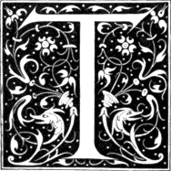
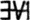
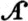
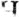
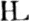
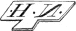
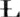

he best of the wood-cuts of the time of Albert Durer, more especially those executed by German engravers, are for the most part of rather large size; the best of those, however, which appeared within forty years of his decease are generally small. The art of wood engraving, both as regards design and execution, appears to have attained its highest perfection within about ten years of the time of Durer’s decease; for the cuts which, in my opinion, display the greatest excellence of the art as practised in former times, were published in 1538. The cuts to which I allude are those of the celebrated Dance of Death, which were first published in that year at Lyons. So admirably are those cuts executed,—with so much feeling and with so perfect a knowledge of the capabilities of the art,—that I do not think any wood engraver of the present time is capable of surpassing them. The manner in which they are engraved is comparatively simple: there is no laboured and unnecessary cross-hatching where the same effect might be obtained by simpler means; no display 325 of fine work merely to show the artist’s talent in cutting delicate lines. Every line is expressive; and the end is always obtained by the simplest means. In this the talent and feeling of the engraver are chiefly displayed. He wastes not his time in mere mechanical execution—which in the present day is often mistaken for excellence;—he endeavours to give to each character its appropriate expression; and in this he appears to have succeeded better, considering the small size of the cuts, than any other wood engraver, either of times past or present.
Though two or three of the cuts which will subsequently be given may be of rather earlier date than those of the Dance of Death, it seems preferable to give first some account of this celebrated work; and to introduce the cuts alluded to, though not in strict chronological order,—which is the less necessary as they do not illustrate the progress of the art,—with others executed in a similar style.
Long before the publication of the work now so generally known as “The Dance of Death,” a series of paintings representing, in a similar manner, Death seizing on persons of all ranks and ages, had appeared on the walls of several churches. A Dance of Death was painted in the cloisters of the Church of the Innocents at Paris, in the cloisters of St. Paul’s, London, and in the portico of St. Mary’s, Lubec. The painting in St Paul’s is said to have been executed at the cost of one Jenkin Carpenter, who lived in the reign of Henry VI, and who was one of the executors of that famous “lord-mayor of London,” Richard Whittington; and Dugdale, in his History of St. Paul’s Cathedral, says that it was in imitation of that in the cloisters of the Church of the Innocents at Paris.VI.1 This subject seems to have been usually known in former times by the name of “The Dance of Machabre,” from a French or German poet—for this point is not settled by the learned—of the name of Macaber or Macabre, who is said to have written a poem on this subject.VI.2 The 326 Dance of Death, however, which as a painting has attained greater celebrity and given rise to much more discussion than any other, is that which was painted on the wall of a kind of court-house attached to the Church of the Dominicans at Basle. This painting has frequently been ascribed to Holbein; but it certainly was executed before he was born; and there is not the slightest reason to believe that he ever touched it in any of the repairs which it underwent in subsequent years.
The following particulars respecting this painting are such as seem best authenticated.
It is said to owe its origin to a plague which ravaged the city of Basle in 1439, during the time of the great council, which commenced in 1431, and did not terminate till 1448. A number of persons of almost all ranks, whom the council had brought to this city, having fallen victims to the plague, it is said that the painting was executed in remembrance of the event, and as a memento of the uncertainty of life. Though it may be true that the great mortality at Basle in 1439 might have been the occasion of such a picture in the church-court—Kirchhofe, as it is called by Hegner in his Life of Holbein—of the Dominicans in that city, it is almost certain that the subject must have been suggested by one of much earlier date painted on the walls of an old building which had formerly been the cloisters of a nunnery which stood in that part of Basle which is called the Little City. This convent was founded in 1275; and the painting appears to have been executed in 1312, according to the following date, which was to be seen above one of the figures, that of the Count, who was also one of the characters in the painting in the church-court of the Dominicans: “Dussent jar treihuntert und Xii;” in English: One thousand three hundred and twelve. Several of the figures in this old painting were almost the same as in that of the church-court of the Dominicans, though executed in a coarser manner; and, like the latter, were accompanied with explanatory inscriptions in verse. This curious old work appears to have remained unnoticed till 1766, when one Emanuel Büchel, of Basle, by trade a baker, but an admirer of art, and an industrious draughtsman, had his attention directed to it. He made a careful copy in colours of all that then remained of it, and his drawings are now in the public library of Basle. 327 “This oldest Dance of Death,” says Hegner, writing in 1827, “is almost entirely effaced, and becomes daily more so, as well on account of age as from the cloisters of the old nunnery having been for many years used as a warehouse for salt.”VI.3
It is supposed that the Dance of Death in the church-court of the Dominicans at Basle was originally painted in fresco or distemper. The number of characters, each accompanied by a figure of Death, was originally forty;VI.4 but in 1568, a painter, named Hans Hugo Klauber, who was employed by the magistrates to repair the old painting, introduced a figure of the reformer Oecolampadius as if preaching to the characters composing the Dance, with portraits of himself, his wife, and their little son, at the end. It is probable that he painted over the old figures in oil-colour, and introduced sundry alterations, suggested by other paintings and engravings of the same subject. It appears likely that, at the same time, many of the old inscriptions were changed for others more in accordance with the doctrines of the Reformation, which then prevailed at Basle. The verses above the figure of the Pope were certainly not such as would have been tolerated at the period when the subject is supposed to have been first painted.VI.5 In 1616 the painting was again repaired; but, though a Latin inscription was then added containing the names of the magistrates who had thus taken care to preserve it, there is no mention made of any artist by whom the subject 328 had been originally painted or subsequently retouched. Had there been any record of Holbein having been at any time employed on the work, such a circumstance would most likely have been noticed; as his memory was then held in the highest estimation, and Basle prided herself on having had so eminent an artist enrolled among the number of her citizens. In 1658 the painting was again renewed: and there seems reason to believe that further alterations were then introduced both in the costume and the colouring. It was retouched in 1703; but from that time, as the paint began to peel off from the decaying walls, all attempts for its further preservation appear to have been considered hopeless. It would indeed seem to have become in a great measure disregarded by the magistrates, for a rope-maker used to exercise his trade under the roof that protected it from the weather. As the old wall stood much in the way of new buildings, it is not unlikely that they might be rather wishful to have it removed. In 1805 the magistrates pronounced sentence against the Dance of Death, and the wall on which it was painted was by their orders pulled down, though not without considerable opposition on the part of many of the citizens, more especially those of the suburb of St. John, within which the old church-court of the Dominicans stood. Several pieces of the painting were collected, and are still preserved at Basle as memorials of the old “Todten-tanz,” which was formerly an object of curiosity with all strangers who visited the city, and which has been so frequently the subject of discussion in the history of art.
Mr. Douce has given a list of many books containing the figures of a Dance of Death printed before the celebrated Simulachres et Historiées Faces de la Mort of Lyons, 1538; and among the principal the following may be here enumerated.—A German edition, intitled “Der Dodtendanz mit figuren. Clage und Antwort schon von allen staten der Welt.” This work, which is small folio, is mentioned in Braun’s Notitia librorum in Bibliotheca ad SS. Udalricum et Afram Augustæ, vol. ii. p. 62. It is without date, but Braun supposes that it may have been printed between 1480 and 1500. It consists of twenty-two leaves, with wood-cuts of the Pope, Cardinal, Bishop, Abbot, &c. &c. accompanied by figures of Death. The descriptions are in German verse, and printed in double columns.—The earliest printed book on this subject with a date is intitled “La Danse Macabre imprimée par ung nommé Guy Marchand,” &c. Paris, 1485, small folio. In 1486 Guy Marchand,—or Guyot Marchant, as he is also called,—printed another edition, “La Danse Macabre nouvelle,” with several additional cuts; and in the same year he printed “La Danse Macabre des Femmes,” a small folio of fifteen leaves. This is the first edition of the Macaber Dance of females. Thirty-two subjects are described, but there are only cuts of two, the 329 Queen and the Duchess. In 1490 an edition appeared with the following title: “Chorea ab eximio Macabro versibus Alemanicis edita, et à Petro Desrey emendata. Parisiis, per magistrum Guidonem Mercatorem [Guy Marchand] pro Godefrido de Marnef.” In the same year Marchand printed another edition of “La nouvelle Danse Macabre des Hommes;” and in the year following there appeared from his press a second edition of “La Danse Macabre des Femmes,” with cuts of all the characters and other additions. A Dance of Death, according to Von der Hagen, in his Deutsche Poesie, p. 459, was printed at Leipsic in 1496; and in 1499 a “Grande Danse Macabre des Hommes et Femmes” was printed in folio at Lyons. The latter is supposed to be the earliest that contains cuts of both men and women. About 1500, Ant. Verard printed an edition, in folio, of the Danse Macabre at Paris; and in various years between 1500 and 1530 a work with the same title and similar cuts was printed at Paris, Troyes, Rouen, Lyons, and Geneva. Besides those works, characters from the Dance of Death were frequently introduced as incidental illustrations in books of devotion, more especially in those usually denominated Horæ or Hours of the Virgin, and printed in France.VI.6
The celebrated “Dance of Death,” the cuts of which have been so generally ascribed to Hans Holbein as the engraver as well as designer, was first published at Lyons, in 1538. It is of small quarto size, and the title is as follows: “Les Simulachres & Historiées faces de la Mort, autant elegammēt pourtraictes, que artificiellement imaginées. A Lyon, Soubz l’escu de Coloigne. M.D.XXXVIII.” On the title-page is an emblematic wood-cut, very indifferently executed, representing three heads joined together, with a wreath above them; the middle one a full face, and those on each side in profile. Instead of shoulders, the heads, or busts, are provided with a pair of wings of peacock’s feathers; they 330 rest on a kind of pedestal, on which is also an open book inscribed with the maxim, “ΓΝΩΘΙ ΣΕΑΥΤΟΝ.” A large serpent is seen confined by the middle in a hole which must be supposed to pass through the pedestal; and to it (the pedestal) are chained two globes,—one surmounted by a small cross, like the emblem of imperial authority, and the other having two wings. This emblematic cut, which is certainly not “l’escu de Coloigne,” is accompanied with the motto “Usus me Genuit.”VI.7 At the conclusion of the book is the imprint, within an ornamental wood-cut border: “EXCVDEBANT LVGDVNI MELCHIOR ET GASPAR TRECHSEL FRATRES. 1538.” The title is succeeded by a preface, of six pages, which is followed by seven pages more, descriptive of “diverses tables de Mort, non painctes, mais extraictes de l’escripture saincte, colorées par Docteurs Ecclesiastiques, et umbragées par Philosophes.” After those verbal sketches of Death come the cuts, one on each page; and they are succeeded by a series of descriptions of death and reflections on mortality, the general title to which, commencing at signature H, is, “Figures de la Mort moralement descriptes, & depeinctes selon l’authorité de l’scripture, & des sainctz Peres.”
By far the most important passage in the book, at least so far as relates to the designer or engraver of the cuts, occurs in the preface, which is written much in the style of a pedantic father-confessor to a nunnery who felt a pleasure in ornamenting his Christian discourses and exhortations with the flowers of Pagan eloquence. The preface is addressed, “A moult reverende Abbesse du religieux convent S. Pierre de Lyon, Madame Jehanne de Touszele, Salut dun vray Zele,”VI.8 and the passage above mentioned is to the following effect. “But to return to our figured representations of Death, we have greatly to regret the death of him who has imagined such elegant figures as are herein contained, as much excelling all those heretofore printed,VI.9 as the pictures of Apelles or of Zeuxis surpass those of modern times; for, his funereal histories, 331 with their gravely versified descriptions, excite such admiration in beholders, that the figures of Death appear to them most life-like, while those of the living are the very pictures of mortality. It therefore seems to me that Death, fearing that this excellent painter would paint him in a manner so lively, that he should be no longer feared as Death, and apprehensive that the artist would thus become immortal, determined to shorten his days, and thus prevent him finishing other subjects which he had already drawn. Among these is one of a waggoner, knocked down and crushed under his broken waggon, the wheels and horses of which appear so frightfully shattered and maimed that it is as fearful to see their overthrow as it is amusing to behold the liquorishness of a figure of Death, who is perceived roguishly sucking the wine out of a broken cask, by means of a reed. To such imperfect subjects, as to the inimitable heavenly bow named Iris,VI.10 no one has ventured to put the last hand, on account of the bold drawing, perspectives, and shadows contained in this inimitable chef-d’œuvre, there so gracefully delineated, that from it we may derive a pleasing sadness and a melancholy pleasure, as in a thing mournfully delightful.” The cut of the waggoner, described by the French euphuist, was, however, afterwards finished, and, with others, inserted in a subsequent edition of the work. It is figured in the present volume at page 344.
The number of cuts in the first edition, now under examination, is forty-one; above each is a text of Scripture, in Latin; and below are four verses in French—the “descriptions severement rithmées,” mentioned in the preface—containing some moral or reflection germane to the subject. A few sets of impressions of all those cuts, except one, appear to have been taken before the work appeared at Lyons. They have been printed by means of a press,—not taken by friction in the manner in which wood engravers usually take their proofs,—and at the top of each cut is the name in the German language, but in Italic type. “Why those German names,” says Hegner, “in a work which, so far as we know, was first published at Lyons? They appear to confirm the opinion of the cuts having been actually engraved at Basle; and the descriptions correspond with the dialect of that city.” The late Mr. Ottley had impressions of forty of those original cuts, and six of those which were inserted in a later edition. In his Inquiry into the Origin and Early History of Engraving, Mr. Ottley, speaking of the Dance of Death, says: “It is certain that the cuts had been previously printed at Basle; and, indeed, some writers assert that the work was published in that city, with texts of Scripture, in the German language, above the cuts, and verses, in the 332 same language, underneath, as early as 1530; although, hitherto, I have been unable to meet with or hear of any person who had seen a copy of such an edition.” In a note upon this passage, Jansen, the compiler of an Essay on the Origin of Engraving, and the anonymous author of a work entitled Notices sur les Graveurs, Besançon, 1807, are cited as mentioning such an edition. To give every one his due, however, and to show the original authority for the existence of such an edition, I beg here to give an extract from Papillon, who never felt any difficulty in supposing a date, and whose conjectures such writers as Jansen have felt as little hesitation in converting into certainties. The substance of Papillon’s observations on this point is as follows: “But to return to Holbein’s Dance of Death, which is unquestionably a master-piece of wood engraving. There are several editions; the first of which, so far as may be judged, ought to be about 1530, as has been already said,VI.11 and was printed at Basle or Zurich, with a title to each cut, and, I believe, verses underneath, all in the German language.” What Papillon puts forth as a matter of conjecture and opinion, Von Murr, Jansen, and the author of the Notices sur les Graveurs, promulgate as facts, and Mr. Ottley refers to the two latter writers as if he were well inclined to give credit to their assertions.
From the following passage it would appear that Mr. Ottley had also been willing to believe that those impressions might have been accompanied with explanatory verses and texts of Scripture. “I have only to add, upon the subject of this celebrated work, that I am myself the fortunate possessor of forty pieces, (the complete series of the first edition, excepting one,) which are printed with the greatest clearness and brilliancy of effect, on one side of the paper only; each cut having over it its title, printed in the German language with moveable type. It is possible that they may originally have had verses underneath, and texts of Scripture above, in addition to the titles just mentioned: but as the margins are clipped on the sides and at bottom, it is now impossible to ascertain the fact.”VI.12
Had the forty impressions in question been accompanied with verses and texts of Scripture, they certainly might be considered as having 333 belonged to an earlier edition of the work than that of 1538, and for the existence of which Mr. Ottley has referred to the testimony of Jansen and the editor of the Notices sur les Graveurs, printed at Besançon. There is, however, a set of those cuts preserved in the public library at Basle, which seems clearly to prove that they had only been taken as specimens without any further accompaniment than the titles. They are printed on four folio leaves, on only one side of the paper, and there are ten cuts on each page; the title, in the German language, and in Italic type, like Mr. Ottley’s, is printed above each; and the same cut—that of the astrologer—is also wanting. From these circumstances there can scarcely be a doubt that the set formerly belonging to Mr. OttleyVI.13 had been printed in the same manner, and that each impression had subsequently been cut out, perhaps for the purpose of mounting them singly. The following are the titles given to those cuts, and to each is subjoined a literal translation. They are numbered as they follow each other in Les Simulachres et Historiees Faces de la Mort, 1538, which perhaps may not be incorrectly expressed by the English title, “Pictorial and Historical Portraits of Death.”
1. Die schöpfung aller ding—The creation of all things.
2. Adam Eua im Paradyſs—Adam and Eve in Paradise.
3. Vertribung Ade Eue—The driving out of Adam and Eve.
4. Adam baugt die erden—Adam cultivates the earth.
5. Gebeyn aller menschen—Skeletons of all men.
6. Der Papst—The Pope.
7. Der Keyser—The Emperor.
8. Der Künig—The King.
9. Der Cardinal—The Cardinal.
10. Die Keyserinn.—The Empress.
11. Die Küniginn—The Queen.
12. Der Bischoff—The Bishop.
13. Der Hertzog—The Duke.
14. Der Apt—The Abbot.
15. Die Aptissinn—The Abbess.
16. Der Edelman—The Nobleman.
17. Der Thümherr—The Canon.
18. Der Richter—The Judge.
19. Der Fürspräch—The Advocate.
20. Der Rahtsherr—The Magistrate.
21. Der Predicant—The Preaching Friar.
22. Der Pfarrherr—The Parish-priest.
23. Der Münch—The Monk.
24. Die Nunne—The Nun.
25. Dass Altweyb—The Old Woman.
33426. Der Artzet—The Doctor.
27. (Wanting in the specimens.) The Astrologer.
28. Der Rychman—The Rich Man.
29. Der Kauffman—The Merchant.
30. Der Schiffman—The Sailor.
31. Der Ritter—The Knight.
32. Der Graff—The Count.
33. Der Alt man—The Old Man.
34. Die Greffinn—The Countess.
35. Die Edelfraw—The Lady.
36. Die Hertzoginn—The Duchess.
37. Der Krämer—The Pedlar.
38. Der Ackerman—The Farmer.
39. Das Jung Kint—The Young Child.
40. Das Jüngst Gericht—The Last Judgment.
41. Die Wapen des Thots—Death’s coat-of-arms.
In 1542 a second edition of the Dance of Death, with the same cuts as the first, was published at Lyons, “Soubz l’escu de Coloigne,” by John and Francis Frellon, who appear to have succeeded to the business of the brothers Trechsel,—if, indeed, the latter were not merely the printers of the first edition. In a third edition, with the title Imagines Mortis, 1545, the verses underneath each cut are in Latin.VI.14 A cut of a lame beggar, which has no relation to the Dance of Death, is introduced as a tail-piece to one of the discourses on death—Cypriani Sermo de Mortalitate—at the end of the volume; but it is neither designed nor executed in the same style as the others.
In a fourth edition, with the title “Imagines Mortis,”VI.15 1547, eleven additional cuts are introduced; namely: 1. Death fighting with a soldier in Swiss costume; 2. Gamblers, with a figure of Death, and another of the Devil; 3. Drunkards, with a figure of Death; 4. The Fool, with a figure of Death playing on the bagpipes; 5. The Robber seized by Death; 6. The Blind Man and Death; 7. The Waggoner and Death; 8. Children, one of whom is borne on the shoulders of the others as a conqueror triumphing; 9. A child with a shield and dart; 10. Three children; one riding on an arrow, another on a bow, as on a hobby-horse, the third carrying a hare over his shoulder, suspended from a hunting pole; 11. Children as Bacchanalians. The last four subjects have no relation to a Dance of Death, but have evidently been introduced merely to increase the number of the cuts; they are, however, beautifully designed and well engraved. This edition contains twelve more cuts, reckoning the tail-piece of the Lame Beggar, than the first. Another edition, forming the fifth, was also published in 1547 under the title of “Les Images de la 335 Mort,” with French verses, as in the edition of 1538. The number of cuts is the same as in the edition of 1547 with Latin verses, and the title “Imagines Mortis,” or “Icones Mortis.”
In 1549, a sixth edition, with the same number of cuts as the last, was published, under the title of “Simolachri, Historie, e Figure de la Morte,” with the letter-press in Italian, with the exception of the texts of Scripture, which were in Latin, as in the others. In the preface, John Frellon—whose name appears alone in the edition of 1547, and in those of subsequent years—complains of a piracy of the book, which was printed at Venice in 1545, with fac-similes of the cuts of the first edition. “Frellon, by way of revenge,” says Mr. Douce, “and to save the trouble of making a new translation of the articles that compose the volume, made use of that of his Italian competitor.”VI.16 A seventh edition, with the title “Icones Mortis,” and containing fifty-three cuts, appeared, without any printer’s name, in 1554.
In an eighth edition, 1562, with the title “Les Images de la Mort, auxquelles sont adjoustees dix-sept figures,” five additional cuts are introduced, thus making seventeen more than are contained in the first. The total number of cuts in the edition of 1562 is fifty-eight; and that of the Lame Beggar, which first appeared as a tail-piece in the edition of 1545, has now a place among the others in the body of the book. The subjects of the five new cuts are: 1. The Husband, with a figure of Death; 2. The Wife,—Death leading a young woman by the hand, preceded by a young man playing on a kind of guitar; 3. Children as part of a triumph, one of them as a warrior on horseback; 4. Three children; one with a trophy of armour, another carrying a vase and a shield, the third seated naked on the ground; 5. Children with musical instruments. The subjects of children are designed and executed in the same style as those first introduced in the edition of 1547. The last of those five new cuts does not appear in regular order with the other fifty-seven; but is given as a tail-piece at the end of a preface to a devotional tract—La Medicine de l’Ame—in the latter part of the book. Mr. Douce mentions another edition with the date 1574. He, however, observes in a note: “This edition is given on the authority of Peignot,VI.17 page 62, but has not been seen by the author of this work. In the year 1547 there were three editions, and it is not improbable that, by the transposition of the two last figures, one of these might have been intended.” As one of Mr. Douce’s three editions of 1547 differs only 336 from another of the same date by having “Icones” instead of “Imagines” in the title-page, he might as consistently have claimed a fourth for the same year on the ground of a probable transposition of 74 for 47. All the authentic editions of the “Dance of Death,” previously noticed, were published at Lyons. The first, as has been already observed, was in small quarto; the others are described by Mr. Douce as being in duodecimo. In a Dutch Dance of Death, intitled “De Doodt vermaskert met swerelts ydelheit,” duodecimo, Antwerp, 1654, fourteen of the cuts, according to Mr. Douce, were from the original blocks which had been used in the Lyons editions.
It seems probable that the earliest copies of the cuts in “Les Simulachres et Historiées Faces de la Mort,” or Dance of Death, as the work is more frequently called, appeared in a small folio, intitled “Todtentantz,” printed at Augsburg in 1544, by “Jobst Denecker, Formschneyder.” As I have never seen a copy of this edition, I take the liberty of extracting the following notice of it from Mr. Douce: “This edition is not only valuable from its extreme rarity, but for the very accurate and spirited manner in which the fine original cuts are copied. It contains all the subjects that were then published, but not arranged as those had been. It has the addition of one singular print, intitled, ‘Der Eebrecher,’ i. e. the Adulterer, representing a man discovering the adulterer in bed with his wife, and plunging his sword through both of them, Death guiding his hands. On the opposite page to each engraving there is a dialogue between Death and the party, and at bottom a Latin hexameter. The subject of the Pleader has the unknown mark  and on that of the Duchess in bed, there is the date 1542.”VI.18 Mr. Douce is of opinion that the “Jobst Denecker, Formschneyder,” who appears as the printer, was the same person as Jobst or Jost de Negker, the wood engraver whose name is at the back of one of the cuts of the Triumphal Procession of Maximilian.—The next copy of the work is that intitled “Simolachri, Historie, e Figure de la Morte,” Venice, 1545, the piracy complained of by Frellon in his Italian edition of 1549. It contains forty-one cuts, as in the first Lyons edition of 1538. There is no variation in the figures; but the expression of the faces is frequently lost, and the general execution of the whole is greatly inferior to that of the originals. Another edition, in Latin, was published in 1546; and Mr. Douce says that there are impressions of the cuts on single sheets, at the bottom of one of which is the date 1568.—In 1555, an edition with the title “Imagines Mortis,” with fifty-three cuts, similar to those in the Lyons edition of 1547, was published at Cologne by the heirs of Arnold Birkman, Cologne, 1555; and there are four other editions of the same work, respectively dated 1557, 1566, 1567, and 1572. Alterations are 337 made in some of those cuts; in five of them the mark  is introduced; and in the cut of the Duchess the mark , seen on the bed-frame in the original, is omitted. All the alterations are for the worse; some of the figures seem like caricatures of the originals; and the cuts generally are, in point of execution, very inferior to those in the Lyons editions. The name of the artist to whom the mark belongs is unknown. In the preface to the Emblems of Mortality, page xx, the writer says it is “that of Silvius Antonianus, an artist of considerable merit.” This, however, is merely one of the blunders of Papillon, who, according to Mr. Douce, has converted the owner of this mark into a cardinal. Papillon, it would seem, had observed it on the cuts of an edition of Faerno’s Fables—printed at Antwerp, 1567, and dedicated to Cardinal Borromeo by Silvio Antoniano, professor of Belles Lettres at Rome, afterwards a cardinal himself—and without hesitation he concluded that the editor was the engraver.VI.19 The last of the editions published in the sixteenth century with wood-cuts copied from the Lyons work, appeared at Wittemberg in 1590.
Various editions of the Dance of Death, with copper-plate engravings generally copied from the work published at Lyons, are enumerated by Mr. Douce, but only one of them seems to require notice here. Between 1647 and 1651 Hollar etched thirty subjects from the Dance of Death, introducing occasionally a few alterations. From a careful examination of those etchings, I am inclined to think that most of them were copied not from the cuts in any of the Lyons editions, but from those in the edition published by the heirs of Birkman at Cologne. The original copper-plates of Hollar’s thirty etchings having come into the possession of Mr. James Edwards, formerly a bookseller in Pall-Mall, he published an edition in duodecimo, without date, but about 1794,VI.20 with preliminary observations on the Dance of Death, written by the late Mr. F. Douce. Those preliminary observations are the germ of Mr. Douce’s beautiful and more complete volume, published by W. Pickering in 1833 (and republished with additions by Mr. Bohn in 1858). As Petrarch’s amatory sonnets and poems have been called “a labour of Love,” with equal 338 propriety may Mr. Douce’s last work be intitled “a labour of Death.” Scarcely a cut or an engraving that contains even a death’s head and cross-bones appears to have escaped his notice. Incorporated is a Catalogue raisonné which contains an enumeration of all the tomb-stones in England and Wales that are ornamented with those standard “Emblems of Mortality,”—skull, thigh-bones in saltire, and hour-glass. In his last “Opus Magnum Mortis,” the notices of the several Dances of Death in various parts of Europe are very much enlarged, but he has not been able to adduce any further arguments or evidences beyond what appeared in his first essay, to show that the cuts in the original edition of the Dance of Death, published at Lyons, were not designed by Holbein. Throughout the work there are undeniable proofs of the diligence of the collector; but no evidences of a mind that could make them available to a useful end. He is at once sceptical and credulous; he denies that any poet of the name of Macaber ever lived; and yet he believes, on the sole authority of one T. Nieuhoff Picard, whose existence is as doubtful as Macaber’s, that Holbein painted a Dance of Death as large as life, in fresco, in the old palace at Whitehall.
Having now given a list of all the authentic editions of the Dance of Death and of the principal copies of it, I shall next, before saying anything about the supposed designer or engraver, lay before the reader a few specimens of the original cuts. Mr. Douce observes, of the forty-nine cuts given in his Dance of Death, 1833, that “they may be very justly regarded as scarcely distinguishable from their fine originals.” Now, without any intention of depreciating these clever copies, I must pronounce them inferior to the originals, especially in the heads and hands. In this respect the wood-cuts of the first Lyons edition of the Dance of Death are unrivalled by any other productions of the art of wood engraving, either in past or present times. In the present day, when mere delicacy of cutting in the modern French taste is often mistaken for good engraving, there are doubtless many admirers of the art who fancy that there would be no difficulty in finding a wood engraver who might be fully competent to accurately copy the originals in the first edition of the Dance of Death. The experiment, however, would probably convince the undertaker of such a task, whoever he might be, that he had in this instance over-rated his abilities. Let the heads in the Lyons cuts, and those of any copies of them, old or recent, be examined with a magnifying glass, and the excellence of the former will appear still more decidedly than when viewed with the naked eye.
The following cut is a copy of the same size as the original, which is the second of the Dance of Death, of the edition of 1538. The subject is Adam and Eve eating of the forbidden fruit; and in the series of early impressions, formerly Mr. Ottley’s, but now in the Print Room of 339 the British Museum, it is intitled “Adam Eva im Paradyss”—Adam and Eve in Paradise. The serpent, as in many other old engravings, as well as in paintings, is represented with a human face. In order to convey an idea of the original page, this cut is accompanied with its explanatory text and verses printed in similar type.
In the two first cuts, which represent the Creation of Eve, and Adam taking the forbidden fruit, the figure of Death is not seen. In the third, Adam and Eve driven out of Paradise, Death, playing on a kind of lyre, is seen preceding them; and in the fourth, Adam cultivating the earth, Death is perceived assisting him in his labour. In the fifth, intitled Gebeyn aller menschen—Skeletons of all men—in the early impressions of the cuts, formerly belonging to Mr. Ottley, but now in the British Museum, all the figures are skeletons; one of them is seen beating a pair of kettle drums, while others are sounding trumpets, as if rejoicing 340 in the power which had been given to Death in consequence of the fall of man. The texts above this cut are, “Væ væ væ habitantibus in terra. Apocalypsis viii;” and “Cuncta in quibus spiraculum vitæ est, mortua sunt. Genesis vii.” In the sixth cut there are two figures of Death,—one grinning at the pope as he bestows the crown on a kneeling emperor, and the other, wearing a cardinal’s hat, as a witness of the ceremony. In the thirty-sixth cut, the Duchess, there are two figures of Death introduced, and there are also two in the thirty-seventh, the Pedlar; but in all the others of this edition, from the seventh to the thirty-ninth, inclusive, there is only a single figure of Death, and in every instance his action and expression are highly comic, most distinctly evincing that man’s destruction is his sport. In the fortieth cut there is no figure of Death; the Deity seated on a rainbow, with his feet resting on the globe, is seen pronouncing final judgment on the human race. The forty-first, and last cut of the original edition, represents Death’s coat-of-arms——Die wapen des Thots. On an escutcheon, which is rent in several places, is a death’s-head, with something like a large worm proceeding from the mouth; above the escutcheon, a barred helmet, seen in front like that of a sovereign prince, is probably intended to represent the power of Death; the crest is a pair of fleshless arms holding something like a large stone immediately above an hour-glass; on the dexter side of the escutcheon stands a gentleman, who seems to be calling the attention of the spectator to this memento of Death, and on the opposite side is a lady; in the distance are Alpine mountains, the top of the highest partly shaded by a cloud. The appropriate text is, “Memorare novissima, 341 et in æternum non peccabis. Eccle. vii;” and the following are the verses underneath:
“Si tu veulx vivre sans peché
Voy ceste imaige a tous propos,
Et point ne seras empesché
Quand tu t’en iras en repos.”
The total number of cuts of the first edition in which Death is seen attending on men and women of all ranks and conditions, mocking them, seizing them, slaying them, or merrily leading them to their end, is thirty-seven.
The above cut is a copy of the thirty-third, the Old Man—Der Alt man—whom Death leads in confiding imbecility to the grave, while he 342 pretends to support him and to amuse him with the music of a dulcimer. The text and verses are given as they stand in the original.
The following cut is a copy of the thirty-sixth, the Duchess—Die Hertzoginn. In this cut, as has been previously observed, there are two figures of Death; one rouses her from the bed—where she appears to have been indulging in an afternoon nap—by pulling off the coverlet, while the other treats her to a tune on the violin. On the frame of the bed, or couch, to the left, near the bottom of the cut, is seen the mark , which has not a little increased the difficulty of arriving at any clear and unquestionable conclusion with respect to the designer or engraver of those cuts. The text and the verses are given literally, as in the two preceding specimens.
343The following cut, the Child—Das Iung Kint—is a copy of the thirty-ninth, and the last but two in the original edition. Death having been represented in the preceding cuts as beguiling men and women in court and council-chamber, in bed-room and hall, in street and field, by sea and by land, is here represented as visiting the dilapidated cottage of the poor, and, while the mother is engaged in cooking, seizing her youngest child.
The cut of the Waggon overturned, from which the following is copied, first appeared with ten others in the edition of 1547. From an inspection of this cut, which most probably is that mentioned as being left unfinished, in the prefatory address to Madame Jehanne de Touszele in the first edition, 1538, it will be perceived that the description which is there given of it is not correct, and hence arises 344 a doubt if the writer had actually seen it. He describes the driver as knocked down, and lying bruised under his broken waggon, and he says that the figure of Death is perceived roguishly sucking the wine out of a broken cask by means of a reed.VI.21 In the cut itself, however, the waggoner is seen standing, wringing his hands as if in despair on account of the accident, and a figure of Death,—for there are two in this cut,—instead of sucking the wine, appears to be engaged in undoing the rope or chain by which the cask is secured to the waggon. A second figure of Death is perceived carrying off one of the waggon-wheels. In this cut the subject is not so well 345 treated as in most of those in the edition of 1538; and it is also not so well engraved.—The text and verses annexed are from the edition of 1562.
Of the eleven additional cuts inserted in the edition of 1547, there are four of children, which, as has already been observed in page 334, have not the slightest connexion with the Dance of Death. The following is a copy of one of them. The editor seems to have found no difficulty in providing the subject with a text; and it serves as a peg to hang a quatrain on as well as the others which contain personifications of Death.
In the edition of 1562 five more cuts are inserted; but two of them only—the Bridegroom and the Bride—have relation to the Dance of Death; the other three are of a similar character to the four cuts of children first inserted in the edition of 1547. All the seven cuts of 346 children have been evidently designed by the same person. They are well engraved, but not in so masterly a style as the forty-one cuts of the original edition. The following is a copy of one of the three which were inserted in the edition of 1562.
Having now given what, perhaps, may be considered a sufficiently ample account of the Lyons Dance of Death, it next appears necessary to make some enquiries respecting the designer of the cuts. Until the publication of Mr. Douce’s observations, prefixed to the edition of Hollar’s etchings from those cuts, by Edwards, about 1794, scarcely any writer who mentions them seems to entertain a doubt of their having been designed by Holbein; and Papillon, in his usual manner, claims him as a wood engraver, and unhesitatingly declares that not only the cuts of the Lyons Dance of Death, but all the other cuts which are generally supposed to have been of his designing, were engraved by himself. Mr. Douce’s arguments are almost entirely negative,—for he produces no satisfactory evidence to show that those cuts were certainly 347 designed by some other artist,—and they are chiefly founded on the passage in the first Lyons edition, where the writer speaks of the death of the person “qui nous en a icy imaginé si elegantes figures.”
The sum of Mr. Douce’s objections to Holbein being the designer of the cuts in question is as follows. “The singularity of this curious and interesting dedication is deserving of the utmost attention. It seems very strongly, if not decisively, to point out the edition to which it is prefixed, as the first; and what is of still more importance, to deprive Holbein of any claim to the invention of the work. It most certainly uses such terms of art as can scarcely be mistaken as conveying any other sense than that of originality of design. There cannot be words of plainer import than those which describe the painter, as he is expressly called, delineating the subjects and leaving several of them unfinished: and whoever the artist might have been, it clearly appears that he was not living in 1538. Now, it is well known that Holbein’s death did not take place before the year 1554, during the plague which ravaged London at that time. If then the expressions used in this dedication signify anything, it may surely be asked what becomes of any claim on the part of Holbein to the designs of the work in question, or does it not at least remain in a situation of doubt and difficulty?”VI.22 With respect to the true import of the passage referred to, my opinion is almost directly the reverse of that expressed by Mr. Douce.
What the writer of the address to Madame Jehanne de Touszele, in the Lyons edition of 1538, says respecting the unfinished cuts, taken all together, seems to relate more properly to the engraver than the designer; more especially when we find that a cut—that of the Waggoner,—expressly noticed by him as being then unfinished, was given with others of a similar character in a subsequent edition.
From the incorrect manner in which the cut of the Waggoner is described, I am very much inclined to think that the writer had neither seen the original nor the other subjects already traced—the “plusieurs aultres figures jà par luy trassées”—of whose “bold drawing, perspectives, and shadows,” he speaks in such terms of admiration. If the writer knew little of the process of wood engraving, he would be very likely to commit the mistake of supposing that the engraver was also the designer of the cuts. Though I consider it by no means unlikely that the engraver might have been dead before the publication of the first edition, yet I am very much inclined to believe that the passage in which the cuts are mentioned is purposely involved in obscurity: the writer, while he speaks of the deceased artist in terms of the highest commendation, at the same time carefully conceals his name. If the account in the preface be admitted as correct, it would 348 appear that the cuts were both designed and engraved by the same person, and that those already drawn on the blockVI.23 remained unfinished in consequence of his decease; for if he were not the engraver, what prevented the execution of the other subjects already traced, and of which the bold drawing, perspective, and shadows, all so gracefully delineated, are distinctly mentioned? The engraver, whoever he might be, was certainly not only the best of his age, but continues unsurpassed to the present day, and I am satisfied that such precision of line as is seen in the heads could only be acquired by great practice. The designs are so excellent in drawing and composition, and so admirably are the different characters represented,—with such spirit, humour, and appropriate expression,—that to have produced them would confer additional honour on even the greatest painters of that or any other period. Are we then to suppose that those excellencies of design and of engraving were combined in an obscure individual whose name is not to be found in the roll of fame, who lived comparatively unknown, and whose death is only incidentally noticed in an ambiguous preface written by a nameless pedant, and professedly addressed to an abbess whose very existence is questionable?VI.24 Such a supposition I conceive to be in the highest degree improbable; and, on the contrary, I am perfectly satisfied that the cuts in question were not designed and engraved by the same person. Furthermore, admitting the address to Madame Jehanne de Touszele to be written in good faith, I am firmly of opinion that the person whose death is there mentioned, was the engraver, and not the designer of the cuts of the first edition.
The mark in the cut of the Duchess, is certainly not Holbein’s; and Mr. Douce says, “that it was intended to express the name of the designer, cannot be supported by evidence of any kind.” That it is not the mark of the designer, I agree with Mr. Douce, but my conclusion is drawn from premises directly the reverse of his; for had I not found evidence elsewhere to convince me that this mark can only be that of the engraver, I should most certainly have concluded that it was intended for the mark of the designer. In direct opposition to what Mr. Douce here says, up to the time of the publication of the Lyons 349 Dance of Death, the mark on wood-cuts is most frequently that of the designer, and whenever that of the engraver appears, it is as an exception to the general custom. It is, in fact, upon the evidence of the mark alone that the greater part of the wood-cut designs of Durer, Cranach, Burgmair, Behaim, Baldung, Grün, and other old masters, are respectively ascribed to them. The cuts of the Triumphal Procession of Maximilian with Hans Burgmair’s mark in front, and the names of the engravers written at the back of the blocks, may serve as an illustration of the general practice, which is directly the reverse of Mr. Douce’s opinion. If the weight of probability be not on the opposite side, the mark in question ought certainly, according to the usual practice of the period, to be considered as that of the designer.
In a subsequent page of the same chapter, Mr. Douce most inconsistently says, “There is an unfortunate ambiguity connected with the marks that are found on ancient engravings on wood, and it has been a very great error on the part of all the writers who treat on such engravings, in referring the marks that accompany them to the block-cutters, or as the Germans properly denominate them the formschneiders, whilst, perhaps, the greatest part of them really belong to the designers.” He commits in the early part of the chapter the very error which he ascribes to others. According to his own principles, as expressed in the last extract, he was bound to allow the mark to be that of the designer until he could show on probable grounds that it was not. But though Mr. Douce might deny that Holbein were the designer of those cuts, it seems that he durst not venture to follow up the line of his argument, and declare that Hans Lutzelburger was the designer, which he certainly might have done with at least as much reason as has led him to decide that Holbein was not. But he prudently abstained from venturing on such an affirmation, the improbability of which, notwithstanding the mark, might have led his readers to inquire, how it happened that so talented an artist should have remained so long undiscovered, and that even his contemporaries should not have known him as the designer of those subjects.
Though I am satisfied that the mark is that of the engraver of the cuts in the first edition of the Lyons Dance of Death, I by no means pretend to account for its appearing alone—thus forming an exception to the general rule—without the mark of the designer, and without any mention of his name either in the title or preface to the book. We have no knowledge of the connexion in the way of business between the working wood engravers and the designers of that period; but there seems reason to believe that the former sometimes got drawings made at their own expense and risk, and, when engraved, either published them on their own account, or disposed of them to booksellers and printers. It is 350 also to be observed that about the time of the publication of the first Lyons edition of the Dance of Death, or a few years before, wood engravers began to occasionally introduce their name or mark into the cut, in addition to that of the designer. A cut, in a German translation of Cicero de Officiis, Frankfort, 1538, contains two marks; one of them being that of Hans Sebald Behaim, and the other, the letters H. W., which I take to be that of the engraver. At a later period this practice became more frequent, and a considerable number of wood-cuts executed between 1540 and 1580 contain two marks; one of the designer, and the other of the engraver: in wood-cuts designed by Virgil Solis in particular, double marks are of frequent occurrence. As it seems evident that the publishers of the Lyons Dance of Death were desirous of concealing the name of the designer, and as it appears likely that they had purchased the cuts ready engraved from a Swiss or a German,—for the designs are certainly not French,—it surely cannot be surprising that he should wish to affix his mark to those most admirable specimens of art. Moreover, if those cuts were not executed under the personal superintendence of the designer, but when he was chiefly resident in a distant country, the engraver would thus have the uncontrolled liberty of inserting his own mark; and more especially, if those cuts were a private speculation of his own, and not executed for a publisher who had employed an artist to make the designs. Another reason, perhaps equally us good as any of the foregoing, might be suggested; as those cuts are decidedly the best executed of any of that period, the designer—even if he had opportunities of seeing the proofs—might have permitted the mark of the engraver to appear on one of them, in approbation of his talent.
This mark, , was first assigned to a wood engraver named Hans Lutzelburger, by M. Christian von Mechel, a celebrated engraver of Basle, who in 1780 published forty-five copper-plate engravings of a Dance of Death from drawings said to be by Holbein, and which almost in every respect agree with the corresponding cuts in the Lyons work, though of greater size.VI.25 M. Mechel’s conjecture respecting the 351 engraver of those cuts appears to have been first published in the sixteenth volume of Von Murr’s Journal; but though I am inclined to think that he is correct, it has not been satisfactorily shown that Hans Lutzelburger ever used the mark . He, however, lived at that period, and it is almost certain that he executed an alphabet of small initial letters representing a Dance of Death, which appear to have been first used at Basle by the printers Bebelius and Cratander about 1530. We give (on the following page) the entire series. He is also supposed to have engraved two other alphabets of ornamental initial letters, one representing a dance of peasants, “intermixed,” says Mr. Douce, “with other subjects, some of which are not of the most delicate nature;” the other representing groups of children in various playful attitudes. All those three alphabets are generally described by German and Swiss writers on art as having been designed by Holbein; and few impartial persons I conceive can have much doubt on the subject, if almost perfect identity between most of the figures and those in his known productions be allowed to have any weight.
[352]There is a set of proofs of the alphabet of the Dance of Death, printed on one sheet, preserved in the Public Library at Basle, and underneath is printed in moveable letters the name HAnns Lützelburger formschnider, genannt Franck,—that is, “Hanns Lutzelburger, wood engraver, named Franck.” The first H is an ornamented Roman capital; the other letters of the name are in the German character. The size of the cuts in this alphabet of the Dance of Death is one inch by seven-eighths. The reason for supposing that Hans Lutzelburger was the engraver of the cuts in the first edition of the Lyons Dance of Death are: 1. The similarity of style between the latter and those of the Basle alphabet of the same subject; and 2. The correspondence of the mark in the cut of the Duchess with the initial letters of the name H[ans] L[utzelburger], and the fact of his being a wood engraver of that period. Mr. Douce, in the seventh chapter of his work, professes to 353 examine the “claim of Hans Lutzelburger as to the design or execution of the Lyons engravings of the Dance of Death,” but his investigations seem very unsatisfactory; and his chapter is one of those “in which,” as Fielding says, “nothing is concluded.” He gives no opinion as to whether Lutzelburger was the designer of the Lyons cuts or not, though this is one of the professed topics of his investigation; and even his opinion, for the time being, as to the engraver, only appears in the heading of the following chapter, where it is thus announced: “List of several editions of the Lyons work on the Dance of Death, with the mark of Lutzenburger.”VI.26 His mind, however, does not appear to have been finally made up on this point; for in a subsequent page, 215, speaking of the mark in the cut of the Duchess, which he had previously mentioned as that of Hans Lutzelburger, he says, “but to whomsoever this mark may turn out to belong, certain it is that Holbein never made use of it.” His only unalterable decision appears to be that Holbein did not design the cuts of the Lyons Dance of Death, and in support of it he puts forth sundry arguments which are at once absurd and inconsistent; rejects unquestionable evidence which makes for the contrary opinion; and admits the most improbable that seems to favour his own.
Mr. Douce, in his seventh chapter, also gives a list of cuts, which he says were executed by Hans Lutzelburger; but out of the seven single cuts and three alphabets which he enumerates, I am inclined to think that Lutzelburger’s name is only to be found attached to one single cut and to one alphabet,—the latter being that of the initial letters representing a Dance of Death. The single cut to which I allude—and which, I believe, is the only one of the kind that has his name underneath it,—represents a combat in a wood between some naked men and a body of peasants. Within the cut, to the left, is the mark, probably of the designer, on a reversed tablet,  thus; and underneath is the following inscription, from a separate block: Hanns . Leuczellburger . Furmschnider × 1.5.2.2. An impression of this cut is preserved in the Public Library at Basle; and an alphabet of Roman capitals, engraved on wood, is printed on the same folio, below Lutzelburger’s name. In not one of the other single cuts does this engraver’s name occur, nor in fact any mark that can be fairly ascribed to him. The seventh cut, described by Mr. Douce,—a copy of Albert Durer’s Decollation of John the Baptist,—is ascribed to Lutzelburger on the authority of Zani. According to this writer,—for I have not seen the cut myself any more than Mr. Douce,—it has “the mark H. L. reversed,” which perhaps may prove to be L. H. “In the index of names,” says Mr. Douce, “he (Zani) finds his name thus written, Hans 354 Lutzelburger Formschnider genant (chiamato) Franck, and calls him the true prince of engravers on wood.” In what index Zani found the reversed mark thus expounded does not appear; I, however, am decidedly of opinion that there is no wood-cut in existence with the mark H. L. which can be ascribed with anything like certainty to Lutzelburger; and his name is only to be found at length under the cut of the Fight above mentioned, and printed in moveable characters on the sheet containing the proofs of the alphabet of the Dance of Death.VI.27 The title of “true prince of engravers on wood,” given by Zani to Lutzelburger, can only be admitted on the supposition of his being the engraver of the cuts in the first edition of the Lyons Dance of Death; but it yet remains to be proved that he ever used the mark or the separate letters H. L. on any previous or subsequent cut. Though, from his name appearing on the page containing the alphabet of the Dance of Death, and from the correspondence of his initials with the mark in the cut of the Duchess in the Lyons Dance of Death, I am inclined to think that he was the engraver of the cuts in the latter work, yet I have thought it necessary to enter thus fully into the grounds of his pretensions to the execution of those, and other wood engravings, in order that the reader may judge for himself.
Hegner, in his Life of Holbein, treats the claims that have been advanced on behalf of Lutzelburger too lightly. He not only denies that he was the engraver of the cuts in the first edition of the Lyons work, but also that he executed the cuts of the alphabet of the Dance of Death, although his name with the addition of “wood engraver”—formschnider—be printed on the sheet of proofs. If we cannot admit the inscription in question as evidence of Lutzelburger being the engraver of this alphabet, we may with equal reason question if any wood engraver actually executed the cut or cuts under which his name only appears printed in type, or which may be ascribed to him in the title of a book. Mr. Douce, speaking of the three alphabets,—of peasants, boys, and a Dance of Death,—all of which he supposes to have been engraved by Lutzelburger, says that the proofs “may have been deposited by him in his native city,” meaning Basle. Hegner, however, says that there is no trace of him to be found either in registers of baptism or burger-lists of Basle. He further adds, though I by no means concur with him in this opinion, “It is indeed likely that, as a travelling dealer in works of art—who, according to the custom of that period, took up their temporary residence sometimes in one place, sometimes in another,—he had obtained possession of those blocks, [of the alphabet of Death’s Dance, and the Fight, with his name,] and that he sold impressions from them in 355 the way of trade.”VI.28 Mr. Douce says that it may admit of a doubt whether the alphabets ascribed to Lutzelburger were cut on metal or on wood. It may admit of a doubt, certainly, with one who knows very little of the practice of wood engraving, but none with a person who is accustomed to see cuts executed in a much more delicate style by wood engravers of very moderate abilities. To engrave them on wood, would be comparatively easy, so far as relates to the mere delicacy of the lines; but it would be a task of great difficulty to engrave them in relief in any metal which should be much harder than that of which types are composed. To suppose that they might have been executed in type-metal, on account of the delicacy of the lines, would involve a contradiction; for not only can finer lines be cut on box-wood than on type-metal, but also with much greater facility.
It perhaps may not be unnecessary to give here two instances of the many vague and absurd conjectures which have been propounded respecting the designer or the engraver of the cuts in the Lyons editions of the Dance of Death. In a copy of this work of the edition 1545 now in the British Museum, but formerly belonging to the Reverend C. M. Cracherode, a portrait of a painter or engraver named Hans Ladenspelder is inserted opposite to the cut of the Duchess, as if in support of the conjecture that he might be the designer of those cuts, merely from the circumstance of the initial letters of his name corresponding with the mark . The portrait is a small oval engraved on copper, with an ornamental border, round which is the following inscription: “Imago Joannis Ladenspelder, Essendiensis, Anno ætatis suæ xxviii. 1540.”VI.29 The mark  is perceived on this portrait, and underneath is written the following MS. note, referring to the mark in the cut of the Duchess: “ the mark of the designer of these designs of Death’s Dance, not H. Holbein. By several persons that have seen Holbein’s Death Dance at Basil, it is not like these, nor in the same manner.” This note, so far as relates to the implied conjecture about Ladenspelder, may be allowed to pass without remark for what it is worth; but it seems necessary to remind the reader that the painting of the Dance of Death at Basle, here evidently alluded to, was not the work of Holbein, and to observe that this note is not in the handwriting of Mr. Cracherode, but that it has apparently been written by a former owner of the volume.
In a copy of the first edition, now lying before me, a former owner has written on the fly-leaf the following verses from page 158 of the Nugæ—Lyons, 1540,—of Nicholas Borbonius, a French poet:
356“Videre qui vult Parrhasium cum Zeuxide,
Accersat a Britannia
Hansum Ulbium, et Georgium Reperdium
Lugduno ab urbe Galliæ.”
The meaning of these verses may be thus expressed in English:
Whoever wishes to behold,
Painters like to those of old,
To England straightway let him send,
And summon Holbein to attend;
Reperdius,VI.30 too, from Lyons bring,
A city of the Gallic King.
To the extract from Borbonius,—or Bourbon, as he is more frequently called, without the Latin termination,—the writer has added a note: “An Reperdius harum Iconum sculptor fuerit?” That is: “Query, if Reperdius were the engraver of these cuts?”—meaning the cuts contained in the Lyons Dance of Death. Mr. Douce also cites the preceding verses from Nicholas Bourbon; and upon so slight and unstable a foundation he, more solito, raises a ponderous superstructure. He, in fact, says, that “it is extremely probable that he might have begun the work in question [the designs for the Dance of Death], and have died before he could complete it, and that the Lyons publishers might have afterwards employed Holbein to finish what was left undone, as well as to make designs for additional subjects which appeared in the subsequent editions. Thus would Holbein be so connected with the work as to obtain in future such notice as would constitute him by general report the real inventor of it.”
Perhaps in the whole of the discussion on this subject a more tortuous piece of argument is not to be found. It strikingly exemplifies Mr. Douce’s eagerness to avail himself of the most trifling circumstance which seemed to favour his own views; and his manner of twisting and twining it is sufficient to excite a suspicion even in the mind of the most careless inquirer, that the chain of argument which consists of a series of such links must be little better than a rope of sand. Mr. Douce must have had singular notions of probability, when, upon the mere mention of the name of Reperdius, by Bourbon, as a painter then residing at Lyons, he asserts that it is extremely probable that he, Reperdius, might have begun the work: it is evident that he does not employ the term in its usual and proper sense. If for “extremely probable” the words “barely possible” be substituted, the passage will be unobjectionable; and will then fairly represent the value of the conjecture of Reperdius having designed any of the cuts in question. If it be extremely probable 357 that the cuts of the first edition of the Lyons Dance of Death were designed by Reperdius, from the mere occurrence of his name in Bourbon, the evidence in favour of their being designed by Holbein ought with equal reason to be considered as plusquam-perfect; for the voices of his contemporaries are expressly in his favour, the cuts themselves bear a strong general resemblance to those which are known to be of his designing, and some of the figures and details in the cuts of the Dance of Death correspond so nearly with others in the Bible-cuts designed by Holbein, and also printed at Lyons by the brothers Trechsel, and in the same year, that there cannot be a doubt in the mind of any impartial inquirer who shall compare them, that either both series must have been designed by the same person, or that Holbein had servilely copied the works of an unknown artist greater than himself. Upon one of the horns of this dilemma, Mr. Douce, and all who assert that the cuts of the Lyons Dance of Death were not designed by Holbein, must inevitably be fixed.
One of the earliest evidences in favour of Holbein being the designer of the cuts in the Lyons Dance of Death is Nicholas Bourbon, the author of the epigram previously cited. In an edition of his Nugæ, published at Basle in 1540, are the following verses:VI.31
De morte picta à Hanso pictore nobili.
Dum mortis Hansus pictor imaginem exprimit,
Tanta arte mortem retulit ut mors vivere
Videatur ipsa: et ipse se immortalibus
Parem Diis fecerit operis hujus gloria.
Now,—after premising that the term picta was applied to designs engraved on wood, as well as to paintings in oil or water-colours,VI.32—it may be asked to what work of Holbein’s do these lines refer? The painting in the church-court at Basle was not executed by Holbein; neither was it ascribed to him by his contemporaries; for the popular error which assigns it to him appears to have originated with certain travellers who visited Basle upwards of a hundred years after Holbein’s decease. It indeed may be answered that Bourbon might allude to the alphabet of the Dance of Death which has been ascribed to Holbein. A mere supposition of this kind, however, would be untenable in this instance; for there is no direct evidence to show that Holbein was the designer of this alphabet, and the principal reason for supposing it to 358 have been designed by him rests upon the previous assumption of his being the designer of the cuts of the Lyons Dance of Death. Deny him the honour of this work, and assert that the last quoted verses of Bourbon must relate to some other, and the difficulty of showing by anything like credible evidence, that he was the designer of any other series of cuts, or even of a single cut, or painting, of the same subject, becomes increased tenfold. Mr. Douce, with the gross inconsistency that distinguishes the whole of his arguments on this subject, ascribes the alphabet of the Dance of Peasants to Holbein, and yet cautiously avoids mentioning him as the designer of the alphabet of the Dance of Death, though the reasons for this conclusion are precisely the same as those on which he rests the former assertion. Nay, so confused and contradictory are his opinions on this point, that in another part of his book he actually describes both alphabets as being the work of the same designer and the same engraver.
“Some of the writers on engraving,” says Mr. Douce, “have manifested their usual inaccuracy on the subject of Holbein’s Dance of Peasants. . . . . . . There is, however, no doubt that his beautiful pencil was employed on this subject in various ways, of which the following specimens are worthy of being recorded. In a set of initial letters frequently used in books printed at Basle and elsewhere,” &c. After thus having unhesitatingly ascribed the Dance of Peasants to Holbein, Mr. Douce, in a subsequent page,—when giving a list of cuts which he ascribes to Hans Lutzelburger,—writes as follows: “8. An alphabet with a Dance of Death, the subjects of which, with a few exceptions, are the same as those in the other Dance; the designs, however, occasionally vary,” &c. On concluding his description of this alphabet, he thus notices the alphabet of the Dance of Peasants, having apparently forgot that he had previously ascribed the latter to Holbein. “9. Another alphabet by the same artists. It is a Dance of Peasants, intermixed with other subjects, some of which are not of the most delicate nature.”VI.33
It is, however, uncertain if Mr. Douce really did believe Holbein to be the designer of the alphabet of the Dance of Death, though from the preceding extracts it is plainly, though indirectly asserted, that he was. In his wish to claim the engraving of the Dance of Peasants for Lutzelburger, Mr. Douce does not seem to have been aware that from the words “by the same artists,” coupled with his previous assertion, of Holbein being the designer of that alphabet, it followed as a direct consequence that he was also the designer of the alphabet of the Dance of Death. Putting this charitable construction on Mr. Douce’s words, it follows that his assertion of Lutzelburger being the engraver of the Dance of Peasants is purely gratuitous. If Mr. Douce really believed 359 that Holbein was the designer of the alphabet of the Dance of Death, he ought in fairness to have expressly declared his opinion; although such declaration would have caused his arguments, against Holbein being the designer of the cuts in the Lyons Dance of Death, to appear more paradoxical and absurd than they are when unconnected with such an opinion; for what person, with the slightest pretensions to rationality, could assert that Holbein was the designer of the alphabet of the Dance of Death executed in 1530, the subjects, with few exceptions, the same as those in the Dance of Death published at Lyons in 1538, and yet in direct opposition to contemporary testimony, and the internal evidence of the subjects themselves, deny that he was the designer of the cuts in the latter work, on the sole authority of the nameless writer of a preface which only appeared in the first edition of the book, and which, there seems reason to suspect, was addressed to an imaginary personage? Was Madame Jehanne de Touszele likely to feel herself highly complimented by having dedicated to her a work which contains undeniable evidences of the artist’s having been no friend to popery? In one cut a couple of fiends appear to be ridiculing his “Holiness” the pope; and in another is a young gallant with a guitar, entertaining a nun in her bed-chamber. If a pious abbess of St. Peter’s, Lyons, in 1538, should have considered that such cuts “tended to edification,” she must have been an extremely liberal woman for her age. It is exceedingly amusing, in looking over the cuts of the Lyons Dance of Death, to contrast the drollery and satire of the designer with the endeavours of the textuary and versifier to give them a devout and spiritual turn.
As it is certain from the verses of Bourbon, in praise of Holbein as the painter or designer of a subject, or a series of subjects, representing “Death as if he were alive,”—ut mors vivere videatur,—that this celebrated artist had designed a Dance of Death, Mr. Douce, being unable to deny the evidence thus afforded, paradoxically proceeds to fit those verses to his own theory; and after quoting them, at page 139, proceeds as follows: “It has already been demonstrated that these lines could not refer to the old painting of the Macaber Dance at the Dominican convent, whilst from the important dedication to the edition of the wood-cuts first published at Lyons in 1538, it is next to impossible that that work could then have been in Borbonius’s contemplation. It appears from several places in his Nugæ that he was in England in 1535, at which time Holbein drew his portrait in such a manner as to excite his gratitude and admiration in another copy of verses . . . . . . He returned to Lyons in 1536, and it is known that he was there in 1538, when he probably wrote the complimentary lines in Holbein’s Biblical designs a short time before their publication, either out of friendship to the painter, or at the instance of the Lyons publisher, with whom he was 360 certainly connected.—Now, if Borbonius, during his residence at Lyons, had been assured that the designs in the wood-cuts of the Dance of Death were the production of Holbein, would not his before-mentioned lines on that subject have been likewise introduced into the Lyons edition of it, or at least into some subsequent editions, in none of which is any mention whatever made of Holbein, although the work was continued even after the death of that artist? The application, therefore, of Borbonius’s lines must be sought for elsewhere; but it is greatly to be regretted that he has not adverted to the place where the painting,VI.34 as he seems to call it, was made.”
Mr. Douce next proceeds in his search after the “painting,” and he is not long in finding what he wishes for. According to his statement, “very soon after the calamitous fire at Whitehall, 1697, which consumed nearly the whole of that palace, a person, calling himself T. Nieuhoff Piccard, probably belonging to the household of William III, and a man who appears to have been an amateur artist,” made etchings after nineteen of the cuts in the Lyons Dance of Death. Impressions of those etchings, accompanied with manuscript dedications, appear to have been presented by this T. Nieuhoff Piccard to his friends or patrons, and among others to a Mynheer Heymans, and to “the high, noble, and well-born Lord William Denting, Lord of Rhoon, Pendraght,” &c. The address to Mynheer Heymans contains the following important piece of information respecting a work of Holbein’s, which appears most singularly to have escaped the notice of every other writer, whether English or foreign. “Sir,—The costly palace of Whitehall, erected by Cardinal Wolsey, and the residence of King Henry VIII, contains, among other performances of art, a Dance of Death, painted by Holbein, in its galleries, which, through an unfortunate conflagration, has been reduced to ashes.”VI.35 In the dedication to the “high, noble, and well-born Lord William Benting,” the information respecting this curious work of art,—all memory of which would have perished had it not been for the said T. Nieuhoff Piccard,—is rather more precise. “Sir, [not My Lord,]—In the course of my constant love and pursuit of works of art, it has been my good fortune to meet with that scarce little work of Hans Holbein, neatly engraved on wood, and which he himself had painted as large as life, in fresco, on the walls of Whitehall.” Who Mynheer Heymans was will probably never be discovered, but he seems to have been a person of some consequence in his day, though unfortunately never mentioned in any history or memoirs of the period, for it appears that the court thought proper, in consideration of his singular deserts, to 361 cause a dwelling to be built for him at Whitehall. My Lord William Benting,VI.36—though from his name and titles he might be mistaken for a member of the Bentinck family,—appears to have been actually born in the palace. It is, however, very unfortunate that his name does not occur in the peerage of that time; and as neither Rhoon nor Pendraght are to be found in Flanders or Holland, it is not unlikely that these may be the names of two of his lordship’s castles in Spain.
T. Nieuhoff Piccard’s express testimony of Holbein having painted a Dance of Death in fresco, at Whitehall, is, in Mr. Douce’s opinion, further corroborated by the following circumstances: 1. “In one of Vanderdort’s manuscript catalogues of the pictures and rarities transported from St. James’s to Whitehall, and placed there in the newly erected cabinet room of Charles I, and in which several works by Holbein are mentioned, there is the following article: ‘A little piece, where Death with a green garland about his head, stretching both his arms to apprehend a Pilate in the habit of one of the spiritual Prince-Electors of Germany. Copied by Isaac Oliver from Holbein.’ There cannot be a doubt that this refers to the subject of the Elector as painted by Holbein in the Dance of Death at Whitehall, proving at the same time the identity of the painting with the wood-cuts, whatever may be the inference. 2. Sandrart, after noticing a remarkable portrait of Henry VIII. at Whitehall, states ‘that there yet remains at that palace another work, by Holbein, that constitutes him the Apelles of his time.’ This is certainly very like an allusion to a Dance of Death. 3. It is by no means improbable that Matthew Prior may have alluded to Holbein’s painting at Whitehall, as it is not likely that he would be acquainted with any other.
‘Our term of life depends not on our deed,
Before our birth our funeral was decreed;
Nor aw’d by foresight, nor misled by chance,
Imperious Death directs the ebon lance,
Peoples great Henry’s tombs, and leads up Holbein’s Dance.’
Mr. Douce having previously proved that Holbein was not the designer of the cuts in the Lyons Dance of Death, thus, in a manner equally 362 satisfactory, accounts for the verses of Bourbon, by showing, on the unexceptionable evidence of “a person, calling himself T. Nieuhoff Piccard, probably belonging to the household of William III,” that the great work of Holbein—by the fame of which he had made himself equal with the immortal gods—was painted as large as life, in fresco, on the walls of Whitehall. The ingenuity displayed in depriving Holbein of the honour of the Lyons cuts is no less exemplified in proving him to be the painter of a similar subject in Whitehall. The key-stone is worthy of the arch.
Though the facts and arguments put forth by Mr. Douce, in proof of Holbein having painted a Dance of Death on the walls of the old palace of Whitehall, and of this having been the identical Dance of Death alluded to by Bourbon, might be summarily dismissed as being of that kind which no objection could render more absurd, yet it seems necessary to direct the especial attention of the reader to one or two points; and first to the assertion that “it is next to impossible that the Lyons Dance of Death of 1538 could then have been in Borbonius’s contemplation.” Now, in direct opposition to what is here said, it appears to me highly probable that this was the very work on account of which he addressed his epigram to Holbein; and it is moreover evident that Bourbon expresses in Latin verse almost precisely the same ideas as those which had previously been expressed in French by the writer of the address to Madame Jehanne de Touszele, when speaking of the merits of the nameless artist who is there alluded to as the designer or engraver of the cuts.VI.38 As Holbein is not certainly known to be the painter or designer of any other Dance of Death which might merit the high praise conveyed in Bourbon’s verses, to what other work of his will they apply? Even supposing, as I do, that the alphabet of the Dance of Death was designed by Holbein, I conceive it “next to impossible,” to use the words of Mr. Douce, that Bourbon should have described Holbein as having attained immortality through the fame of those twenty-four small letters, a perfect set of which I believe is not to be found in any single volume. 363 That Bourbon did know who was the designer of the cuts of the Lyons Dance of Death there can scarcely be the shadow of a doubt; he was at Lyons in the year in which the work was published; he was connected with the printers; and another work, the Icones Historiarum Veteris Testamenti, also published by them in 1538, has at the commencement a copy of verses written by Bourbon, from which alone we learn that Holbein was the designer of the cuts,—the first four of which cuts, be it observed, being from the same blocks as the first four in the Dance of Death, published by the same printers, in the same year. What might be the motives of the printers for not inserting Bourbon’s epigram in praise of Holbein in the subsequent editions of the Dance of Death, supposing him to be the designer of the cuts, I cannot tell, nor will I venture to guess. They certainly must have had some reason for concealing the designer’s name, for the writer of the prefatory address to Madame Jehanne de Touszele takes care not to mention it even when speaking in so laudatory a style of the excellence of the designs. Among the other unaccountable things connected with this work, I may mention the fact of the French prefatory address to the abbess of St. Peter’s appearing only in the first, and being omitted in every subsequent edition.
With respect to T. Nieuhoff Piccard, whose manuscript addresses to “Mynheer Heymans” and “Lord William Benting” are cited to prove that Bourbon’s verses must relate to a painting of the Dance of Death by Holbein in the old palace of Whitehall, nothing whatever is known; and there is not the slightest reason to believe that a Lord William Benting, born in the old palace of Whitehall, “Lord of Rhoon, Pendraght,” &c. ever existed. I am of opinion that the addresses of the person calling himself T. Nieuhoff Piccard are a clumsy attempt at imposition.VI.39 Though Mr. Douce had seen both those addresses, and also another of the same kind, he does not appear to have made any attempt to trace their former owners, nor does he mention the names of the parties in whose possession they were at the time that he saw them. He had seen the address to “Lord William Benting” previous to the publication of his 364 observations on the Dance of Death in 1794, when, if he had felt inclined, he might have ascertained from whom the then possessor had received it, and thus obtained a clue to guide him in his inquiries respecting the personal identity of the Lord of Rhoon and Pendraght. But this would not have suited his purpose; for he seems to have been conscious that any inquiry respecting such a person would only have tended to confirm the doubts respecting the paper addressed to him by Piccard. It is also uncertain at what time those pretended addresses were written, but there are impressions of the etchings which accompanied them with the date 1720; and I am inclined to think that if the paper and handwriting were closely examined, it would be found that those pretended presentation addresses were manufactured about the same, or perhaps at a later period. Whoever the person calling himself T. Nieuhoff Piccard may have been, or at whatever time the addresses to Mynheer Heymans and others may have been written, the only evidence of there having been a painting of the Dance by Holbein at Whitehall rests on his unsupported statement. Such a painting is not mentioned by any foreign traveller who had visited this country, nor is it noticed by any English writer prior to 1697; it is not alluded to in any tragedy, comedy, farce, or masque, in which we might expect that such a painting would have been incidentally mentioned had it ever existed. Evelyn, who must have frequently been in the old palace of Whitehall, says not a word of such a painting, though he mentions the Lyons Dance of Death under the title of Mortis Imago, and ascribes the cuts to Holbein;VI.40 and not the slightest notice of it is to be found in Vertue or Walpole.
The learned Conrad Gesner, who was born at Zurich in 1516, and died there in 1565, expressly ascribes the Lyons Dance of Death to Holbein;VI.41 and, notwithstanding the contradictory statement in the preface to the 365 first edition of this work, such appears to have been the general belief of all the artist’s contemporaries. Van Mander, who was born in 1548, and who died in 1606, appears to have been the first person who gave any account of the life of Holbein. His work, entitled Het Schilder Boek, consisting of biographical notices of painters, chiefly Germans and Flemings, was first published in 1604; and, when speaking of Holbein, he mentions the Lyons Dance of Death among his other works. Sandrart, in common with every other writer on art of the period, also ascribes the Lyons work to Holbein, and he gives the following account of a conversation that he had with Rubens respecting those cuts: “I remember that in the year 1627, when the celebrated Rubens was proceeding to Utrecht to visit Honthorst, I accompanied him as far as Amsterdam; and during our passage in the boat I looked into Holbein’s little book of the Dance of Death, the cuts of which Rubens highly praised, recommending me, as I was a young man, to copy them, observing, that he had copied them himself in his youth.” Sandrart, who seems to have been one of the earliest writers who supposed that Durer, Cranach, and others engraved their own designs, without any just grounds describes Holbein as a wood engraver. Patin, in his edition of the “Stultitiæ Laus” of Erasmus, 1676, repeats the same story; and Papillon in his decisive manner clenches it by asserting that “most of the delicate wood-cuts and ornamental letters which are to be found in books printed at Basle, Zurich, and towns in Switzerland, at Lyons, London, &c. from 1520 to about 1540, were engraved by Holbein himself.” Papillon also says that it is believed—on croit—that Holbein began to engrave in 1511, when he was about sixteen. “What is extraordinary in this painter,” he further adds, “is, that he painted and engraved with the left hand, so that he consequently engraved the lines on the wood from right to left, instead of, as with us, engraving from left to right.”VI.42 Jansen, and a host of other compilers, without inquiry, repeat the story of Holbein having been a wood engraver, and that the cuts of the Lyons Dance of Death were engraved by himself. That he was the designer of those cuts I am thoroughly convinced, though I consider it “next to impossible” that he should have been also the engraver.
Holbein’s Bible Cuts, as they are usually called, were first published at Lyons, in 1538, the same year, and by the same printers, as the Dance of Death. The book is a small quarto, and the title is as follows: “Historiarum Veteris Testamenti Icones ad vivum expressæ. Una cum brevi, sed quoad fieri potuit, dilucida earundem et Latina et Gallica 366 expositione. Lugduni sub scuto Coloniensi. M.D.XXXVIII.”VI.43 On the title-page is an emblematic cut, with the motto Usus me genuit, similar to that on the title-page in the first edition of the Dance of Death, but not precisely the same; and at the end is the imprint of the brothers Melchior and Caspar Trechsel within an ornamental border, as in the latter work. I am greatly inclined to think that the brothers were only the printers of the first editions of the Dance of Death and the Bible cuts, and that the real proprietors were John and Francis Frellon, whose names appear as the publishers in subsequent editions.
This opinion seems to be corroborated by the fact of there being an address from “Franciscus Frellaeus” to the Christian Reader in the Bible cuts of 1538 and 1539, which in subsequent editions is altered to “Franciscus Frellonius.” That the same person is designated by those names, I think there can be little doubt, as the addresses are literally the same. From adopting the form “Frellaeus,” however, in the editions of 1538 and 1539, it would seem that the writer was not wishful to discover his name. When the work becomes popular he writes it Frellonius; and in the second edition of the Dance of Death, when the character of this work is also established, and there seems no longer reason to apprehend the censures of the church of Rome, we find the names of John and Francis Frellon on the title-page under the “shield of Cologne.” Whatever might be their motives, it seems certain that the first publishers of the Dance of Death were wishful to withhold their names; and it is likely that the designer of the cuts might have equally good reasons for concealment. Had the Roman Catholic party considered the cuts of the Pope, the Nun, and two or three others as the covert satire of a reformed painter, the publishers and the designer would have been as likely to incur danger as to reap profit or fame.
The address of Franciscus Frellaeus is followed by a copy of Latin verses by Nicholas Bourbon, in which Holbein is mentioned as the designer; and immediately preceding the cuts is an address “aux lecteurs,” in French verse, by Gilles Corrozet, who, perhaps, might be the poet that supplied the French expositions of those cuts, and the “descriptions severement rithmées” of the Dance of Death. The following is an extract from Bourbon’s prefatory verses, the whole of which it appears unnecessary to give.
367“Nuper in Elysio cum fortè erraret Apelles
Una aderat Zeuxis, Parrhasiusque comes.
Hi duo multa satis fundebant verba; sed ille
Interea mœrens et taciturnus erat.
Mirantur comites, farique hortantur et urgent:
Suspirans imo pectore, Coûs ait:
O famæ ignari, superis quæ nuper ab oris
(Vana utinam!) Stygias venit ad usque domos:
Scilicet, esse hodie quendam ex mortalibus unum
Ostendat qui me vosque fuisse nihil:
Qui nos declaret pictores nomine tantum,
Picturæque omneis ante fuisse rudes.
Holbius est homini nomen, qui nomina nostra
Obscura ex claris ac prope nulla facit.
Talis apud manes querimonia fertur: et illos
Sic equidem merito censeo posse queri,
Nam tabulam siquis videat, quam pinxerit Hansus
Holbius, ille artis gloria prima suæ,
Protinus exclamet, Potuit Deus edere monstrum
Quod video? humanæ non potuere manus.
Icones hæ sacræ tanti sunt, optime lector,
Artificis, dignum quod venereris opus.”
Besides those verses there is also a Greek distich by Bourbon, to which the following translation “pene ad verbum” is appended:
“Cernere vis, hospes, simulacra simillima vivis?
Hoc opus Holbinæ nobile cerne manus.”
When Mr. Douce stated that it was “extremely probable that the anonymous painter or designer of the Dance might have been employed also by the Frellons to execute a set of subjects for the Bible previously to his death, and that Holbein was afterwards employed to complete the work,” he seems to have forgot that such a testimony of Holbein being the designer was prefixed to the Bible cuts. In answer to Mr. Douce it may be asked, in his own style, if the Frellons knew that another artist was the designer of the cuts of the Dance of Death, and if he also had been originally employed to design the Bible cuts, how does it happen that they should allow Bourbon to give all the honour of the latter to Holbein, who, if the Dance of Death be not his, was certainly much inferior as a designer to the nameless artist whose unfinished work he was employed to complete?
The total number of the Bible cuts in the first edition of the work is ninety, the first four of which are the same as the first four of the Dance of Death; the other eighty-six are of a different form to the first four, as will be perceived from the specimens, which are of the same size as the originals. Those eighty-six cuts are generally much inferior in design to those of the Dance of Death, and the style in which they are engraved is very unequal, some of them being executed with considerable 368 neatness and delicacy, and others in a much coarser manner. The following cut, Abraham about to sacrifice Isaac, Genesis XXII, is one of those which are the best engraved; but even these, so far as regards the expression of the features and the delicate marking of the hands, are generally much inferior to the cuts of the Dance of Death.
Though most of the Bible cuts are inferior both in design and execution to those of the Dance of Death, and though several of them are rudely drawn and badly engraved, yet many of them afford points of such perfect identity with those of the Dance of Death, that it seems impossible to come to any other conclusion than that either the cuts of both works have been designed by the same person, or that the designer of the one series has servilely copied from the designer of the other, and, what is most singular, in many trifling details which seem the least likely to be imitated, and which usually constitute individual peculiarities of style. For instance, the small shrubby tree in the preceding cut is precisely of the same species as that seen in the cut of the Old Woman in the Dance of Death; and the angel about to stay Abraham’s hand bears a strong general resemblance to the angel in Adam and Eve driven out of Paradise.
The cut on the opposite page—the Fool, Psalm LIII—is copied from one of those executed in a coarser style than the preceding. The children in this cut are evidently of the same family as those of the Dance of Death.
In the first cut, the Creation, a crack is perceived running nearly down the middle from top to bottom, in the edition of the Dance of Death of 1545. It is also perceptible in all the subsequent Lyons editions of this work and of the Bible cuts. It is, however, less obvious in the Bible cuts of the edition 1549 than in some of the preceding, 369 probably in consequence of the block having been cramped to remedy the defect. Mr. Douce speaks, at page 105, as if the crack were not discernible in the Bible cuts of 1549; it is, however, quite perceptible in every copy that has come under my notice. Some of the latter editions of this work contain four additional cuts, which are all coarsely executed. In the edition of 1547 they form the illustrations to Ezekiel XL; Ezekiel XLIII; Jonah I, II, and III; and Habakkuk. The Bible cuts were also printed with explanations in English. The title of a copy now before me is as follows: “The Images of the Old Testament, lately expressed, set forthe in Ynglishe and Frenche vuith a playn and brief exposition. Printed at Lyons by Johan Frellon, the yere of our Lord God, 1549,” 4to. In the latter editions there are wood-cuts of the four Evangelists, each within an oval border, on the last leaf. They bear no tokens of Holbein’s style.
Among the many instances of resemblance which are to be perceived on comparing the Dance of Death with the Bible cuts, the following may be enumerated as the most remarkable. The peculiar manner in which fire with smoke, and the waves of the sea, are represented in the Dance of Death can scarcely fail to strike the most heedless observer; for instance, the fire in the cut of Death seizing the child, and the waves in the cut of the Seaman. In the Bible cuts we perceive the same peculiarity; there is the same kind of fire in Moses directing the manner of burnt offerings, Leviticus I; in the burning of Nadab and Abihu, Leviticus X; and in every other one of those cuts where fire is seen. In the destruction of Pharaoh and his host, Exodus XIV, are the same kind of curling waves. Except in the Dance of Death and the Bible cuts, 370 I have never seen an instance of fire or water represented in such a manner. If those cuts were designed by two different artists, it is certainly singular that in this respect they should display so perfect a coincidence of idea. The sheep in the cut of the Bishop in the Dance of Death are the same as those in the Bible cut of Moses seeing God in the burning bush, Exodus III; and the female figure in the cut of the Elector in the former work is perceived in the Bible cut of the captive Midianites, Numbers XXXI. The children introduced in both works are almost perfectly identical, as will be perceived on comparing the cut of Little Children mocking Elijah, chapter II, Kings II, with those of the Elector, and Death seizing the child, in the Dance of Death. The face of the Duchess in the latter work is the same as that of Esther in the Bible cut, Esther, chapter II; and in this cut ornaments on the tapestry, like fleurs-de-lis, behind the throne of Ahasuerus, are the same as those on the tapestry behind the King in the Dance of Death. The latter coincidence has been noticed by Mr. Douce, who, in direct opposition to the evidence of the German or Swiss costume of the living characters of the Dance of Death, considers it as contributing to demonstrate that both the series of those cuts are of Gallic origin.VI.44 It is needless to enumerate more instances of almost complete identity of figures and details in the cuts of the Dance of Death and those of the Bible illustrations; they are too frequent to have originated from a conventional mode of representing certain objects and persons; and they are most striking in minor details, where one artist would be least likely to imitate another, but where the same individual designer would be most likely to repeat himself. “As to the designs of these truly elegant prints,” says Mr. Douce, speaking of the cuts of the Dance of Death, “no one who is at all skilled in the knowledge of Holbein’s style and manner of grouping his figures would hesitate immediately to ascribe them to that artist.”VI.45 As this opinion is corroborated by a comparison of the Dance of Death with the Bible cuts, and as the internal evidence of the cuts of the 371 Dance of Death in favour of Holbein is confirmed by the testimony of his contemporaries, the reader can decide for himself how far Holbein’s positive claims to the honour of this work ought to be affected by the passage in the anonymous address to Madame Jehanne de Touszele, which forms the groundwork of Mr. Douce’s theory.
Having now examined the principal arguments which have been alleged to show that Holbein was not the designer of the Dance of Death, and having endeavoured to justify his claims to that honour by producing the evidences on which they rest, I shall now take leave of this subject, feeling thoroughly assured that Holbein was the designer of the cuts of the first edition of the Lyons Dance of Death; and trusting, though with no overweening confidence, that the preceding investigation will render it necessary for the next questioner of his title to produce stronger objections than the solitary ambiguous passage in the preface to the first edition of the work, and to support them with more forcible and consistent arguments than have been put forth by Mr. Douce. M. T. Nieuhoff Piccard, I am inclined to think, will never again be called as a witness in this cause; and before the passage in the preface can be allowed to have any weight, it must be shown that such a personage as Madame Jehanne de Touszele was prioress of the convent of St. Peter at Lyons at the time of the first publication of the work: and even should such a fact be established, the ambiguity of the passage—whether the pretendedly deceased artist were the engraver or designer, or both,—and the obvious desire to conceal his name, remain to be explained.
In 1538, the year in which the Dance of Death and the Bible cuts were first published at Lyons, Holbein was residing in England under the patronage of Henry VIII; though it is also certain that about the beginning of September in that year he returned to Basle and he remained there a few weeks.VI.46
As the productions of this distinguished painter occupy so large a portion of this chapter, it perhaps may not be unnecessary to give here a few particulars of his life, chiefly derived from Hegner’s work, previous to his coming to England. Hans Holbein, the Younger, as he is often called by German writers to distinguish him from his father, was the son of Hans Holbein, a painter of considerable reputation. The year and place of his birth have not been positively ascertained, but there seems reason to believe that he was born in 1498, at Augsburg,VI.47 372 of which city his father was a burgher, and from whence he appears to have removed with his family to Basle, about the end of the fifteenth or the beginning of the sixteenth century. Young Holbein was brought up to his father’s profession, and at an early age displayed the germ of his future excellence. There is a portrait in oil by young Holbein of the date of 1513, which, according to Hegner, though rather weak in colour and somewhat hard in outline, is yet clearly and delicately painted. From the excellence of his early productions, Patin, in his Life of Holbein, prefixed to an edition of the Laus Stultitiæ of ErasmusVI.48 thinks that he must have been born in 1495. That he was born in 1498 there can, however, be little doubt, for Hegner mentions a portrait of him, at Basle, when in the forty-fifth year of his age, with the date 1543. Several anecdotes are told of Holbein as a jolly fellow, and of his twice or thrice discharging his account at a tavern by painting a Dance of Peasants. Though there seems reason to believe that Holbein was a free liver, and that he did paint such a subject in a house at Basle, the stories of his thus settling for his liquor are highly improbable. He appears to have married young, for in a painting of his wife and two children, executed before he left Basle for England in 1526, the eldest child, a boy, appears to be between four and five years old.VI.49
The name of Holbein’s wife is unknown; but it is said that, like Durer’s, she was of an unhappy temper, and that he enjoyed no peace with her. It is not, however, unlikely that his own unsettled disposition and straitened circumstances also contributed to render his home uncomfortable. Like most other artists of that period, he appears to have frequently travelled; but his journeys do not seem to have extended beyond Switzerland and Suabia, and they were for the most part confined to the former country. He seems to have travelled rather in search of employment than to improve himself by studying the works 373 of other masters. Perhaps of all the eminent painters of that period there is no one whose style is more original than Holbein’s, nor one who owes less to the study of the works of his contemporaries or predecessors. Though there can be no doubt of his talents being highly appreciated by his fellow-townsmen, yet his profession during his residence at Basle appears to have afforded him but a scanty income. The number of works executed by him between 1517 and 1526 sufficiently testify that he was not deficient in industry, and the exercise of his art seems to have been sufficiently varied:—he painted portraits and historical subjects; decorated the interior walls of houses, according to the fashion of that period, with fanciful and historical compositions; and made designs for goldsmiths and wood-engravers. It is said that so early as 1520, the Earl of Arundel,VI.50 an English nobleman, having seen some of his works in passing through Basle, advised him to try his fortune in England. If such advice were given to Holbein at that period, it is certain that it was not adopted until several years after, for he did not visit this country till 1526.
THE SHEATH OF A DAGGER, INTENDED AS A DESIGN FOR A CHASER.VI.51
Before he left Basle he had painted two or three portraits of Erasmus, and there is a large wood-cut of that distinguished scholar which is said not only to have been painted, but also engraved by Holbein. This cut is of folio size, and the figure of Erasmus is a whole length. His right arm rests upon a terminus, and from a richly ornamented arch is suspended a tablet, with the inscription, Er. Rot. Some old impressions have two verses printed underneath, which merely praise the likeness without alluding to the painter, while others have four which contain a compliment to the genius of Erasmus and to the art of Holbein.VI.52 The original block is still preserved in the Public Library at Basle; but there is not the slightest reason for believing that it was engraved by Holbein. In 1526 Holbein left Basle for England: Patin says, because he could no longer bear to live with his imperious wife. Though this might not be the chief cause, it is easy to conceive that a person of Holbein’s character would feel but little regret at parting from such a helpmate. Van Mander says that he took with him a portrait which he had painted of Erasmus, with a letter of recommendation from the latter to Sir Thomas More, wherein it was observed that this portrait ‘was 374 much more like him than any of Albert Durer’s.’ Hegner, however, thinks that what Van Mander says about the contents of this letter is not 375 correct, as no such passage is to be found in the published correspondence of Erasmus with Sir Thomas More. Erasmus had already sent two portraits of himself to England;VI.53 and as Sir Thomas More was personally acquainted with him, Hegner is of opinion that it would be unnecessary to mention that the portrait was a better likeness than any of those painted by Albert Durer. It is, however, by no means unlikely that Erasmus in speaking of a portrait of himself by Holbein—whether forwarded by the latter or not—might give his own opinion of it in comparison with one from the pencil of Durer.
It would appear that in 1525 Erasmus had already mentioned Holbein’s desire of trying his fortune in England to Sir Thomas More, for in a letter written by Sir Thomas to Erasmus, dated from the court at Greenwich, 18th of December 1525, there is a passage to the following effect: “Your painter, dear Erasmus, is an excellent artist, but I am apprehensive that he will not find England so fruitful and fertile as he may expect. I will, however, do all that I can in order that he may not find it entirely barren.”VI.54 From a letter, dated 29th of August 1526, written by Erasmus to his friend Petrus Aegidius at Antwerp, it seems reasonable to conclude that Holbein left Basle for England about the beginning of September. Though Holbein’s name is not expressly mentioned in this letter, there cannot be a doubt of his being the artist who is thus introduced to Aegidius: “The bearer of this is he who painted my portrait. I will not annoy you with his praises, although he is indeed an excellent artist. Should he wish to see Quintin, and you not have leisure to go with him, you can let a servant show him the house. The arts perish here; he proceeds to England to gain a few angels; if you wish to write [to England] you can send your letters by him.”VI.55 In this extract we discover a trait of the usual prudence of Erasmus, who, in introducing his humbler friends to persons of power or influence, seems to have been particularly careful not to give annoyance 376 from the warmth of his recommendations. How gently, yet significantly, does he hint to Aegidius that the poor painter who brings the letter is a person about whom he need give himself no trouble: if he has not leisure to introduce him personally to Quintin—that is, Quintin Matsys—he can send a servant to show him his house. The suggestion of the servant was a hint from Erasmus that he did not expect the master to go with Holbein himself.
Holbein on his arrival in England appears to have been well received by Sir Thomas More; and it is certain that he resided for some time with the learned and witty chancellor in his house at Chelsea. It is indeed said that he continued with him for three years, but Walpole thinks that this is very unlikely. Whether he may have resided during the whole of the intermediate time with Sir Thomas More or not, there seems reason to believe that Holbein entered the service of Henry VIII. in 1528. About the autumn of 1529VI.56, he paid a short visit to Basle, probably to see his family, which he had left in but indifferent circumstances, and to obtain permission from the magistracy for a further extension of his leave of absence, for no burgher of the city of Basle was allowed to enter into the service of a foreign prince without their sanction. Patin, in his Life of Holbein, says that during his visit he spent most of his time with his old tavern companions, and that he treated the more respectable burghers, who wished to cultivate his friendship, with great disrespect. Hegner, however, considers all those accounts which represent Holbein as a man of intemperate habits and dissolute character, as unworthy of credit; in his opinion it seems impossible that he who was a favourite of Henry VIII, and so long an inmate of Sir Thomas More’s house, should have been a dissolute person. M. Hegner throughout his work shows a praiseworthy regard for Holbein’s moral character, but his presumption in this instance is not sufficient to counterbalance the unfavourable reports in the opposite scale.
About the latter end of 1532, or the beginning of 1533, Holbein again visited Basle; and his return appears to have been chiefly 377 influenced by an order of the magistracy, which was to the following effect: “To M. Hans Holbein, painter, now in England. We Jacob Meier, burgomaster and councillor, herewith salute you our beloved Hans Holbein, fellow-burgher, and give you to understand that it is our desire that you return home forthwith. In order that you may live easier at home, and provide for your wife and child,VI.57 we are pleased to allow you the yearly sum of thirty guilders, until we can obtain for you something better. That you may make your arrangements accordingly, we acquaint you with this resolution. Given, Monday, 2nd September 1532.”VI.58 It is uncertain how long Holbein remained at Basle on his second visit, but it was probably of short duration. Though he obeyed the summons of the magistracy to return, he seems to have had sufficient interest to obtain a further extension of his leave of absence. For the third and last time he revisited Basle in 1538; and from a licence, signed by the burgomaster Jacob Meier, dated 16th November in that year, it appears that he obtained permission to return to England and remain there for two years longer. In this licence fifty guilders per annum are promised to Holbein on his return to Basle, and till then the magistrates further agree to allow his wife forty guilders per annum to be paid quarterly, and the first quarter’s payment to commence on the eve of St. Lucia next ensuing,—that is, on the 12th of December. As the mention of the allowance to Holbein’s wife would seem to imply that she was not very well provided for by her husband, Hegner attempts to excuse his apparent neglect by suggesting “that the great sometimes forget to pay, and will not bear dunning;” and in illustration of this he refers to the passage in Albert Durer’s Journal which has been previously given at page 269.
Holbein’s three visits to Basle have been here especially noticed in order that the reader might judge for himself as to the probability of his making the drawings for the Lyons Dance of Death on any of those occasions. As this work was published in 1538, and as Holbein on his last visit appears to have arrived at Basle about the beginning of September in that year, it is impossible that he should have made the drawings then; for if the forty-one cuts were executed by one person—as 378 from the similarity and excellence of the style there seems every reason to believe—it would require at the least half a year to engrave them, supposing that the artist worked as expeditiously as a wood engraver of modern times. As it is highly probable that Holbein both made designs and painted on his former visits, in 1529, and in 1532 or 1533, I think it most likely that they were made on the latter occasion,—that is, supposing them to have been designed on one of those visits. It is, however, just as probable that the designs were made in England, and forwarded to a wood engraver at Basle.
Of the various paintings executed by Holbein during his residence in England it is not necessary to give any account here; those who wish for information on this point are referred to Walpole’s Anecdotes of Painting.VI.59 Of his life in England there are few particulars. “In some household accounts of Henry VIII,” says Mr. Douce, “there are payments to him in 1538, 1539, 1540, and 1541, on account of his salary, which appears to have been thirty pounds per annum. From this time little more is recorded of him till 1553, when he painted Queen Mary’s portrait, and shortly afterwards died of the plague in 1554.” Thomas Howard, Earl of Arundel, the great patron of artists, in the time of Charles I, was desirous of erecting a monument to the memory of Holbein, but gave up the intention as he was unable to discover the place of the artist’s interment. As Holbein seems to have left no will, and as his death appears to have excited no notice, it is likely that he died poor, and in comparative obscurity. If his satirical drawingsVI.60 of Christ’s Passion, ridiculing the Pope and the popish clergy, were known to Mary, or any of her spiritual advisers, it could not be expected that he should find favour at her court.
Wood engraving in England during the time of Holbein’s residence in this country appears to have been but little cultivated; but though there cannot be a doubt that the art was then practised here by native wood 379 engravers, yet I very much question if it were practised by any person in England as a distinct profession. It is not unlikely that many of the wood-cuts which appear in books printed in this country about that period were engraved by the printers themselves. It has indeed been supposed that most of the wood-cuts in English books printed at that period were engraved on the continent; but this opinion seems highly improbable—there could be no occasion to send abroad to have wood-cuts so rudely executed. Perhaps the difficulty, or rather the impossibility of finding a wood engraver in England capable of doing justice to his designs might be one reason why Holbein made so few for the booksellers of this country during his long residence here. The following portrait of Sir Thomas Wyatt, the poet, who died in 1541, was probably drawn on the block by Holbein. It is given on the reverse of the title of a small work in quarto, printed at London, 1542, and entitled “Næniæ in mortem Thomæ Viati equitis incomparabilis. Joanne Lelando antiquario autore.” The verses, which are printed underneath the cut, seem decisive of the drawing having been made by Holbein. There is a drawing of Sir Thomas Wyatt by Holbein, in the Royal Collection, which is engraved in Chamberlain’s work, entitled “Imitations of Original Drawings by Hans Holbein,” folio, 1792. There is little similarity between the drawing and the cut, though on comparison it is evident that both are intended for the same person.
In effigiem Thomæ Viati.
Holbenus nitida pingendi maximus arte
Effigiem expressit graphicè: sed nullus Apelles
Exprimet ingenium felix animumque Viati.
It has been supposed that the original cut, of which the preceding is a fac-simile, was engraved by Holbein himself: if this were true, and the cut itself taken as a specimen of his abilities in this department 380 of art, there could not be a doubt of his having been a very indifferent wood engraver, for though there be considerable expression of character in the drawing of the head, the cut is executed in a very inferior style of art.
The cuts in Cranmer’s Catechism, a small octavo, printed in 1548,VI.61 have been ascribed to Holbein; but out of the whole number, twenty-nine, including the cut on the reverse of the title, there are only two which contain his mark. In the others the manner of pencilling is so unlike that of these two, and the drawing and composition bear so little resemblance to Holbein’s usual style, that I do not believe them to have been of his designing. In the cut on the reverse of the title, the subject is Cranmer presenting the Bible to Edward VI.; the others, twenty-eight in number, but containing only twenty-six different subjects,—as two of them are repeated,—are illustrative of different passages of Scripture cited in the work. The following cut is one of those designed by Holbein. It occurs at folio CL as an illustration of “the fyrst sermon. A declaration of the fyrst peticion” [of the Lord’s Prayer]. Holbein’s initials, H. H.—though the cross stroke of the first H is broken away—are perceived on the edge of what seems to be a book, to the left of the figure praying.
The other cut, designed by Holbein, and which contains his name at 381 full length,VI.62 occurs at folio CCI. The subject is Christ casting out Devils, in illustration of the seventh petition of the Lord’s Prayer,—“Deliver us from evil.” The following is a fac-simile.
For the purpose of showing the difference of style between those two cuts and the others contained in the same work, the three given on the following page have been selected. The first, illustrating the Creation, occurs at the folio erroneously numbered CXCV, properly CIX, No. 1; the second, illustrating the sermon of our redemption, at folio CXXI, No. 2; and the third, illustrating the third petition of the Lord’s Prayer,—“Thy will be done,”—at folio CLXVIII, No. 3. The following are the introductory remarks to the explanation of what the archbishop calls the third petition: “Ye have herde how in the former petycions, we require of our Lorde God to gyve us al thinges that perteyne to his glorye and to the kyngdom of heaven, whereof he hath gyven us commaundemente in the three preceptes written in the first table. Nowe folowethe the thirde peticyon, wherein we praye God to graūte us that we may fulfyll the other seven commaūdementes also, the whiche intreat of matiers concerning this worldly kingdome and transitorye lyfe, that is to saye, to honoure our parentes and gouernours, to kyl no man, to committe none adulterye, to absteyne from thefte and lyinge, and to behave our selfes in all thinges obedientlye, honestlye, peaceably, and godly.”
382The feebleness of the drawing and the want of distinctness in these three cuts, are totally unlike the more vigorous delineation of Holbein, as exemplified, though but imperfectly, in the two which are doubtlessly of his designing. None of them have the slightest 383 pretensions to delicacy or excellence of engraving, though they may be considered as the best that had been executed in this country up to that time. Those which, in my opinion, were not designed by Holbein have the appearance of having been engraved on a frushy kind of wood, of comparatively coarse grain. It is not, however, unlikely that this appearance might result from the feebleness of the drawing, conjoined with want of skill on the part of the engraver.
The following cut will not perhaps form an inappropriate termination to the notice of the principal wood engravings which have been ascribed to Holbein. It occurs as an illustration of the generation of Christ, Matthew, chapter I, in an edition of the New Testament, printed at Zurich, by Froschover, in 1554,VI.63 the year of Holbein’s death. Though there be no name to this cut, yet from the great resemblance which it bears to Holbein’s style, I have little doubt of the design being his.
The three following specimens of the cuts in Tindale’s Translation of the New Testament, printed at Antwerp in 1534,VI.64 ought, in strict 384 chronological order, to have preceded those of the Dance of Death; but as Holbein holds the same rank in this chapter as Durer in the preceding, it seemed preferable to give first a connected account of the principal wood-cuts which are generally ascribed to him, and which 385 there is the strongest reason to believe were actually of his designing. The celebrity of Tindale’s translation, as the earliest English version of the New Testament which appeared in print, and the place which his name occupies in the earlier part of the history of the Reformation in England, will give an interest to those cuts to which they could have no pretensions as mere works of art. It is probable that they were executed at Antwerp, where the book was printed; and the drawing and engraving will afford some idea of the style of most of the small cuts which are to be found in works printed in Holland and Flanders about that period. The first of the preceding cuts represents St. Luke employed in painting a figure of the Virgin, and it occurs at the commencement of the Gospel of that Evangelist. The second, which occurs at the commencement of the General Epistle of James, represents that Saint in the character of a pilgrim. The third, Death on the Pale Horse, is an illustration of the sixth chapter of Revelations.
No. 3.
There is a beautiful copy, printed on vellum, of this edition of Tindale’s Translation of the New Testament in the Library of the British Museum. It appears to have formerly belonged to Queen Anne Boleyn, and was probably a presentation copy from the translator. The title-page is beautifully illuminated; the whole of the ornamental border, which is seen in the copies on paper, is covered with gilding and colour, and the wood-cut of the printer’s mark is covered with the blazoning of the royal arms. On the edges, which are gilt, there is inscribed, in red letters, Anna Regina Angliæ. This beautiful volume formerly belonged to the Reverend C. M. Cracherode, by whom it was bequeathed to the Museum.
The first complete English translation of the Old and New Testaments was that of Miles Coverdale, which appeared in folio, 1535,VI.65 without the name or residence of the printer, but supposed to have been printed at 386 Zurich by Christopher Froschover. The dedication is addressed to Henry VIII, by “his Graces humble subjecte and daylie oratour, Myles Coverdale;” and in the copy in the British Museum the commencement is as follows: “Unto the most victorious Prynce and our most gracyous soveraigne Lorde, kynge Henry the eyght, kynge of Englonde and of Fraunce, lorde of Irlonde, &c. Defendour of the Fayth, and under God the chefe and supreme heade of the churche of Englonde. ¶The ryght and just administracyon of the laws that God gave unto Moses and unto Josua: the testimonye of faythfulnes that God gave of David: the plenteous abundance of wysdome that God gave unto Salomon: the lucky and prosperous age with the multiplicacyon of sede which God gave unto Abraham and Sara his wyfe, he gevē unto you most Gracyous Prynce, with your dearest just wyfe and most virtuous Pryncesse, Quene Anne. Amen.” In most copies, however, “Quene Jane” is substituted for “Quene Anne,” which proves that the original dedication had been cancelled after the disgrace and execution of Anne Boleyn, and that, though the colophon is dated 4th October 1535, the work had not been generally circulated until subsequent to 20th May 1536, the date of Henry’s marriage with Jane Seymour.
This edition contains a number of wood-cuts, all rather coarsely engraved, though some of them are designed with such spirit as to be not unworthy of Holbein himself, as will be apparent from two or three of the following specimens. In the first, Cain killing Abel, the attitude of Abel, and the action of Cain, sufficiently indicate that the original designer understood the human figure well, and could draw it with great force in a position which it is most difficult to represent.
No. 1.
The figure of Abraham in No. 2 bears in some parts considerable resemblance to that of the same subject given as a specimen of Holbein’s 387 Bible cuts at page 368; but there are several others in the work which are much more like his style; and which, perhaps, might be copied from earlier cuts of his designing. The two preceding may be considered as specimens of the best designed cuts in the Old Testament; and the following, the return of the Two Spies, is given us one of the more ordinary.
No. 2.
No. 3.
The three next cuts are from the New Testament. The first forms the head-piece to the Gospel of St. Matthew; the second, which occurs on the title-page, and displays great power of drawing in the figure, is John the Baptist; and the third represents St. Paul writing, with his sword before him, and a weaver’s loom to his left: the last incident, 388 which is frequently introduced in old wood-cuts of this Saint, is probably intended to designate his business as a tentmaker, and also to indicate that, though zealously engaged in disseminating the doctrines of Christ, he had not ceased to “work with his hands.”
No. 1.
No. 2.
No. 3.
389Many of the cuts in this work are copied in a subsequent edition, also in folio, printed in 1537; and some of the copies are so extremely like the originals—every line being retained—as to induce a suspicion that the impressions of the latter had been transferred to the blocks by means of what is technically termed “rubbing down.”
About 1530 the art of chiaro-scuro engraving on wood, which appears to have been first introduced into Italy by Ugo da Carpi, was practised by Antonio Fantuzzi, called also Antonio da Trente. Most of this engraver’s chiaro-scuros are from the designs of Parmegiano. It is said that Fantuzzi was employed by Parmegiano for the express purpose of executing chiaro-scuro engravings from his drawings, and that, when residing with his employer at Bologna, he took an opportunity of robbing him of all his blocks, impressions, and designs. Between 1530 and 1540 Joseph Nicholas Vincentini da Trente engraved several chiaro-scuros, most of which, like those executed by Fantuzzi, are from the designs of Parmegiano. From the number of chiaro-scuros engraved after drawings by this artist, I think it highly probable that the most of them were executed under his own superintendence and published for his own benefit. Baldazzar Peruzzi and Domenico Beccafumi, both painters of repute at that period, are said to have engraved in chiaro-scuro; but the prints in this style usually ascribed to them are not numerous, and I consider it doubtful if they were actually of their own engraving.
From about 1530, the art of wood engraving, in the usual manner, began to make considerable progress in Italy, and many of the cuts executed in that country between 1540 and 1580 may vie with the best wood engravings of the same period executed in Germany. Instead of the plain and simple style, which is in general characteristic of Italian wood-cuts previous to 1530, the wood engravers of that country began to execute their subjects in a more delicate and elaborate manner. In the period under consideration, we find cross-hatching frequently introduced with great effect; there is a greater variety of tint in the cuts; the texture of different substances is indicated more correctly; the foliage of trees is more natural; and the fur and feathers of animals are discriminated with considerable ability.
The following cut will afford perhaps some idea of the best Italian wood-cuts of the period under consideration. It is a reduced copy of the frontispiece to Marcolini’s Sorti,VI.66 folio, printed at Venice in 1540. 390 There is an impression of this cut on paper of a greenish tint in the Print Room of the British Museum, and from this circumstance it is placed, though improperly, in a volume, marked I. W. 4, and lettered “Italian chiaro-scuros.” Underneath this impression the late Mr. Ottley has written, “Not in Bartsch;” and from his omitting to mention the work for which it was engraved, I am inclined to think that he himself was not aware of its forming the frontispiece to Marcolini’s Sorti. Papillon, speaking of the supposed engraver, Joseph Porta Garfagninus, whose name is seen on a tablet near the bottom towards the right, says, “J’ai de lui une fort belle Académie des Sciences,”VI.67 but seems not to have known of the work to which it belonged. This cut is merely a copy, reversed, of a study by Raffaele for his celebrated fresco, usually 391 called the School of Athens, in the Vatican. It is engraved in a work entitled “Vies et Oeuvres des Peintres les plus célèbres,” 4to. Paris, 1813; and in the Table des Planches at the commencement of the volume in which it occurs, the subject is thus described: “Pl. CCCCV. Etude pour le tableau de l’Ecole d’Athènes. Ces différens episodes ne se retrouvant pas dans le tableau qui a été exécuté des mains de Raphaël, ne doivent être considérées que comme des essais ou premières pensées. Grav. M. Ravignano.” From this description it appears that the same subject had been previously engraved on copper by Marco da Ravenna, who flourished about the year 1530. Though I have never seen an impression of Marco’s engraving of this subject, and though it is not mentioned in Heineken’s catalogue of the engraved works of Raffaele,VI.68 I have little doubt that Porta’s wood-cut is copied from it.
Joseph Porta, frequently called Joseph Salviati by Italian authors, was a painter, and he took the surname of Salviati from that of his master, Francesco Salviati.VI.69 There are a few other wood-cuts which contain his name; but whether he was the designer, or the engraver only, is extremely uncertain.
Marcolini’s work contains nearly a hundred wood-cuts besides the frontispiece, but, though several of them are designed with great spirit, no one is so well engraved.VI.70 The following is a fac-simile of one which occurs at page 35. The relentless-looking old woman is a personification of Punitione—Punishment—holding in her right hand a tremendous scourge for the chastisement of evil-doers. Though this cut be but coarsely engraved, the domestic Nemesis, who here appears to wield the retributive scourge, is designed with such spirit that if the figure were executed in marble it might almost pass for one of Michael 392 Angelo’s. The drapery is admirably cast; the figure is good; and the action and expression are at once simple and severe.
The preceding cut, also a fac-simile, occurs at page 81 as an illustration of Matrimony. The young man, with his legs already tied, 393 seems to be deliberating on the prudence of making a contract which may possibly add a yoke to his shoulders. The ring which he holds in his hand appears to have given rise to his cogitations.
The following small cuts of cards—“Il Re, Fante, Cavallo, e Sette di denari”—are copied from the instructions in the preface;VI.71 and the beautiful design of Truth rescued by Time—Veritas Filia Temporis—occurs as a tail-piece on the last page of the work. This cut occurs not unfrequently in works published by Giolito, by whom I believe the Sorti was printed; and two or three of the other cuts contained in the volume are to be found in a humorous work of Doni’s, entitled “I Marmi,” printed by Giolito in 1552.
The wood engravers of Venice about the middle of the sixteenth century appear to have excelled all other Italian wood engravers, and for the delicacy of their execution they rivalled those of Lyons, who at that period were chiefly distinguished for the neat and delicate manner of their engraving small subjects. In the pirated edition of the Lyons Dance of Death, published at Venice in 1545 by V. Vaugris, the cuts are more correctly copied and more delicately engraved than 394 those in the edition first published at Cologne by the heirs of Arnold Birkman in 1555. In fact, the wood engravings in books printed at Lyons and Venice from about 1540 to 1580 are in general more delicately engraved than those executed in Germany and the Low Countries during the same period. Among all the Venetian printers of that age, Gabriel Giolito is entitled to precedence from the number and comparative excellence of the wood-cuts contained in the numerous illustrated works which issued from his press. In several of the works printed by him every cut is surrounded by an ornamental border; and this border, not being engraved on the same block as the cut, but separately as a kind of frame, is frequently repeated: sixteen different borders, when the book is of octavo size and there is a cut on every page, would suffice for the whole work, however extensive it might be. The practice of ornamenting cuts in this manner was very prevalent about the period under consideration, and at the present time some publishers seem inclined to revive it. I should, however, be sorry to see it again become prevalent, for though to some subjects, designed in a particular manner, an ornamental border may be appropriate, yet I consider the practice of thus framing a series of cuts as indicative of bad taste, and as likely to check the improvement of the art. Highly ornamented borders have, in a certain degree, the effect of reducing a series of cuts, however different their execution, to a standard of mediocrity; for they frequently conceal the beauty of a well-engraved subject, and serve as a screen to a bad one. In Ludovico Dolce’s Transformationi—a translation, or rather paraphrase of Ovid’s Metamorphoses—first printed by Giolito in 1553, and again 395 in 1557, the cuts, instead of having a border all round, have only ornaments at the two vertical sides. The preceding is a fac-simile of one of those cuts, divested of its ornaments, from the edition of 1557. The subject is the difficult labour of Alcmena,—a favourite with Italian artists. This is the cut previously alluded to at page 217.
A curious book, of which an edition, in quarto, was printed at Rome in 1561, seems deserving of notice here, not on account of any merit in the wood-cuts which it contains, but on account of the singularity of four of them, which are given as a specimen of a “Sonetto figurato,” in the manner of the cuts in a little work entitled “A curious Hieroglyphick Bible,” first printed in London, in duodecimo, about 1782. The Italian work in question was written by “Messer Giovam Battista Palatino, Cittadino Romano,” and from the date of the Pope’s grant to the author of the privilege of exclusively printing it for ten years, it seems likely that the first edition was published about 1540. The work is a treatise on penmanship; and the title-page of the edition of 1561—which is embellished with a portrait of the author—may be translated as follows: “The Book of M. Giovam Battista Palatino, citizen of Rome, in which is taught the manner of writing all kinds of characters, ancient and modern, of whatever nation, with Rules, Proportions, and Examples. Together with a short and useful Discourse on Cyphers. Newly revised and corrected by the Author. With the addition of fifteen beautiful cuts.”VI.72 In Astle’s Origin and Progress of Writing, page 227, second edition, Palatino’s work is thus noticed: “In 1561, Valerius Doricus printed at Rome a curious book on all kinds of writing, ancient and modern. This book contains specimens of a great variety of writing practised in different ages and countries; some of these specimens are printed from types to imitate writing, and others from carved wood-blocks. This book also contains a treatise on the art of writing in cipher, and is a most curious specimen of early typography.”
After his specimens of “Lettere Cifrate,” Palatino devotes a couple of pages to “Cifre quadrate, et Sonetti figurati,” two modes of riddle-writing which, it appears, are solely employed for amusement. The 396 “Cifro quadrato” is nothing more than a monogram, formed of a cluster of interwoven capitals, but in which every one of the letters of the name is to be found. In the following specimen the name thus ingeniously disguised is Lavinia.
The following is a slightly reduced copy of the first four lines of the “Sonetto figurato;” the other ten lines are expressed by figures in a similar manner. “As to figured sonnets,” says the author, “no better rule can be given, than merely to observe that the figures should clearly and distinctly correspond with the matter, and that there should be as few supplementary letters as possible. Of course, orthography and pure 397 Italian are not to be looked for in such exercises; and it is no objection that the same figure be used for the beginning of one word, the middle of another, or the end of a third. It is the chief excellence of such compositions that there should be few letters to be supplied.”
The “interpretatio” of the preceding figured text is as follows:
“Dove son gli occhi, et la serena forma
Del santo alegro et amoroso aspetto?
Dov’ è la man eburna ov’ e ’l bel petto
Ch’ appensarvi hor’ in fonte mi transforma?”
This figured sonnet is a curious specimen of hieroglyphic and “phonetic” writing combined. For those who do not understand Italian, it seems necessary to give the following explanation of the words, and point out their phonetic relation to the things. Dove, where, is composed of D, and ove, eggs, as seen at the commencement of the first line. Son, are, is represented by a man’s head and a trumpet, making a sound, son. The preceding figures are examples of what is called “phonetic” writing, by modern expounders of Egyptian antiquities,—that is, the figures of things are not placed as representatives of the things themselves, but that their names when pronounced may form a word or part of a word, which has generally not the least relation to the thing by which it is phonetically, that is, vocally, expressed. Occhi, eyes, is an instance of hieroglyphic writing; the figure and the idea to be represented agree. La, the, is represented by the musical note la; serena, placid, by a Siren,—Sirena,—orthography, as the author says, is not to be expected in figured sonnets; and forma, shape, by a shoemaker’s last, which is called forma in Italian.
In the second line, Santo, holy, is represented by a Saint, Santo; allegro, cheerfulness, by a pair of wings, ale, and grue, a crane, the superfluous e forming, with the T following, the conjunction et, and. The words amoroso aspetto are formed of amo, a hook, rosa, a rose, and petto, the breast, with a supplementary s between the rose and the breast.
In the third line we have ove, eggs, and the musical la again; man, the hand, is expressed by its proper figure; eburna, ivory-like, is composed of the letters EB and an urn, urna; and in the latter part of the line the eggs, ov’, and the breast, petto, are repeated.
At the commencement of the fourth line, a couple of cloaks, cappe, stand for ch’ appe in the compound word ch’ appensarvi; hor’, now, is represented by an hour-glass, hora, literally, an hour; fonte, a fountain, is expressed by its proper figure; and the words mi transforma, are phonetically expressed by a mitre, mitra, the supplementary letters NS, and the shoemaker’s last, forma.
In the reign of Queen Elizabeth, a taste for inventing devices in this manner seems to have been fashionable among professed wits; and the 398 practice of expressing a name by a rebus was not unfrequent in an earlier age. It is probable that the old sign of the Bolt-in-Tun in Fleet Street derives its origin from Bolton, a prior of St. Bartholomew’s in Smithfield, who gave a bird-bolt in the bung-hole of a tun as the rebus of his name. The peculiarities of the Italian figured sonnet are not unaptly illustrated in Camden’s Remains, in the chapter entitled “Rebus,VI.73 or Name-Devises:” “Did not that amorous youth mystically expresse his love to Rose Hill, whom he courted, when in a border of his painted cloth he caused to be painted as rudely as he devised grossely, a rose, a hill, an eye, a loafe, and a well,—that is, if you will spell it,
Rose Hill I love well.”VI.74
Among the wood engravers of Lyons who flourished about the middle of the sixteenth century, the only one whose name has come down to modern times is Bernard Solomon; and if he were actually the engraver of the numerous cuts which are ascribed to him, he must have been extremely industrious. I am not, however, aware of any cut which contains his mark; and it is by no means certain whether he were really a wood engraver, or whether he only made the designs for wood engravers to execute. Papillon, who has been blindly followed by most persons who have either incidentally or expressly written on wood engraving, unhesitatingly claims him as a wood engraver; but looking at the inequality in the execution of the cuts ascribed to him, and regarding the sameness of character in the designs, I am inclined to think that he was not an engraver, but that he merely made the drawings on the wood. Sir E. L. Bulwer has committed a mistake of this kind in his England and the English: “This country,” says he in his second volume, page 205, edition 1833, “may boast of having, in Bewick of Newcastle, brought wood engraving to perfection; his pupil, Harvey, continues the profession with reputation.” The writer here evidently speaks of that which he knows very little about, for at the time that his book was published, Harvey, though originally a wood engraver, and a pupil of 399 Bewick, had abandoned the profession for about eight years, and had devoted himself entirely to painting and drawing for copper-plate and wood engravers. Indeed I very much question if Sir Edward Lytton Bulwer ever saw a cut—except, perhaps, that of Dentatus,—which was actually engraved by Harvey. With about equal propriety, a writer, speaking of wood engraving in England twenty years ago, might have described the late John Thurston as “continuing the profession with reputation,” merely because he was one of the principal designers of wood engravings at that period.
Bernard Solomon, whether a designer or engraver on wood, is justly entitled to be ranked among the “little masters” in this branch of art. All the cuts ascribed to him which have come under my notice are of small size, and most of them are executed in a delicate manner; they are, however, generally deficient in effect,VI.75 and may readily be distinguished by the tall slim figures which he introduces. He evidently had not understood the “capabilities” of his art, for in none of his productions do we find the well-contrasted “black-and-white,” which, when well managed, materially contributes to the excellence of a well-engraved wood-cut. The production of a good black is, indeed, one of the great advantages, in point of conventional colour, which wood possesses over copper; and the wood engraver who neglects this advantage, and labours perhaps for a whole day to cut with mechanical precision a number of delicate but unmeaning lines, which a copper-plate engraver would execute with facility in an hour, affords a tolerably convincing proof of his not thoroughly understanding the principles of his art. In Bernard’s cuts, and in most of those executed at Lyons about the same period, we find much of this ineffective labour; we perceive in them many evidences of the pains-taking workman, but few traits of the talented artist. From the time that a taste for those little and laboriously executed, but spiritless cuts, began to prevail, the decline of wood engraving may be dated. Instead of confining themselves within the legitimate boundaries of their own art, wood engravers seem to have been desirous of emulating the delicacy of copper-plate engraving, and, as might naturally be expected by any one who understands the distinctive peculiarities of the two arts, they failed. The book-buyers of the period having become sickened with the glut of tasteless 400 and ineffective trifles, wood engraving began to decline: large well-engraved wood-cuts executed between 1580 and 1600 are comparatively scarce.
Bernard Solomon, or, as he is frequently called, Little Solomon, from the smallness of his works, is said to have been born in 1512, and the most of the cuts which are ascribed to him appeared in works printed at Lyons between 1545 and 1580. Perhaps more books containing small wood-cuts were printed at Lyons between those years than in any other city or town in Europe during the corresponding period. It appears to have been the grand mart for Scripture cuts, emblems, and devices; but out of the many hundreds which appear to have been engraved there in the period referred to, it would be difficult to select twenty that can be considered really excellent both in execution and design. One of the principal publishers of Lyons at that time was Jean de Tournes; many of the works which issued from his press display great typographic excellence, and in almost all the cuts are engraved with great neatness. The following cut is a fac-simile of one which appears in the title-page of an edition of Petrarch’s Sonnetti, Canzoni, e Trionfi, published by him in a small octodecimo volume, 1545.
The design of the cut displays something of the taste for emblem and deviceVI.76 which was then so prevalent, and which became so generally diffused by the frequent editions of Alciat’s Emblems, the first of which was printed about 1531. The portraits of Petrarch and Laura, looking not unlike “Philip and Mary on a shilling,” are 401 seen enclosed within a heart which Cupid has pierced to the very core with one of his arrows. The volume contains seven other small cuts, designed and engraved in a style which very much resembles that of the cuts ascribed to Bernard Solomon; and as there is no mark by which his productions are to be ascertained, I think they are as likely to be of his designing as three-fourths of those which are generally supposed to be of his engraving.
The work entitled “Quadrins Historiques de la Bible,” with wood-cuts, ascribed to Bernard Solomon, and printed at Lyons by Jean de Tournes, was undoubtedly suggested by the “Historiarum Veteris Testamenti Icones”—Holbein’s Bible-cuts—first published by the brothers Frellon in 1538. The first edition of the Quadrins Historiques was published in octavo about 1550, and was several times reprinted within the succeeding twenty years. The total number of cuts in the edition of 1560 is two hundred and twenty-nine, of which no less than one hundred and seventy are devoted to the illustration of Exodus and Genesis. At the top of each is printed the reference to the chapter to which it relates, and at the bottom is a “Quadrin poëtique, tiré de la Bible, pour graver en la table des affeccions l’amour des sacrees Histories.” Those “Quadrins” appear to have been written by Claude Paradin. The composition of several of the cuts is good, and nearly all display great neatness of execution. The following is a fac-simile of the seventh, Adam and Eve driven out of Paradise. It is, however, necessary to observe that this is by no means one of the best cuts either in point of design or execution.
402A similar work, entitled “Figures du Nouveau Testament,” with cuts, evidently designed by the person who had made the drawings for those in the “Quadrins Historiques de la Bible,” was also published by Jean de Tournes about 1553, and several editions were subsequently printed. The cuts are rather less in size than those of the Quadrins, and are, on the whole, rather better engraved. The total number is a hundred and four, and under each are six explanatory verses, composed by Charles Fonteine, who, in a short poetical address at the commencement, dedicates the work “A Tres-illustre et Treshaute Princesse, Madame Marguerite de France, Duchesse de Berri.” The following, Christ tempted by Satan, is a copy of the sixteenth cut, but like that of the expulsion of Adam and Eve, it is not one of the best in the work.
Old engravings and paintings illustrative of manners or of costume are generally interesting; and on this account a set of large wood-cuts designed by Peter Coeck of Alost, in Flanders, is deserving of notice. The subjects of those cuts are the manners and costumes of the Turks; and the drawings were made on the spot by Coeck himself, who visited Turkey in 1533. It is said that he brought from the east an important secret relative to the art of dyeing silk and wool for the fabrication of tapestries, a branch of manufacture with which he appears to have been connected, and for which he made a number of designs. He was also an architect and an author; and published several treatises on sculpture, geometry, perspective, and architecture. The cuts illustrative of the manners and costume of the Turks were not published until 1553, three years after his decease, as we learn from an inscription 403 on the last.VI.77 They are oblong, of folio size; and the seven of which the set consists are intended to be joined together, and thus to form one continuous subject. The figures, both on foot and horseback, are designed with great spirit, but they want relief, and the engraving is coarse. One of the customs which he has illustrated in the cut No. 3 is singular; and though this orientalism has been noticed by a Scottish judge—Maclaurin of Dreghorn—Peter Coeck appears to be the only traveller who has graphically represented “quo modo Turci mingunt,” i. e. sedentes. Succeeding artists have availed themselves liberally of those cuts. As the Turks in the sixteenth century were much more formidable as a nation than at present, and their manners and customs objects of greater curiosity, wood engravings illustrative of their costume and mode of living appear to have been in considerable demand at that period, for both in books and as single cuts they are comparatively numerous.
Though chiaro-scuro engraving on wood was, in all probability, first practised in Germany, yet the art does not appear to have been so much cultivated nor so highly prized in that country as in Italy. Between 1530 and 1550, when Antonio Fantuzzi, J. N. Vincentini, and other Italians, were engaged in executing numerous chiaro-scuros after the designs of such masters as Raffaele, Corregio, Parmegiano, Polidoro, Beccafumi, and F. Salviati, the art appears to have been comparatively abandoned by the wood engravers of Germany. The chiaro-scuros executed in the latter country cannot generally for a moment bear a comparison, either in point of design or execution, with those executed in Italy during the same period. I have, however, seen one German cut executed in this style, with the date 1543, which, for the number of the blocks from which it is printed, and the delicacy of the impression in certain parts, is, if genuine, one of the most remarkable of that period. As the paper, however, seems comparatively modern, I am induced to suspect that the date may be that of the painting or drawing, and that this picture-print—for, though executed by the same process, it would be improper to call it a chiaro-scuro—may have been the work of Ungher, a German wood engraver, who executed some chiaro-scuros at Berlin about seventy years ago. Whatever may be the date, however, or whoever may have been the artist, it is one of the best executed specimens of coloured block printing that I have ever seen.
404This curious picture-print, including the border, is ten inches and three quarters high by six inches and three quarters wide. The subject is a figure of Christ; in his left hand he holds an orb emblematic of his power, while the right is elevated as in the act of pronouncing a benediction. His robe is blue, with the folds indicated by a darker tint, and the border and lighter parts impressed with at least two lighter colours. Above this robe there is a large red mantle, fastened in front with what appears to be a jewel of three different colours, ruby, yellow, and blue; the folds are of a darker colour; and the lights are expressed by a kind of yellow, which has evidently been either impressed, or laid on the paper with a brush, before the red colour of the mantle, and which, from its glistening, seems to have been compounded with some metallic substance like fine gold-dust. The border of the print consists of a similar yellow, between plain black lines. The face is printed in flesh colour of three tints, and the head is surrounded with rays of glory, which appear like gilding. The engraving of the face, and of the hair of the head and beard, is extremely well executed, and much superior to anything that I have seen in wood-cuts containing Ungher’s mark. The globe is blue, with the lights preserved, intersected by light red and yellow lines; and the small cross at the top is also yellow, like the light on the red mantle. The hands and feet are expressed in their proper colours; the ground on which the Redeemer stands is something between a lake and a fawn colour; and the ground of the print, upwards from about an inch above the bottom, is of a lighter blue than the robe. To the right, near the bottom, are the date and mark, thus: The figure like a winged serpent resembles a mark which was frequently used by Lucas Cranach, except that the serpent or dragon of the latter appears less crooked, and usually has a ring in its mouth. The letter underneath also appears rather more like an I than an L. The drawing of the figure of Christ, however, is very much in the style of Lucas Cranach, and I am strongly inclined to think that the original painting or drawing was executed by him, whoever may have been the engraver. There must have been at least ten blocks required for this curious print, which, for clearness and distinctness in the colours, and for delicacy of impression, more especially in the face, may challenge a comparison not only with the finest chiaro-scuros of former times, but also with the best specimens of coloured block-printing of the present day.VI.78
405In 1557, Hubert Goltzius, a painter, but better known as an author than as an artist, published at Antwerp, in folio, a work containing portraits, executed in chiaro-scuro, of the Roman emperors, from Julius Cæsar to Ferdinand I.VI.79 Descamps, in his work entitled “La Vie des Peintres Flamands, Allemands et Hollandois,” says that those portraits, which are all copied from medals, were “engraved on wood by a painter of Courtrai, named Joseph Gietleughen;”VI.80 and Papillon, who had examined the work more closely, but not closely enough, says that the outlines are etched, and that the two rentrées—the subsequent impressions which give to the whole the appearance of a chiaro-scuro drawing—are from blocks of wood engraved in intaglio. What Papillon says about the outlines being etched is true; but a close inspection of those portraits will afford any person acquainted with the process ample proof of the “rentrées” being also printed from plates of metal in the same manner as from engraved wood-blocks.
Each of those portraits appears like an enlarged copy of a medal, and is the result of three separate impressions; the first, containing the outlines of the head, the ornaments, and the name, has been printed from an etched plate of copper or some other metal, by means of a copper-plate printing-press; and the two other impressions, over the first, have also been from plates of metal, mounted on blocks of wood, and printed by means of the common typographic printing-press. The outlines of the head and of the letters forming the legend are black; the field of the medal is a muddy kind of sepia; and the head and the border, printed from the same surface and at the same time, are of a lighter shade. The lights to be preserved have been cut in intaglio in the plates for the two “rentrées” in the same manner as on blocks of wood for printing in chiaro-scuro. The marks of the pins by which the two plates for the “rentrées” have been fastened to blocks of wood, to raise them to a proper height, are very perceptible; in the field of the medal they appear like circular points, generally in pairs; while round the outer margin they are mostly of a square form. It is difficult to conceive what advantage Goltzius might expect to derive by printing the “rentrées” from metal plates; for all that he has thus produced could have been more simply effected by means of wood-blocks, as practised up to that time by all other chiaro-scuro engravers. Though those portraits possess but little merit as chiaro-scuros, they are yet highly interesting in the history of art, as affording the first instances of 406 etching being employed for the outlines of a chiaro-scuro, and of the substitution, in surface-printing, of a plate of metal for a wood-block. Goltzius’s manner of etching the outlines of a chiaro-scuro print was frequently practised both by French and English artists about the middle of the last century; and about 1722, Edward Kirkall engraved the principal parts of his chiaro-scuros in mezzo-tint, and afterwards printed a tint from a metal plate mounted on wood. In the present day Mr. George Baxter has successfully applied the principle of engraving the ground and the outlines of his subjects in aqua-tint; and, as in the case of Hubert Goltzius and Kirkall, he sometimes uses a metal-plate instead of a wood-block in surface-printing. In the picture-prints executed by Mr. Baxter for the Pictorial Album, 1837, the tint of the paper on which each imitative painting appears to be mounted, is communicated from a smooth plate of copper, which receives the colour, and is printed in the same manner as a wood-block.
Among the German artists who made designs for wood engravers from the time of Durer to about 1590, Erhard Schön, Virgil Solis, Melchior Lorich, and Jost Amman may be considered as the principal. They are all frequently described as wood engravers from the circumstance of their marks being found on the cuts which they undoubtedly designed, but most certainly did not engrave. Erhard Schön chiefly resided at Nuremberg; and some of the earliest cuts of his designing are dated 1528. In 1538 he published at Nuremberg a small treatise, in oblong quarto, on the proportions of the human figure, for the use of students and young persons.VI.81 This work contains several wood-cuts, all coarsely engraved, illustrative of the writer’s precepts; two or three of them—where the heads and bodies are represented by squares and rhomboidal figures—are extremely curious, though apparently not very well adapted to improve a learner in the art of design. Another of the cuts, where the proportions are illustrated by means of a figure inscribed within a circle, is very like one of the illustrations contained in Flaxman’s Lectures on Sculpture. Some cuts of playing-cards, designed by Schön, are in greater request than any of his other works engraved on wood, which, for the most part, have but little to recommend them. He died about 1550.
Virgil Solis, a painter, copper-plate engraver, and designer on wood, was born at Nuremberg about 1514. The cuts which contain his mark are extremely numerous; and, from their being mostly of small size, he is ranked by Heineken with the “Little Masters.” Several of his cuts 407 display great fertility of invention; but though his figures are frequently spirited and the attitudes good, yet his drawing is generally careless and incorrect. As a considerable number of his cuts are of the same kind as those of Bernard Solomon, it seems as if there had been a competition at that time between the booksellers of Nuremberg and those of Lyons for supplying the European market with illustrations of two works of widely different character, to wit, the Bible, and Ovid’s Metamorphoses,—Virgil Solis being retained for the German, and Bernard Solomon for the French publishers. He designed the cuts in a German edition of the Bible, printed in 1560; most of the portraits of the Kings of France in a work published at Nuremberg in 1566; a series of cuts for Esop’s fables; and the illustrations of an edition of Reusner’s Emblems. Several cuts with the mark of Virgil Solis are to be found in the first edition of Archbishop Parker’s Bible, printed by Richard Jugge, folio, London, 1568. In the second edition, 1572, there are two ornamented initial letters, apparently of his designing, which seem to show that his sacred and profane subjects were liable to be confounded, and that cuts originally designed for an edition of Ovid might by some singular oversight be used in an edition of the Bible, although printed under the especial superintendence of a Right Reverend Archbishop. In the letter G, which forms the commencement of the first chapter of St. Paul’s Epistle to the Hebrews, the subject represented by the artist is Leda caressed by Jupiter in the form of a swan; and in the letter T at the commencement of the first chapter of the Epistle General of St. John, the subject is Venus before Jove, with Cupid, Juno, Mars, Neptune, and other Heathen deities in attendance.VI.82
A series of wood-cuts designed by Virgil Solis, illustrative of Ovid’s Metamorphoses, was published at Frankfort, in oblong quarto, by George Corvinus, Sigismund Feyerabend, and the heirs of Wigand Gallus, in 1569. Each cut is surrounded by a heavy ornamental border; above each are four verses in Latin, and underneath four in German, composed by Johannes Posthius, descriptive of the subject. In the title-page,VI.83 which is both in Latin and in German, it is stated that they are designed—gerissen—by Virgil Solis for the use and benefit of painters, goldsmiths, and statuaries. It is thus evident that they were not engraved by him; and in corroboration of this opinion it may be observed that several 408 of them, in addition to his mark, , also contain another, , which is doubtless that of the wood engraver. The latter mark occurs frequently in the cuts designed by Virgil Solis, in the first edition of Archbishop Parker’s Bible.
Evelyn, in his Sculptura, has the following notice of this artist: “Virgilius Solis graved also in wood The story of the Bible and The mechanic arts in little; but for imitating those vile postures of Aretine had his eyes put out by the sentence of the magistrate.” There is scarcely a page of this writer’s works on art which does not contain similar inaccuracies, and yet he is frequently quoted and referred to as an authority. The “mechanic arts” to which Evelyn alludes were probably the series of cuts designed by Jost Amman, and first published in quarto, at Frankfort, in 1564; and the improbable story of Virgil Solis having had his eyes put out for copying Julio Romano’s obscene designs, engraved by Marc Antonio, and illustrated with sonnets by the scurrilous ribald, Pietro Aretine, is utterly devoid of foundation. No such copies have ever been mentioned by any well-informed writer on art, and there is not the slightest evidence of Virgil Solis ever having been punished in any manner by the magistrates of his native city, Nuremberg, where he died in 1570.
Wood-cuts with the mark of Melchior Lorich are comparatively scarce. He was a native of Flensburg in Holstein, and was born in 1527. He obtained a knowledge of painting and copper-plate engraving at Leipsic, and afterwards travelled with his master through some of the northern countries of Europe. He afterwards visited Vienna, and subsequently entered into the service of the Palsgrave Otho, in whose suite he visited Holland, France, and Italy. In 1558 he went with the Imperial ambassador to Constantinople, where he remained three years. His principal works engraved on wood consist of a series of illustrations of the manners and customs of the Turks, published about 1570. There is a very clever cut, a Lady splendidly dressed, with his mark and the date 1551; it is printed on what is called a “broadside,” and underneath is a copy of verses by Hans Sachs, the celebrated shoemaker and meistersänger of Nuremberg,VI.84 entitled “Eer und Lob einer schön wolgezierten Frawen”—The Honour and Praise of a beautiful well-dressed woman. A large cut of the Deluge, in two sheets, is 409 considered one of the best of his designing. Among the copper-plates engraved by Melchior Lorich, a portrait of Albert Durer, and two others, of the Grand Signior and his favourite Sultana, are among the most scarce. The time of his death is uncertain, but Bartsch thinks that he was still living in 1583, as there are wood-cuts with his mark of that date.
Jost Amman, one of the best designers on wood of the period in which he lived, was born at Zurich in 1539, but removed to Nuremberg about 1560.VI.85 His designs are more bold, and display more of the vigour of the older German masters, than those of his contemporary Virgil Solis. A series of cuts designed by him, illustrative of professions and trades, was published in 1564, quarto, with the title “Hans Sachse eigentliche Beschreibung aller Stände auf Erden—aller Künste und Handwerker,” &c.—that is, Hans Sachs’s correct Description of all Ranks, Arts, and Trades; and another edition in duodecimo, with the descriptions in Latin, appeared in the same year.VI.86 For the correctness of the date of those editions I am obliged to rely on Heineken, as I have never seen a copy of either; the earliest edition with Hans Sachs’s descriptions that has come under my notice is dated 1574. In a duodecimo edition, 1568, and another of the same size, 1574, the descriptions, by Hartman Schopper, are in Latin verse.VI.87 This is perhaps the most curious and interesting series of cuts, exhibiting the various ranks and employments of men, that ever was published. Among the higher orders, constituting what the Germans call the “Lehre und Wehr Stande”—teachers and warriors—are the Pope, Emperor, King, Princes, Nobles, Priests, and Lawyers; while almost every branch of labour or of trade then known in Germany, from agriculture to pin-making, has its representative. There are also not a few which it would be difficult to reduce to any distinct class, as they are neither trades nor honest professions. Of those heteroclytes is the “Meretricum procurator—der Hurenweibel”—or, as Captain Dugald Dalgetty says, “the captain of the Queans.”
The subject of the following cut, which is of the same size as the 410 original, is a Briefmaler,—literally, a card-painter, the name by which the German wood engravers were known before they adopted the more appropriate one of Formschneider. It is evident, that, at the time when the cut was engraved, the two professions were distinct:VI.88 we here perceive the Briefmaler employed, not in engraving cuts, but engaged in colouring certain figures by means of a stencil,—that is, a card or thin plate of metal, out of which the intended figure is cut. A brush charged with colour being drawn over the pierced card, as is seen in the cut, the figure is communicated to the paper placed underneath. The little shallow vessels perceived on the top of the large box in front are the saucers which contain his colours. Near the window, immediately to his right, is a pile of sheets which, from the figure of a man on horseback seen impressed upon them, appear to be already finished.
The subject of the following cut, from the same work, is a Formschneider, or wood engraver proper. He is apparently at work on a block which he has before him; but the kind of tool which he employs is not exactly like those used by English wood engravers 411 of the present day. It seems to resemble a small long-handled desk-knife; while the tool of the modern wood engraver has a handle which is rounded at the top in order to accommodate it to the palm of the hand. It is also never held vertically, as it appears in the hand of the Formschneider. It is, however, certain, from other woodcuts, which will be subsequently noticed, that the wood engravers of that period were accustomed to use a tool with a handle rounded at the top, similar to the graver used in the present day.VI.89—The verses descriptive of the annexed cut are translated from Hans Sachs.
I am a wood-engraver good,
And all designs on blocks of wood
I with my graver cut so neat,
That when they’re printed on a sheet
Of paper white, you plainly view
The very forms the artist drew:
His drawing, whether coarse or fine,
Is truly copied line for line.
Jost Amman died in 1591, and from the time of his settling at Nuremberg to that of his decease he seems to have been chiefly employed in making designs on wood for the booksellers of Nuremberg and Frankfort. He also furnished designs for goldsmiths; and 412 it is said that he excelled as a painter on glass. The works which afford the best specimens of his talents as a designer on wood are those illustrative of the costume of the period, first published between 1580 and 1585 by S. Feyerabend at Frankfort. One of those works contains the costumes of men of all ranks, except the clergy, interspersed with the armorial bearings of the principal families in Germany; another contains the costume of the different orders of the priesthood of the church of Rome; and a third, entitled Gynæceum sive Theatrum Mulierum, is illustrative of the costume of women of all ranks in Europe. A work on hunting and fowling, edited by J. A. Lonicerus, and printed in 1582, contains about forty excellent cuts of his designing. A separate volume, consisting of cuts selected from the four preceding works, and of a number of other cuts chiefly illustrative of mythological subjects and of the costume of Turkey, was published by Feyerabend about 1590. In a subsequent edition of this work, printed in 1599, it is stated that the collection is published for the especial benefit of painters and amateurs.VI.90 Among the numerous other cuts designed by him, the following may be mentioned: illustrations for a Bible published at Frankfort 1565; a series of subjects from Roman History, entitled Icones Livianæ, 1572; and the cuts in an edition of Reynard the Fox. The works of Jost Amman have proved a mine for succeeding artists; his figures were frequently copied by wood engravers in France, Italy and Flanders; and even some modern English paintings contain evidences of the artist having borrowed something more than a hint from the figures of Jost Amman.
Jost Amman was undoubtedly one of the best professional designers on wood of his time; and his style bears considerable resemblance to that of Hans Burgmair as exemplified in the Triumphs of Maximilian. Many of his figures are well drawn; but even in the best of his subjects the attitudes are somewhat affected and generally too violent; and this, with an overstrained expression, makes his characters appear more like actors in a theatre than like real personages. In the cuts of the horse in the “Kunstbüchlein” the action of the animal is frequently represented with great spirit: but in points of detail the 413 artist is as frequently incorrect. Some of his very best designs are to be found among his equestrian subjects. His men generally have a good “seat,” and his ladies seem to manage their heavy long-tailed steeds with great ease and grace.
Several of the views of cities, in Sebastian Munster’s Cosmography—first published in folio, at Basle, 1550—contain two marks, one of the designer, and the other of the person by whom the subject was engraved, the latter being frequently accompanied by a graver, thus: ; or with two gravers of different kinds, thus: This last mark, which also occurs in Jost Amman’s Kunstbüchlein, is said to be that of Christopher Stimmer, a brother of Tobias Stimmer, a Swiss artist, who is generally described as a designer and engraver on wood. The cuts with the former mark have been ascribed to Hans Holbein, but they bear not the least resemblance to his style of design, and they have been assigned to him solely on account of the letters corresponding with the initials of his name. Professor Christ’s Dictionary of Monograms, and Papillon’s Treatise on Wood-engraving, afford numerous instances of marks being assigned to persons on no better grounds.
A writer, in discussing the question, “Were Albert Durer, Lucas Cranach, Hans Burgmair, and other old German artists, the engravers or only the designers of the cuts which bear their mark?” has been pleased to assert that the mark of the actual engraver is usually distinguished by the graver with which it is accompanied. This statement has been adopted and further disseminated by others; and many persons who have not an opportunity of judging for themselves, and who receive with implicit credit whatever they find asserted in a Dictionary of Engravers, suppose that from the time of Albert Durer, or even earlier, the figure of a graver generally distinguishes the mark of the formschneider or engraver on wood. So far, however, from this being a general rule, I am not aware of any wood-cut which contains a graver in addition to a mark of an earlier date than those in Munster’s Cosmography, and the practice which appears to have been first introduced about that time never became generally prevalent. When the graver is thus introduced there can be no doubt that it is intended to distinguish the mark of the engraver; but as at least ninety-nine out of every hundred marks on cuts executed between 1550 and 1600 are unaccompanied with a graver, it is exceedingly doubtful in most cases whether the mark be that of the engraver or the designer.
The wood-cuts in Munster’s Cosmography are generally poor in design and coarse in execution. One of the best is that representing an encounter of two armed men on horseback with the mark , which also occurs in some of the cuts in Gesner’s History of Animals, printed 414 at Zurich, 1551-1558. This cut, as well as several others, is repeated in another part of the book, in the manner of the Nuremberg Chronicle, where the same portrait or the same view is used to represent several different persons or places. The cuts are not precisely the same in every edition of Munster’s work, which was several times reprinted between 1550 and 1570. Those which are substituted in the later editions are rather more neatly engraved.
The present cut is copied from one at page 49 of the first edition, where it is given as an illustration of a wonderful kind of tree said to be found in Scotland, and from the fruit of which it was believed that geese were produced. Munster’s account of this wonderful tree and its fruit is as follows; “In Scotland are found trees, the fruit of which appears like a ball of leaves. This fruit, falling at its proper time into the water below, becomes animated, and turns to a bird which they call the tree goose. This tree also grows in the island of Pomona [the largest of the Orkneys], not far distant from Scotland towards the north. As old cosmographers—especially Saxo Grammaticus—mention this tree, it is not to be considered as a fiction of modern authors. Aeneas Sylvius also notices this tree as follows: ‘We have heard that there was a tree formerly in Scotland, which, growing by the margin of a stream, produced fruit of the shape of ducks; that such fruit, when nearly ripe, fell, some into the water and some on land. Such as fell on land decayed, but such as fell into the water quickly became animated, swimming below, and then flying into the air with feathers and wings. 415 When in Scotland, having made diligent inquiry concerning this matter of King James, a square-built man, and very fat,VI.91 we found that miracles always kept receding;—this wonderful tree is not found in Scotland, but in the Orcades.’”
The bird said to be the produce of this tree is the “Bernacle Goose, Clakis, or Tree Goose” of Bewick; and the pretended tree from which it was supposed to be produced was undoubtedly a testaceous insect, a species of which, frequently found adhering to ships’ bottoms, is described under the name of “Lepas Anatifera” by Linnæus, who thus commemorates in the trivial name the old opinion respecting its winged and feathered fruit. William Turner, a native of Morpeth in Northumberland, one of the earliest writers on British Ornithology, notices the story of the Bernacle Goose being produced from “something like a fungus proceeding from old wood lying in the sea.” He says it is mentioned by Giraldus Cambrensis in his description of Ireland, and that the account of its being generated in this wonderful manner is generally believed by the people inhabiting the sea-coasts of England, Scotland, and Ireland. “But,” says Turner, “as it seemed not safe to trust to popular report, and as, on account of the singularity of the thing, I could not give entire credit to Giraldus, I, when thinking of the subject of which I now write, asked a certain clergyman, named Octavianus, by birth an Irishman, whom I knew to be worthy of credit, if he thought the account of Giraldus was to be believed. He, swearing by the Gospel, declared that what Giraldus had written about the generation of this bird was most true; that he himself had seen and handled the young unformed birds, and that if I should remain in London a month or two, he would bring me some of the brood.”VI.92 In Lobel and Pena’s Stirpium Adversaria Nova, folio, London, 1570, there is a cut of the “Britannica Concha Anatifera,” growing on a stalk from a rock, with figures of ducks or geese in the water below. In the text the popular belief of a kind of goose being produced from the shell of this insect is noticed, but the writer declines pronouncing any opinion till he shall have had an opportunity of visiting Scotland and judging for himself. Gerard, in his Herbal, London, 1597, has an article on the Goose-tree; and he says that its native soil is a small island, called the Pile of Fouldres, half a mile from the main land of Lancashire. Ferrer 416 de Valcebro, a Spanish writer, in a work entitled “El Gobierno general hallado en las Aves,” with coarse wood-cuts, quarto, printed about 1680, repeats, with sundry additions, the story of the Bernacle, or, as he calls it, the Barliata, being produced from a tree; and he seems rather displeased that his countrymen are not disposed to yield much faith to such singularities, merely because they do not occur in their own country.
There are two portraits of Erasmus in the first edition of Munster’s Cosmography, one at page 130, and the other, with the mark , at page 407. The latter, as the author especially informs the reader, was engraved after a portrait by Holbein in the possession of Bonifacius Amerbach. The present is a reduced copy of a cut at page 361 of Henry Petri’s edition, 1554. On a stone, near the bottom, towards the left, is seen a markVI.93—probably that of the artist who made the drawing on the block—consisting of the same letters as the double mark just noticed as occurring in the portrait of Erasmus, H.R. M.D. A cut 417 of the same subject, William Tell about to shoot at the apple on his son’s head, was given in the first edition, but the design is somewhat different and the execution more coarse. The cut from which the preceding is copied may be ranked among the best in the work.
Though Sebastian Munster, in a letter, probably written in 1538, addressed to Joachim Vadianus, alludes to an improvement which he and his printer had made in the mode of printing maps, and to a project for casting complete words, yet the maps which appear in his Cosmography, with the outlines, rivers, and mountains engraved on wood, and the names inserted in type, are certainly not superior to the generality of other maps executed wholly on wood about the same period.VI.94 Joachim Vadianus, to whom Munster writes, and of whose assistance he wished to avail himself in a projected edition of Ptolemy, was an eminent scholar of that period, and had published an edition, in 1522, of Pomponius Mela, with a commentary and notes. The passage in Munster’s letter, wherein maps are mentioned, is to the following effect: “I would have sent you an impression of one of the Swiss maps which I have had printed here, if Froschover had not informed me of his having sent you one from Zurich. If this mode of printing should succeed tolerably well, and when we shall have acquired a certain art of casting whole words, Henri Petri, Michael Isengrin, and I have thought of printing Ptolemy’s Cosmography; not of so great a size as it has hitherto been frequently printed, but in the form in which your Annotations on Pomponius appear. In the maps we shall insert only the names of the principal cities, and give the others alphabetically in some blank space,—for instance, in the margin or any adjoining space beyond the limits of the map.”VI.95 The art of casting whole words, alluded to in this passage, appears to have been something like an attempt at what has been called “logographic printing;”VI.96 though it is not unlikely that 418 those “whole words” might be the names of countries and places intended to be inserted in a space cut out of the block on which the map was engraved. By thus inserting the names, either cast as complete words, or composed of separate letters, the tedious process of engraving a number of letters on wood was avoided, and the pressman enabled to print the maps at one impression. In some of the earlier maps where the names are printed from types, the letters were not inserted in spaces cut out of the block, but were printed from a separate form by means of a “re-iteration” or second impression.VI.97 In illustration of what Munster says about a certain art of casting whole words,—“artem aliquam fundendarum integrarum dictionum,”—the following extract is given from Dr. Dibdin’s Bibliographical Tour, volume iii. page 102, second edition. “What think you of undoubted proofs of STEREOTYPE PRINTING in the middle of the sixteenth century? It is even so. What adds to the whimsical puzzle is, that these pieces of metal, of which the surface is composed of types, fixed and immovable, are sometimes inserted in wooden blocks, and introduced as titles, mottoes, or descriptions of the subjects cut upon the blocks. Professor May [of Augsburg] begged my acceptance of a specimen or two of the types thus fixed upon plates of the same metal. They rarely exceeded the height of four or five lines of text, by about four or five inches in length. I carried away, with his permission, two proofs (not long ago pulled) of the same block containing this intermixture of stereotype and wood-block printing.”
As the engraving of the letters in maps executed on wood—or indeed on any other material—is, when the names of many places are given, by far the most tedious and costly part of the process, the plan of inserting them in type by means of holes pierced in the block, as adopted 419 in Munster’s Cosmography, was certainly a great saving of labour; yet on comparing the maps in this work with those in Ptolemy’s Cosmography, printed by Leonard Holl, at Ulm, 1482, and with others engraved in the early part of the sixteenth century, it is impossible not to perceive that the art of wood engraving, as applied to the execution of such works, had undergone no improvement: with the exception of the letters, the maps in Holl’s Ptolemy—the earliest that were engraved on wood—are, in point of appearance, equal to those in the work of Munster, published about eighty years later. Considering that the earliest printed maps—those in an edition of Ptolemy, printed by Arnold Bukinck, at Rome, 1478VI.98—are from copper-plates, it seems rather surprising that, until about 1570, no further attempt should have been made to apply the art of engraving on copper to this purpose. In the latter year a collection of maps, engraved on copper,VI.99 was published at Antwerp under the superintendence of Abraham Ortelius; and so great was their excellence when compared with former maps executed on wood, that the business of map engraving was within a few years transferred almost exclusively to engravers on copper. In 1572 a map engraved on copper was printed in England, in the second edition of Archbishop Parker’s Bible. It is of folio size, and the country represented is the Holy Land. Within an ornamented tablet is the following inscription: “Graven bi Humfray Cole, goldsmith, an English man born in ye north, and pertayning to ye mint in the Tower. 1572.” In Walpole’s Catalogue of Engravers the portraits engraved on copper of Queen Elizabeth, the Earl of Leicester, and Lord Burleigh, which appear in the first edition of Archbishop Parker’s Bible, 1568,VI.100 are ascribed to Humphrey Cole, apparently on no better ground than that his name appears as the engraver of the map, which is given in the second. If Cole were really the engraver of those portraits, he was certainly entitled to a more favourable noticeVI.101 than he 420 receives from the fastidious compiler of the “Catalogue of Engravers who have been born or resided in England;” for, considering when and where they were executed, the engraver is entitled to rank at least as high as George Vertue. In fact, the portrait of Leicester, considered merely as a specimen of engraving, without regard to the time and place of its execution, will bear a comparison with more than one of the portraits engraved by Vertue upwards of a hundred and fifty years later.
The advantages of copper-plate engraving for the purpose of executing maps, as exemplified in the work of Ortelius, appear to have been immediately appreciated in England, and this country is one of the first that can boast of a collection of provincial or county maps engraved on copper. A series of maps of all the counties of England and Wales, and of the adjacent islands, were engraved, under the superintendence of Christopher Saxton, between 1573 and 1579, and published at London, in a folio volume, in the latter year. Though the greater number of those maps were the work of Flemish engravers, eight, at least, were engraved by two Englishmen, Augustine Ryther and Nicholas Reynolds.VI.102 They appear to have been all drawn by Christopher Saxton, who lived at Tingley, near Leeds. Walpole says, that “he was servant to Thomas Sekeford, Esq. Master of the Court of Wards,” the gentleman at whose expense they were engraved. He also states that many of them were engraved by Saxton himself; but this I consider to be extremely doubtful. In his account of early English copper-plate engravers, Walpole is frequently incorrect: he mentions Humphrey Lhuyd—an author who wrote a short description of Britain, printed at Cologne in 1572VI.103—as the engraver of the map of England in the collection of Ortelius; and he includes Dr. William Cuningham, a physician of Norwich, in his catalogue of engravers, without the slightest reason beyond the mere fact, that a book entitled “The Cosmographical 421 Glasse,” written by the Doctor, and printed in 1559, contains several wood-cuts. He might, with equal justice, have placed Archbishop Parker in his catalogue, and asserted that some of the plates in the Bible were “engraved by his own hand.”
In connexion with the preceding account of the earliest maps executed in England on copper, it perhaps may not be unnecessary to briefly notice here the introduction of copper-plate engraving into this country. According to Herbert, in his edition of Ames’s Typographical Antiquities, the frontispiece of a small work entitled “Galenus de Temperamentis,” printed at Cambridge, 1521, is the earliest specimen of copper-plate engraving that is to be found in any book printed in England. The art, however, supposing that the plate was really engraved and printed in this country, appears to have received no encouragement on its first introduction, for after this first essay it seems to have lain dormant for nearly twenty years. The next earliest specimens appear in the first edition of a work usually called “Raynalde’s Birth of Mankind,” printed at London in 1540.VI.104 This work, which is a treatise on the obstetric art, contains, when perfect, three plates, illustrative of the subject. Not having had an opportunity of seeing any one of these three plates nor the frontispiece to “Galenus de Temperamentis,” I am obliged to trust to Herbert for the fact of their being engraved on copper. In the third volume of his edition of Ames, page 1411, there is a fac-simile of the frontispiece to the Cambridge book; and in the Preliminary Disquisition on Early Engraving and Ornamental Printing, prefixed to Dr. Dibdin’s edition of the Typographical Antiquities, will be found a fac-simile, engraved on wood, of one of the plates in Raynalde’s Birth of Mankind. In an edition of the latter work, printed in 1565, the “byrthe figures” are not engraved on copper, but on wood.
A work printed in London by John Hereford, 1545, contains several unquestionable specimens of copper-plate engraving. It is of folio size, and the title is as follows: “Compendiosa totius Anatomiæ delineatio ære exarata, per Thomam Geminum.” The ornamental title-page, with the arms of Henry VIII. towards the centre, is engraved on copper, and several anatomical subjects are executed in the same manner. 422 Gemini, who is believed to have been the engraver of those plates, was not a native of this country.VI.105 In a dedication to Henry VIII, he says that in his work he had followed Andrew Vesalius of Brussels; and he further mentions that in the year before he had received orders from the King to have the plates printed off [excudendas]. A second edition, dedicated to Edward VI, appeared in 1553; and a third, dedicated to Queen Elizabeth, in 1559.VI.106 In the last edition the Royal Arms on the title-page are effaced, and the portrait of Queen Elizabeth engraved in their stead. Traces of the former subject are, however, still visible, and the motto, “Dieu et mon Droit,” has been allowed to remain. One of the engravings in this work affords a curious instance of the original plate of copper having been either mended or enlarged by joining another piece to it. Even in the first edition, the zigzag line where the two pieces are joined, and the forms of the little cramps which hold them together, are visible, and in the last they are distinctly apparent.
The earliest portrait engraved on copper, printed singly, in this country, and not as an illustration of a book, is that of Archbishop Parker engraved by Remigius Hogenberg. It is a small print four and a half inches high by three and a half wide. At the corners are the arms of Canterbury, impaled with those of Parker; the archbishop’s arms separately; a plain shield, with a cross and the letters ; and the arms of Archbishop Cranmer. The portrait is engraved in an oval, round the border of which is the following inscription: “Mūdus transit, et cupiscētia ejus. Anno Domini 1572, ætatis suæ Anno 69. Die mensis Augusti sexto.” In an impression, now before me, from the original plate, the date and the archbishop’s age are altered to 1573 and 70, but the marks of the ciphers erased are quite perceptible. The portrait of the archbishop is a half-length; he is seated at a table, on which are a bell, a small coffer, and what appears to be a stamp. A Bible is lying open before him, and on one of the pages is inscribed in very small letters the following passage from the VI. chapter of Micah, verse 8: “Indicabo tibi, o homo, quid sit bonum, et quid Deus requirat a te, utique facere judicium, et diligere misericordiam, et solicitum ambulare cum Deo tuo.” The engraver’s name, “R. Berg f.,” appears at the bottom of the print to the right: a cross line from the R to the B indicates the abbreviation of the surname, which, written at length, was 423 Hogenberg. Caulfield, speaking of this engraving in his Calcographiana, page 4, 1814, says,—“The only impression supposed to be extant is in the library at Lambeth Palace; but within the last two years, Mr. Woodburn, of St. Martin’s Lane, purchased a magnificent collection of portraits, among which was a very fine one of Parker.”
The number of books, containing copper-plate engravings, published in England between 1559 and 1600, is extremely limited; and the following list will perhaps be found to contain one or two more than have been mentioned by preceding writers: 1. Pena and Lobel’s Stirpium Adversaria Nova, folio, 1570,—ornamented title-page, with the arms of England at the top, and a small map towards the bottom:—the ornaments surrounding the map are very beautifully engraved. 2. Archbishop Parker’s Bible, 1568-1572, with the portraits, previously noticed at page 419. 3. Saxton’s Maps, with the portrait of Queen Elizabeth on the title, 1579. 4. Broughton’s Concent of Scripture, 1591,—engraved title, and four other plates. 5. Translation of Ariosto by Sir John Harrington, 1591,—engraved title-page, containing portraits of the author and translator, and forty-six other plates. 6. R. Haydock’s Translation of Lomazzo’s Treatise on Painting and Architecture, Oxford, 1598,—engraved title-page, containing portraits of Lomazzo and Haydock, and several very indifferent plates, chiefly of architecture and figures in outline.
Walpole mentions a plate of the arms of Sir Christopher Hatton on the title-page of the second part of Wagenar’s Mariner’s Mirrour, printed in 1588, and the plates in a work entitled “A True Report of the Newfoundland of Virginia,” all engraved by Theodore de Bry. The first of these works I have not been able to obtain a sight of;VI.107 and the second cannot properly be included in a list of works containing copper-plates published in England previous to 1600;VI.108 for though it appeared in 1591, it was printed at Frankfort. In the reigns of James and Charles I, copper-plate engraving was warmly patronised in England, and several foreign engravers, as in the reign of Elizabeth, were induced to take up their abode in this country. In the first edition of Chambers’ Cyclopedia, it is stated that the art of copper-plate engraving was brought 424 to this country from Antwerp by Speed the historian,—an error which is pointed out by Walpole: the writer it seems had not been aware of any earlier copper-plates printed in England than Speed’s maps, which were chiefly executed by Flemish engravers.
425Dr. William Cuningham, whom Walpole describes as an engraver, was a physician practising at Norwich; and his book, entitled The Cosmographical Glasse,VI.109 some of the plates of which are said to have been “engraved by the doctor’s own hand,” was printed at London by John Day in 1559. It contains no plates, properly speaking, for the engravings are all from wood-blocks. At the foot of the ornamental title-page, and in a large bird’s-eye view of Norwich, is the mark I. B. F, which, from something like a tool for engraving, between the B. and F in the original, is most likely that of the engraver. The principal cut is a portrait of the author, a fac-simile of which is given in the opposite page.
It is much more likely that some of those cuts were engraved by the printer of the book, John Day, than by the author, Dr. Cuningham; for the initials I. D. appear on a cut at the end of the book,—a skeleton extended on a tomb, with a tree growing out of it—and also on two or three of the large ornamental letters. John Day, in a book printed 426 by him in 1567, says that the Saxon characters used in it were cut by himself. The cut on page 425 and the three following are specimens of some of the large ornamental letters which occur in the Cosmographical Glasse. The first, the letter D, inclosing the arms of Lord Robert Dudley, afterwards Earl of Leicester, to whom the work is dedicated. The second, the letter A, Silenus on an ass, accompanied by satyrs; the mark, a C with a small I within the curve, is perceived near the bottom, to the right.VI.110 The third, the letter I, with a military commander taking the angles between three churches; and the mark I. D. at the bottom to the left. 427 The fourth, the letter T, a ship with a naked figure as pilot, preceded by Neptune on a dolphin. A mark, H, is perceived in the right-hand corner, at the bottom.
Of all the books printed in England in the reigns of Queen Mary and Queen Elizabeth, those from the press of John Day generally contain the best executed wood-cuts; and even though he might not be the engraver of the cuts which contain his initials, yet it cannot be doubted that he possessed a much better taste in such matters than any other English printer of his age. Some of the large ornamental letters in works printed by him are much superior to anything of the kind that had previously appeared in England. In the “Booke of Christian Prayers” printed by John Daye 1569, which goes by the name of “Queen Elizabeth’s Prayer Book,” there is a portrait of her Majesty, kneeling upon a superb cushion, with elevated hands, in prayer, of which the 428 following is a fac-simile. The book is decorated with wood-cut borders of considerable spirit and beauty, representing, among other things, some of the subjects of Holbein’s Dance of Death.
Our next cut is a copy, slightly reduced, of a large letter, C, at the commencement of the dedication of Fox’s Acts and Monuments to Queen Elizabeth, in the edition printed by Day in 1576. The Queen, appearing more juvenile than she is usually represented, is seen seated on a throne, attended by three persons, supposed to be intended for one 429 of her council, John Day, the printer, and John Fox, the author of the work. A cherub, with an immense cornucopia over his shoulder, holds a rose and a lily in one hand, and with the other supports the arms of England; while underneath a representation of the Pope is introduced, holding in his hands the broken keys.VI.111
Though it be beyond the plan of the present work to trace the progress of the various kinds of large ornamental letters engraved on wood that have been from time to time introduced by the principal German, French, Italian, and English printers from the invention of typography, it may not be unnecessary to say a few words on this subject. In the earliest works of the German printers, as the type was a close imitation of the handwriting of the period, as used in Bibles and Missals, the large ornamental letters occasionally introduced are distinguished by their flourishes and grotesque work extending on the margin both above and below the body of the letter, as is frequently seen in illumined manuscripts of the period. Large initial letters of this kind are not 430 unfrequent in early French works; but are comparatively scarce in books printed in England, where a letter, engraved on a square block, appearing, with the ornaments, white on a black ground, was adopted shortly after the introduction of printing by Caxton.VI.112 As the capitals of the Roman character used in Italy did not admit of the flourishes which accorded so well with the curves of Gothic or German capitals, the printers of that country, towards the end of the fifteenth century, began to introduce flowers, figures of men, birds, and quadrupeds, as back-grounds to their large initial letters. Between 1520 and 1530 this mode of ornamenting their large Roman letters was in great repute with the printers of Basle, Geneva, and Zurich, and to this taste we owe the small alphabet of the Dance of Death. Subsequently the Italian wood engravers, employed by the printers, carried this style of ornament a step further by introducing landscapes as well as figures to form a back-ground to the letter. The following specimen of letter thus ornamented is from a work printed by Giolito at Venice about 1550. The large capitals, in Cuningham’s Cosmographical Glasse, were doubtless suggested by Italian letters in the same taste.
The borders which appear in the title-pages of Italian books of this period, and more especially in those printed at Venice, frequently display considerable excellence both in design and execution. They are generally much lighter and more varied in design than the borders in German books; and cross-hatching, which is seldom seen in Italian wood-cuts executed previous to 1520, is so frequently introduced that it would seem that this mode of producing a certain effect—which might often have been accomplished by simpler means—was then considered as a proof of the engraver’s talent. Some of the Italian printers’ marks and devices, on the title-page, or at the end of a work, are drawn and engraved with great spirit. The following devices occur in a folio 431 edition of Dante—known to bibliographers as the cat edition—published by the brothers Sessa, at Venice, in 1578. The smaller cut—with ornamental work on each side, occupying nearly the width of a page, but omitted in the copy—is several times repeated; the larger—where Grimalkin “sits like an eastern monarch upon his throne”VI.113—forms the tail-piece at the end of the volume.
In the latter part of the sixteenth and the beginning of the seventeenth century, an Italian artist named Andrea Andreani executed a 432 considerable number of chiaro-scuros on wood. He was born at Mantua in 1540, and one of his earliest and largest works in this style is dated 1586. The subject is the History of Abraham, from the pavement of the cathedral of Siena;VI.114 the first compartment consists of twelve pieces, printed in three colours, forming, when joined together, a large composition about five feet six inches wide by about two feet six inches high. The second compartment, Moses breaking the Tables of the Law, is not properly a chiaro-scuro, but a large wood-cut, consisting of several pieces, printed in ink in the usual manner. It is about six feet wide by about four feet high. Another large work of Andreani’s is the Triumphs of Julius Cæsar, from the designs of Andrea Mantegna, dedicated to Vincentius Gonzaga, Duke of Mantua, and published in a folio volume in 1598. Andreani having obtained the blocks of several of the chiaro-scuros executed by Ugo da Carpi, Antonio da Trente, Nicholas da Vincenza, and others, reprinted them with the addition of his own mark; and from this circumstance he frequently obtains the credit of having engraved many pieces which were really executed by his predecessors and superiors in the art. The chiaro-scuros which he reprinted are generally superior to those pieces which were engraved by himself from original designs, and in the execution of which he had to depend on his own judgment and taste. He continued to engrave in this manner till he was upwards of seventy years old, for there are one or two subjects by him dated 1612. Bartsch says that he died in 1623, but observes that some writers place his death in 1626.
Henry Goltzius, a painter and engraver, born in 1558, near Venloo, in Flanders, executed several chiaro-scuros, chiefly from his own designs. The most of them are from three blocks; and among the best executed are Hercules and Cacus, and four separate pieces representing the four elements. Like most of the other productions of this artist, whether paintings or copper-plate engravings, his chiaro-scuros are designed with great spirit, though the action of the figures is frequently extravagant. He imitated Michael Angelo, but not with success; he too frequently mistakes violence of action for the expression of intellectual grandeur, and displays the “contortions of the pythoness without her inspiration.” The cut in the opposite page is a reduced copy of the subject intended 433 to represent the element of water. In the original the impression is from four blocks; one with the outlines and shaded parts black, as in the copy here given; the other three communicating different tints of sepia. Henry Goltzius died in 1617. His mark, an H combined with a G, is seen at the bottom of the cut.
The cuts contained in a work on ancient and modern costume, printed at Venice in 1590,VI.115 are frequently described as having been drawn by Titian and engraved by his brother, Cesare Vecellio. That this person might have been a relation of Titian, whose family name was Vecelli, is not unlikely, but it is highly improbable that he was his brother; for 434 Titian died in 1576, aged ninety-nine, and the dedication of the work to Pietro Montalbano by Cesare Vecellio is dated October, 1589. In the title it is stated that the costumes in question were “done”—fatti—by Vecellio himself; but whether this word relates to the drawing or the engraving, or to both, it would be exceedingly difficult to ascertain. Those cuts have the appearance of having been drawn on the block with pen-and-ink; and some of the best display so much “character” that they look like portraits of individuals freely sketched by the hand of a master. It was first stated in an edition of the work, printed in 1664, that the cuts were drawn by Titian and engraved by Cesare Vecellio, his brother. The improbable assertion was merely a bookseller’s trick to attract purchasers. It has also been frequently asserted, that the cuts in Vesalius’s Anatomy, printed at Basle in 1548, were drawn by Titian. The Abbé Morelli has, however, shown that they were not drawn by him, but by John Calcar, a Flemish painter, who had been one of his pupils.
Papillon, who in his desire to dignify his art claims almost every eminent painter as a wood engraver, pretends that Titian executed several large cuts from his own designs. He says that Titian began to engrave on wood when he was twenty-five years old [in 1502], and he mentions a cut of the Virgin and the infant Christ, with other figures,—probably intended to represent the marriage of St. Catherine,—as one of the earliest specimens of his talents as a wood engraver. Papillon also informs us that Titian engraved a large cut of the Triumph of Christ, or of Faith, in 1508; and in another part of his work he describes several others as engraved by Titian himself.
Several of the cuts after designs by Titian, but which were certainly not of his engraving, are of large size, and executed in a free, coarse manner, as if they were rather intended to paste against a wall than to be inserted in a portfolio. One of the largest is the destruction of Pharaoh and his host; it consists of several pieces, which, when united, form a complete subject about four and a half feet wide by about three feet high. A dog, which the painter has introduced in a peculiar attitude,VI.116 gives to the whole the air of burlesque. The person by whom it was engraved styles himself “depintore,” a word perhaps intended to imply that he was a brother of the guild, or society of painter-stainers, stencillers, and wood engravers.VI.117 His name, with the date, is engraved thus at the bottom of the cut, which is one of those which Papillon says 435 were executed by Titian himself: “In Venetia p. dominico dalle greche depintore venetiano. M.DXLIX.”
The following is a reduced copy of a cut designed by Titian, and said to have been intended by him to ridicule those painters who, not being able to succeed in colouring, recommended ancient sculptures, on account of the correctness of the forms, as most deserving of a painter’s diligent study. The subject is a caricature of the Laocoon; and the professed admirers of antiquity, who, above all, insisted on correct drawing, and thought slightly of colouring, are represented by the old ape wanting a tail, seen in the distance, attended by three of her young ones. The original cut is fifteen inches and seven-eighths wide by ten inches and a half high. It is coarsely engraved, and contains neither name nor date.VI.118 There are several chiaro-scuros after designs by Titian, engraved by Boldrini, Andreani, and others.
Wood engraving in Germany at the close of the sixteenth century appears to have greatly declined; the old race of artists who furnished designs for the wood engraver had become extinct, and their places were not supplied by others. The more expensive works were now illustrated with copper-plates; and the wood-cuts which appeared in the commoner kinds of books were in general very indifferent both in design and 436 execution. As Germany was the country in which wood engraving was first encouraged and fostered, so was it also the country in which the art earliest declined and subsequently became most thoroughly neglected. In France and Italy, wood engraving had also by this time experienced a considerable decline, but not to such an extent as in Germany.
Between 1590 and 1610, when the art was rapidly declining in other countries, the wood-cuts which are to be met with in English books are generally better executed than at any preceding period. Engraved title-pages were then frequent, and several of them are executed with considerable skill. A large wood-cut, with the date 1607, in particular displays great merit both in design and engraving. The following is a reduced copy of an impression preserved in the Print Room of the British Museum.VI.119 The original, exclusive of the verses, and the ornaments at each side of them, is about fourteen inches high by about fourteen and a half wide.
The following are the six concluding lines of the sonnet underneath the cut: in the original they are printed in smaller type than the others, and in a double column. In the copy they are merely indicated to show the relative size of the type to that of the first eight lines.
And (thus) to these to stand still open wide,
He neither wrings with Wrongs nor racks his Rents;
But saves the charge of wanton Waste & Pride:
For, Thrift’s right Fuel of Magnificence:
As Protean Fashions of new Prodigalitie
Have quight worn out all ancient Hospitalitie.
The flowers at each side of the verses are, in the original, very coarsely executed. They are merely printers’ ornaments, engraved 437 on separate pieces of wood, and not on the same block as the cut above them.
From one or two worm-holes, which have been in the block when it was printed in 1607, and which are apparent in the impression, it seems probable that this cut had been engraved some time previous to the date which appears at the bottom. As it is, however, very likely that the block was of pear-tree, which is extremely liable to the attacks of the worm, it is possible that it might have been injured in this manner within a year or two of its being finished. The bold, cleanly cut lines of the original are very much like the work of Christopher Jegher, one of the best wood engravers of that period. He resided at Antwerp, but he is said to have been born in Germany in 1578. His best works are several large cuts which he engraved for Rubens from drawings made on the block by Rubens himself, who appears to have originally 438 published them on his own account. From the manner in which the great painter’s name is introduced at the bottom of each—“P. P. Rub. delin. & excud.”—it would appear that they were both designed and printed by him. Impressions of those cuts sometimes occur with a tint printed over them, in sepia, from a second block, in the manner of chiaro-scuros. We here give a reduced copy of one of the largest.VI.120
As profit could not have been Rubens’s motive for having these cuts engraved, it is not unlikely that his object was to compare his designs when executed in this manner with those of the older German masters—Durer, Burgmair, and Cranach. The best, however, differ considerably in the manner of their execution from the best old German wood-cuts, for the lines are too uniform and display too much of art; in looking at those which consist chiefly of figures, attention is first called to the means by which an effect is produced, rather than to the effect itself in connexion with the entire subject. This objection applies most forcibly to the cut which represents the Virgin crowned by the Almighty and Jesus Christ. The design displays much of Rubens’s grandeur, with not less of his extravagance in the attitude of the figures; but he seems to have studied less the effect of the whole, than to have endeavoured to express certain parts by a peculiar arrangement of lines und hatchings. The subject does not produce that feeling, which it is the great object of art to excite, in consequence of the attention being diverted from the contemplation of the whole to the means by which it is executed. In such impressions, however, as have 439 a tint of sepia printed over them from a second block, the hardness of the lines and heaviness in the hatchings are less apparent. The following is a reduced copy of another of those cuts, which, for the beautiful simplicity of the design, is perhaps the most pleasing of the whole. The execution of the original is, however, coarse, a defect which is not so apparent in the copy in consequence of the small scale on which it is engraved.VI.121
Cornelius van Sichem,VI.122 a contemporary of Christopher Jegher, appears to have been one of the most industrious wood engravers of his time. He was a native of Holland, and is supposed to have resided at Amsterdam. One of his best cuts is a large head, engraved from a drawing by Henry Goltzius, with the date 1607. This and several other large cuts, which he probably engraved about the same time, are so much superior to the smaller cuts, with his mark, which appear in books, that I am inclined to think that most of the latter must have been engraved by his pupils; they are indeed so numerous that it seems almost impossible that he should have engraved them all himself. He seems at first to have worked for fame, and afterwards to have turned a manufacturer of wood-cuts for money. The cuts with his mark contained in a quarto book entitled “Bibels Tresoor,” printed at Amsterdam 440 in 1646, by no means afford an idea of his ability as a wood-engraver; many of them are wretched copies of old wood-cuts designed by Albert Durer and other old masters, discreditable alike to the engraver and to the originals. The following is a slightly reduced copy of a cut, engraved by Van Sichem, from a design by Henry Goltzius. The original, which was probably engraved about 1607, may be considered as an average specimen of the engraver’s talents; it is not so well executed as some of his best large cuts, while it is much superior to the greater number of the small cuts which contain his mark. The subject is Judith with the head of Holofernes.
About 1625 a French wood engraver of the name of Businck executed several chiaro-scuros chiefly from designs by Lalleman and Bloemart; and between 1630 and 1647, Bartolomeo Coriolano, who sometimes styles himself “Romanus Eques,” practised the same art 441 at Bologna with great reputation.VI.123 In an edition of Hubert Goltzius’s Lives of the Roman Emperors, enlarged by Casper Gevartius, folio, printed at Antwerp in 1645, the portraits, in the manner of chiaro-scuros, from two blocks, are executed with great spirit. The name of the engraver is not mentioned, but from the mark I. C. I. on a tail-piece at the end of the work, I am inclined to think that he was the same person who engraved the cuts in a little book of devotion, first printed in Latin, French, Spanish, and Flemish, at Antwerp, about 1646.VI.124 The number of cuts in this little work is forty, and most of them contain the mark of the designer, , as well as that of the engraver. From the drawing of these cuts it would seem that the designer was either a pupil of Rubens, or had closely copied his manner. In Professor Christ’s Dictionary of Monograms the mark is ascribed to Andrea Salmincio, “an engraver and pupil of Valesius.” Papillon, Traité de la Gravure en Bois, tom. i. p. 274, adopting Professor Christ’s explanation of the mark, mentions “Andrea Salmincio” as the designer of those cuts; but in page 461 of the same volume, he says, referring to his former statement, that he had since been informed by M. Eisen, a painter, and a native of Valenciennes, that they were designed by “a famous Flemish painter and engraver on wood, named Sallarte, a contemporary of Rubens, and who is supposed to have assisted the latter in some of his great works.” Those cuts may perhaps be considered as the last series that were expressly designed by an artist of talent in the seventeenth century, for the purpose of being engraved on wood. The style in which they are executed is not worthy of the designs, though, considering the period, they are not without merit. The engraver appears to have been extremely partial to a kind of cross-hatching, in which the interstices are more like squares than acute-angled lozenges, thus giving to the figures and draperies a hard and unpliable appearance.
Though several English wood engravings of the reigns of James I. and Charles I. have evidently been executed by professed wood engravers, yet a great proportion of those contained in English books and pamphlets printed in this country during the seventeenth century appear to have been the work of persons who had not learnt and did not regularly practise the art. The cuts of those occasional wood engravers, who were 442 most likely printers, are as rude in design as they are coarse in execution, frequently displaying something like the fac-simile of a boy’s drawing in his first attempts to sketch “the human form divine.” Such cuts, evidently executed on the spur of the moment, are of frequent occurrence in tracts and pamphlets published during the time of the war between Charles I. and the Parliament. Evelyn, in the first edition of his Sculptura, published in 1662, thus mentions Switzer as a wood engraver of that period: “We have likewise Switzer for cutting in wood, the son of a fatherVI.125 who sufficiently discovered his dexterity in the Herbals set forth by Mr. Parkinson, Lobel, and divers other works.” The cuts of plants in the work, usually called Lobel’s Botany, were most certainly not engraved by the elder Switzer; they are much superior to the cuts of the same kind which are undoubtedly of his engraving, and the work in which they first appeared was printed in London in 1571. He engraved the cuts in Speed’s History of Britain, folio, 1611; and, though the author calls him “the most exquisite and curious hand of that age,” they abundantly testify that he was a very ordinary workman. They are executed in a meagre, spiritless manner; the best are those which represent the portraitures of the ancient Britons. The cuts in Parkinson’s Paradisus Terrestris, folio, 1629, were also undoubtedly engraved by him; his name, “A. Switzer,” with a graver underneath, occurs at the bottom of the very indifferent cut which forms the title-page. The portrait of the author is scarcely superior to the title-page; and the cuts of plants are the most worthless that are to be found in any work of the kind. It is not unlikely that the cuts in Topsell’s History of Four-footed Beasts, 1607, and in Moffet’s Theatre of Insects, 1634, were also engraved by the elder Switzer. The taste for wood-cuts must have been low indeed when such an engraver was considered one of the best of his age. Of the younger Switzer’s abilities I have had no means of judging, never having seen a single cut which was known to be of his engraving.
Between 1650 and 1700 wood engraving, as a means of multiplying 443 the designs of eminent artists, either as illustrations of books or as separate cuts, may be considered as having reached its lowest ebb. A few tolerably well executed cuts of ornaments are occasionally to be found in Italian, French, and Dutch books of this period; but though they sufficiently attest that the race of workmen was not wholly extinct, they also afford ample proof that artists like those of former times had ceased to furnish designs for the wood engraver. The art of design was then, however, in a languishing condition throughout Europe; and even supposing that wood engraving had been as much in fashion as copper-plate printing then was for the purpose of illustrating books, it would be vain to expect in wood-cuts that excellence of composition and drawing which is not to be found in the works of the best painters of the time. Wood engravings to please must possess some merit in the design—must show some trait of feeling for his subject on the part of the designer. Deficiency in this respect can never be compensated by dexterity of execution: in anything that approaches to fine art, mere workmanship, the result of laborious application, can never atone for want of mind. The man who drew a portrait of Queen Anne with a pen, and wrote the Psalms in the lines of the face, and in the curls of the hair, in characters so small that it required a glass to read them, does not rank with a Vandyke or a Reynolds, nor even with a Lely or a Kneller. At the period of the greatest decline of wood engraving, the want that was felt was not of working engravers to execute cuts, but of talented artists to design them.
The principal French wood engravers about the end of the seventeenth century were: Peter Le Sueur,—born in 1636, died 1716; his two sons, Peter and Vincent; John Papillon the elder—who died in 1710; and his son, of the same name, who was born in 1661, and died in 1723. Though John Michael Papillon, son of John Papillon the younger, and author of the Traité de la Gravure en Bois, speaks highly of the talents of the aforesaid members of the families of Le Sueur and Papillon as wood engravers, yet, from his account of their productions, it would seem that they were chiefly employed in engraving subjects which scarcely allowed of any display of excellence either in design or execution. Their fine works were ornamental letters, flowered vignettes, and tail-pieces for the booksellers; while their staple productions appear to have been blocks for card-makers and paper-stainers, with patterns for embroiderers, lace-workers, and ribbon-manufacturers. In the succeeding century, J. M. Papillon, grandson of the first John Papillon, and Nicholas le Sueur, grandson of the elder Peter Le Sueur, fully supported the character of their respective families as wood engravers. Some account of their works will be given in the proper place.
444The tail-piece at the conclusion of this chapter will afford some idea of the primitive style of the wood-cuts previously mentioned as occurring in tracts and pamphlets printed in England during the civil war. It is a fac-simile of a cut which originally appeared on the title-page to the first known edition of Robin Hood’s Garland, printed in 1670.VI.126 The original block is now in the possession of Mr. William Garret of Newcastle-on-Tyne, and was frequently used by the late Mr. George Angus of that town, as it had also been by his predecessors in the same business, to decorate the title-pages of the penny histories and garlands, which they supplied in such abundance for the winter-evenings’ entertainment of the good folks of Northumberland and the “Bishoprick.” Mr. Douce, in the second volume of his Illustrations of Shakspeare, also gives a fac-simile of this cut; and the following is his explanation of the subject.
“Mr. Ritson has taken notice of an old wooden cut ‘preserved on the title-page of a penny history (Adam Bell, &c.), printed at Newcastle in 1772,’ and which represents, in his opinion, a morris dance, consisting of the following personages: 1. A bishop. 2. Robin Hood. 3. The potter or beggar. 4. Little John. 5. Friar Tuck. 6. Maid Marian. He remarks that the whole is too rude to merit a copy, a position that is not meant to be controverted; but it is necessary to introduce the cut in this place for the purpose of correcting an error into which the above ingenious writer has fallen. It is proper to mention that it originally appeared on the title-page to the first known edition of Robin Hood’s Garland, printed in 1670, 18mo. Now, this cut is certainly not the representation of a morris dance, but merely of the principal characters belonging to the Garland. These are Robin Hood, Little John, Queen Catherine, the bishop, the curtal frier, (not Tuck,) and the beggar. Even though it were admitted that Maid Marian and Friar Tuck were intended to be given, it could not be maintained that either the bishop or the beggar made part of a morris.”
To give more specimens of wood engraving when in its lowest state of declension has not been thought necessary; for even at this period it would not be difficult to produce cuts which in point of mere execution are superior to many which appeared when the art was at its height. It is sufficient to have stated that, towards the end of the seventeenth century, wood engraving for the higher purposes of the art had sunk into utter neglect; that the best productions of the 445 regular wood engravers of the period mostly consist of unmeaning ornaments which neither excite feeling nor suggest a thought; and that the wood-cuts which appear to have been engraved by persons not instructed in the business partake generally of the character of the following tail-piece. Having now brought down the history of the art of wood engraving to the end of the seventeenth century, its revival in the eighteenth, with some account of the works of Thomas Bewick and the principal English wood engravers of his time, will form the subject of the next chapter.
VI.1 Besides those above mentioned, there is said to have been a “Death’s Dance” at the following places: in Hungerford’s Chapel, Salisbury Cathedral; Hexham Church; at Fescamp in Normandy, carved in stone; at Dresden; Leipsic; Annaberg; and Berne in Switzerland. The last, painted on the walls of the cloisters of the Dominican friars, was the work of Nicholas Emanuel Deutsch, previously mentioned at page 314. So early as 1560 this painting was destroyed in consequence of the cloisters being pulled down to widen a street. There are two copies of it in water-colours preserved at Berne. From one of them a series of lithographic engravings has been made. An ample list of old paintings of this subject will be found in Mr. Douce’s Dance of Death, chapters iii. and iv, published by Pickering, 1833, and republished, with additions, by H. G. Bohn, 1858.
VI.2 Mr. Douce says, “Macaber was not a German or any other poet, but a nonentity.” He supposes that the name Macaber is only a slight and obvious corruption of Macarius, a Saint who lived as a hermit in Egypt, and of whom there is a story of his showing to three kings or noblemen an emblem of mortality in the shape of three skeletons. “The word Macabre,” observes Mr. Douce, “is found only in French authorities; and the Saint’s name, which in the modern orthography is Macaire, would in many ancient manuscripts be written Macabre instead of Macaure, the letter b being substituted for that of u from the caprice, ignorance, or carelessness of transcribers.” Mr. Douce’s conjecture would have been more feasible had he produced a single instance from any ancient manuscript of the name having been written Macabre instead of Macaure or Macarius. By a similar process of reasoning, it would not be difficult to prove a hundred old writers and poets non-entities. In the earliest French editions, the work is intitled “La Danse Macabre;” and in a Parisian edition, “Per Magistrum Guidonem Mercatorem pro Godefrido de Marnef,” folio, 1490, the title is as follows: “Chorea ab eximio Macabro versibus Alemanicis edita, et à Petro Desrey emendata.” This seems to prove that Peter Desrey knew something of a person named Macaber who had written a description of the Dance in German.
VI.3 Hans Holbein der Jüngere. Von Ulrich Hegner, S. 309. Berlin, 1827.
VI.4 All the persons introduced were of the size of life. Death, in only one instance, was represented as a perfect skeleton, and that was in the subject of the Doctor, whom he was supposed to address as follows:
“Herr Doctor b’schaw die Anatomey
An mir, ob sie recht g’macht sey.”
that is:
“Doctor, take of me a sight,
Say if the skeleton be right.”
It has been said that the Pope, the Emperor, and the King, were intended respectively for portraits of Pope Felix V, the Emperor Sigismund, and Albert II, his successor, as King of the Romans. This, however, is merely a conjecture, and not a very probable one. Sigismund died before the commencement of the plague which is said to have been the occasion of the painting.
VI.5 Those verses, as they appeared in later times, are as follows:
“Heilig war ich auff Erd genan
Ohn Gott der höchst führt ich mein stand.
Der Ablass that mir gar wol lohnen
Doch will der tod mein nicht verschonen.”
Their meaning may be thus expressed in English:
“His Holiness, on earth my name;
From God my power never came;
Although by pardons wealth I got,
Death, alas, will pardon not!”
VI.6 Several characters are to be found in those Dances of Death which do not occur in the Simulachres et Historiées Faces de la Mort of Lyons, 1538. In the preface to the Emblems of Mortality,—with wood-cuts by John Bewick, 1789,—written by John Sidney Hawkins, Esq., the following list is given of the cuts in an edition of “La grande Danse de Macabre des Hommes et Femmes,” 4to. printed at Troyes for John Garnier, but without a date. “The Pope, Emperor, Cardinal, King, Legate, Duke, Patriarch, Constable, Archbishop, Knight, Bishop, Squire, Abbot, Bailiff, Astrologer, Burgess, Canon, Merchant, Schoolmaster, Man of Arms, Chartreux, Serjeant, Monk, Usurer, Physician, Lover, Advocate, Minstrel, Curate, Labourer, Proctor, Gaoler, Pilgrim, Shepherd, Cordelier, Child, Clerk, Hermit, Adventurer, Fool. The women are the Queen, Duchess, Regent’s Wife, Knight’s Wife, Abbess, Squire’s Wife, Shepherdess, Cripple, Burgess’s Wife, Widow, Merchant’s Wife, Bailiff’s Wife, Young Wife, Dainty Dame, Female Philosopher, New-married Wife, Woman with Child, Old Maid, Female Cordelier, Chambermaid, Intelligence-Woman, Hostess, Nurse, Prioress, Damsel, Country Girl, Old Chambermaid, Huckstress, Strumpet, Nurse for Lying-in-Woman, Young Girl, Religious, Sorceress, Bigot, Fool.” Nearly the same characters occur in borders of the old Dutch Prayer Book mentioned at page 318, though in the latter they are yet more numerous; among the men there is a fowler—vogelaer—and among the women, the beauty—scone—and the old woman—alde vrou—which do not occur in the preceding list.
VI.7 It has been thought necessary to be thus particular in describing the title-page of this rare edition, as it is incorrectly described by Mr. Douce. In the copy in the British Museum the title-page is wanting.
VI.8 This “vray Zele” having said in the first page of the preface that the name and surname of the revered abbess had the same sound as his own, with the exception of the letter T, the editor of the Emblems conjectures “that his name was Jean, or, as it was anciently written, Jehan de Ouszell, or Ozell as it is now usually spelt.”
VI.9 In the original, “avancantes autāt les patronées jusques ici.” The word patronées, I conceive to refer to cuts printed from wood-blocks. The editor of the Emblems, 1688, who is followed by Mr. Ottley, translated the passage, “exceeding all the examples hitherto.” Works executed by means of a stencil were in old French said to be patronées, and the word also appears to have been applied to impressions printed from wood-blocks. The verb patroner is thus explained in Noel and Chapsal’s Nouveau Dictionnaire de la Langue Française, Paris, 1828: “Terme de cartier: enduire de couleur, au moyen du patron évidé, les endroits où cette couleur doit paraître.”
VI.10 Mr. Douce supposes that the rainbow here alluded to was that which appears in the cut of the Last Judgment, the last but one in the first edition. The writer evidently means the natural rainbow which is mostly seen imperfect.
VI.11 Traité de la Gravure en Bois, tom. i. p. 168. Papillon in a preceding page had observed: “These cuts must have been engraved about 1530, for we find the four first among the little figures of the Old Testament printed in 1539, from which it is easy to perceive that many thousand impressions had already been taken from the blocks.”—Those four cuts in the first edition of the Dance of Death, have not the slightest appearance of having been from blocks that had already furnished many thousand impressions. In the copy now before me, I cannot perceive a break or an imperfection in the most delicate lines. The first edition of the “Historiarum Veteris Testamenti Icones,” to which Papillon alludes, first appeared in the same year as the Simulachres, 1538, and from the office of the same publishers, the brothers Melchior and Gaspar Trechsel.
VI.12 Inquiry into the Origin and Early History of Engraving, vol. ii. p. 762.
VI.13 Those cuts, with that of the astrologer and five others, supplied from a later edition, were bought, at the sale of Mr. Ottley’s prints, in 1837, for the British Museum, for £37 10s. In the catalogue, which, I understand, was chiefly drawn up from his own memoranda, they are thus described, under the head “Hans Holbein,” No. 458: “The celebrated Dance of Death, first impressions, printed (probably at Basle, about 1530,) upon one side only, with German titles at the top in type; supposed to be UNIQUE.” That they were printed in 1530 is highly improbable, and they certainly are NOT unique.
VI.14 The French verses were translated into Latin by George Æmylius, “an eminent German divine of Mansfelt,” says Mr. Douce, “and the author of many pious works.”
VI.15 Some copies have the title “Icones Mortis;” and though they correspond in every other respect with those of the same year, intitled Imagines Mortis, Mr. Douce seems to consider that this trifling variation is a sufficient ground for describing them as different editions.
VI.16 Dance of Death, p. 107, edit. 1833 (Bohn’s edition, p. 95). It is stated in the Italian piracy that it was printed “Con gratia e privilegio de l’Illustriss. Senato Vinitiano, per anni dieci. Appresso Vincenzo Vaugris, al Segno d’Erasmo. MDXLV.”
VI.17 Author of the work intitled, “Recherches sur les Danses des Morts.” Dijon et Paris, 1826.
VI.18 Dance of Death, p. 118. Edit. 1833.
VI.19 Mr. Douce gives another amusing instance of Papillon’s sagacity in assigning marks and names to their proper owners. “He (Papillon) had seen an edition of the Emblems of Sambucus with cuts, bearing the mark , in which there is a fine portrait of the author with his favourite dog, and under the latter the word Bombo, which Papillon gravely states to be the name of the engraver; and finding the same word on another of the emblems, which has also the dog, he concludes that all the cuts which have not the were engraved by the same Bombo.”—Dance of Death, p. 114, 1833. Those blunders of Papillon are to be found in his Traité Historique et Pratique de la Gravure en Bois, tom. i. pp. 238 et 525.
VI.20 Mr. Douce himself says, “about 1794.” A copy in the British Museum, formerly belonging to the late Reverend C. M. Cracherode, has, however, that gentleman’s usual mark, and the date 1793.
VI.21 Mr. Douce, when correcting the mistake of the writer of the address, commits an error himself. He says that “Death is in the act of untwisting the fastening to one of the hoops.” Now, it is very evident that he is undoing the rope or chain that steadies the cask and confines it to the waggon. He has hold of the stake or piece of wood, which serves as a twitch to tighten the rope or chain, in the manner in which large timber is secured to the waggon in the present day.
VI.22 Dance of Death, p. 88. Edit. 1833 (Bohn’s edit. 1858, p. 77.)
VI.23 The words “jà par luy trassées” will apply more properly to drawings already made on the block, but unengraved, than to unfinished drawings on paper. It is indeed almost certain that the writer meant the former, for their “audacieux traicts, perspectives, et umbrages” are mentioned; they were moreover “gracieusement deliniées.” These expressions will apply correctly to a finished, though unengraved design on the block, but scarcely to an unfinished drawing on paper.
VI.24 I am very much inclined to think that Madame Jehanne de Touszele is a fictitious character. I have had no opportunities of learning if such a person were really abbess of the Convent of St. Peter at Lyons in 1538, and must therefore leave this point to be decided by some other enquirer.
VI.25 Mechel’s work is in folio, with four subjects on each full page, and is entitled “Oeuvre de Jean Holbein, ou Receuil de Gravures d’après ses plus beaux ouvrages, &c. Première Partie. La Triomphe de Mort.” It is dedicated to George III, and the presentation copy is in the King’s Library at the British Museum. The first part contains, besides forty-five subjects of the Dance of Death, the design for the sheath of a dagger from a drawing ascribed to Holbein, which has been re-engraved in the work of Mr. Douce. It is extremely doubtful if the drawings of the Dance, from which Mechel’s engravings are copied, be really by Holbein. They were purchased by M. Fleischmann of Strasburg, at Crozat’s sale at Paris in 1741. It was stated in the catalogue that they had formed part of the Arundelian collection, and that they had afterwards come into the possession of Jan Bockhorst, commonly called Lang Jan, a contemporary of Vandyke. This piece of information, however, can only be received as an auctioneer’s puff. M. Mechel himself, according to Mr. Douce, had not been able to trace those drawings previously to their falling into the hands of Monsieur Crozat. They were purchased of M. Fleischmann by Prince Gallitzin, a Russian nobleman, by whom they were lent to M. Mechel. They are now in the Imperial Library at Petersburg. According to Mr. Coxe, who saw them when in M. Mechel’s possession, they were drawn with a pen, and slightly shaded with Indian ink. Hegner, in his Life of Holbein, speaks slightingly of Mechel’s engravings, which he says were executed by one of his workmen from copies of the pretended original drawings made by an artist named Rudolph Schellenburg of Winterthur. Those copper-plates certainly appear feeble when compared with the wood-cut in the Lyons work, and Hegner’s criticism on the figure of Eve seems just, though Mr. Douce does not approve of it. Hegner says, “Let any one compare the figure of Eve under the tree in Mechel’s second plate with the second wood-cut; in the former she is sitting in as elegant an attitude as if she belonged to a French family by Boucher.”—Boucher, a French painter, who died in 1770, was famous in his time for the pretty women introduced into his landscapes.
VI.26 Mr. Douce in every instance spells the name thus. In the proofs of the alphabet of the Dance of Death it is Lützelburger, and below the cut with the date 1522, Leuczellburger.
VI.27 There are proofs of this alphabet in the Royal Collection at Dresden, as well as in the Public Library at Basle.
VI.28 Hans Holbein der Jüngere, S. 332.
VI.29 Hans Ladenspelder was a native of Essen, a frontier town in the duchy of Berg. The following mark is to be found on his engravings , which Bartsch thinks may be intended for the single letters I. L. V. E. S.,—representing the words Joannes Ladenspelder Von Essen Sculpsit.
VI.30 Of this George Reperdius, or his works, nothing, I believe, is known beyond the brief mention of his name in conjunction with that of Holbein in the verses of Bourbon.
VI.31 Neither these verses, nor those previously cited, occur in the first edition of the Nugæ, Paris, 1533.
VI.32 At that period a wood-cut, as well as a painting, was termed pictura.—On the title-page of an edition of the New Testament, with wood-cuts, Zurich, 1554, by Froschover, we find the following: “Novi Testamenti Editio postrema per Des. Erasmum Roterodamum. Omnia picturis illustrata.”
VI.33 Douce’s Dance of Death, pp. 80, 100, and 101.
VI.34 Mr. Douce here seems to lay some weight on the word picta, which, as has been previously observed, was applied equally to wood engravings and paintings.
VI.35 Douce, Dance of Death, p. 141.
VI.36 “The identification of William Benting,” says Mr. Douce with exquisite bon-hommie, “must be left to the sagacity of others. He could not have been the Earl of Portland created in 1689, or he would have been addressed accordingly. He is, moreover, described as a youth born at Whitehall, and then residing there, and whose dwelling consisted of nearly the whole of the palace that remained after the fire.”—Dance of Death, p. 244. It appears that these addresses of Piccard were written in a foreign language, though, whether Dutch, French, German, or Latin, Mr. Douce most unaccountably neglects to say: he merely mentions that his extracts are translated.
VI.37 Douce’s Dance of Death, pp. 144, 145.
VI.38 That the reader may judge for himself of the similarity of thought in the passages referred to, they are here given in juxta-position.
“Car ses histoires funebres, avec leurs descriptions severement rithmées, aux advisans donnent telle admiration, qu’ilz en jugent les mortz y apparoistre tresvivement, et les vifs tresmortement representer. Qui me faict penser, que la Mort craignant que ce excellent painctre ne la paignist tant vifve qu’elle ne fut plus crainte pour Mort, et que pour cela luy mesme n’en devint immortel, que a ceste cause,” &c.—Epistre des Faces de la Mort.
“Dum mortis Hansus pictor imaginem exprimit,
Tanta arte mortem retulit, ut mors vivere
Videatur ipsa: et ipse se immortalibus
Parem Diis fecerit, operis hujus gloria.”
VI.39 Hegner, in his Life of Holbein, speaking of the Nieuhoff discovery, says: “Of this fable no notice would have been taken here had not Mr. Douce ascribed undeserved authority to it, and had not his superficial investigations found undeserved credit with English and other compilers.” Hans Holbein der Jüngere, S. 338.
Mr. Douce, at page 240 of his Dance of Death, complains of Hegner’s want of urbanity and politeness; and in return calls his account of Holbein’s works superficial, and moreover says that “his arguments, if worthy of the name, are, generally speaking, of a most weak and flimsy texture.” He also gives him a sharp rebuff by alluding to him as the “above gentleman,” the last word, to give it point, being printed in Italics. Mr. Douce, when he was thus pelting Hegner, does not seem to have been aware that his own anti-Holbenian superstructure was a house of glass.
“Cedimus, inque vicem dedimus crura sagittis.”
VI.40 Evelyn is only referred to here on account of his silence with respect to the pretended painting at Whitehall. What he says of Holbein cannot be relied on, as will be seen from the following passage, which is a fair specimen of his general knowledge and accuracy. “We have seen some few things cut in wood by the incomparable Hans Holbein the Dane, but they are rare and exceedingly difficult to come by; as his Licentiousness of the Friars and Nuns; Erasmus; The Dance Macchabre; the Mortis Imago, which he painted in great in the Church of Basil, and afterwards graved with no less art.”—Evelyn’s Sculpture, p. 69. Edition 1769.
VI.41 “Imagines Mortis expressæ ab optimo pictore Johanne Holbein cum epigrammatibus Georgii Æmylii, excusæ Francofurti et Lugduni apud Frellonios, quorum editio plures habet picturas. Vidi etiam cum metris Gallicis et Germanicis, si bene memini.” Mr. Douce cites this passage from Gesner’s Pandectæ, “a supplemental volume of great rarity to his well-known Bibliotheca.” The correct title of the volume in which it occurs is “Partitiones Theologicæ, Pandectarum Universalium Conradi Gesneri Liber Ultimus.” Folio, printed by Christopher Froschover, Zurich (Tiguri) 1549. The notice of the Dance of Death is in folio 86, a.
VI.42 Traité de la Gravure en Bois, tom. i. p. 165. Van Mander asserts that Holbein painted with his left hand; but Horace Walpole, however, in opposition to this, refers to a portrait of Holbein, formerly in the Arundelian collection, where he appears holding the pencil in his right hand.
VI.43 A copy of this edition is preserved in the Public Library at Basle, and there is another copy in the Royal Collection at Dresden. Another edition, in every respect similar to the first, was also printed by the brothers Trechsel in 1539. Hegner, in his Life of Holbein, does not seem to have known of this edition; speaking of that of 1538, he says, “It is probably the same as that to which Papillon gives the date 1539.” There is a copy of the edition of 1539 in the British Museum.
VI.44 “A comparison of the 8th subject of the Simulachres,” says Mr. Douce, “with that of the Bible for Esther I, II, where the canopy ornamented with fleurs-de-lis is the same in both, will contribute to strengthen the above conjecture, as will both the cuts to demonstrate their Gallic origin. It is most certain that the King sitting at table in the Simulachres is intended for Francis I, which if any one should doubt, let him look upon the miniature of that king, copied at p. 214, in Clarke’s ‘Repertorium Bibliographicum.’” The “above conjecture” referred to in this extract is that previously cited at page 367, where Mr. Douce conjectures that Holbein might have been employed to complete the Bible cuts which might have been left unfinished in consequence of the death of Mr. Douce’s “great unknown” designer of the Dance of Death.—Dance of Death, p. 96. Mr. Douce, not being able to deny the similarity of many of the cuts, says it is highly probable that Holbein was merely employed to finish the Bible cuts, without ever considering that it is primâ facie much more probable that Holbein was the designer of the cuts in both works.
VI.45 Dance of Death, p. 82.
VI.46 “Venit nuper Basileam ex Anglia Ioannes Holbein, adeo felicem ejus regni statum prædicans, qui aliquot septimanis exactis rursum eo migraturus est.” From a letter written by Rudolph Gualter to Henry Bullinger, of Zurich, about the middle of September 1538.—Quoted by Hegner, S. 246.
VI.47 Dr. Dibdin, in his Bibliographical Tour vol. iii. pp. 80, 81, Edit. 1829, mentions two paintings at Augsburg by the elder Holbein, one dated 1499 and the other 1501. The elder Holbein had a brother named Sigismund, who was also a painter, and who appears to have established himself at Berne. Papillon, in his usual manner, makes Sigismund Holbein a wood engraver. By his will, dated 1540, he appoints his nephew Hans the heir of all his property in Berne.
VI.48 Patin’s edition of this work was published in octavo, at Basle, in 1676. It contains eighty-three copper-plate engravings, from pen-and-ink sketches, drawn by Holbein, in the margin of a copy of an edition printed by Frobenius, in 1514, and still preserved (1860) in the Public Library at Basle. It is said that Erasmus, when looking over those sketches, exclaimed, when he came to that intended for himself, “Oho, if Erasmus were now as he appears here, he would certainly take a wife.” Above another of the sketches, representing a man with one of his arms about a woman’s neck, and at the same time drinking out of a bottle, Erasmus is said to have written the name “Holbein.” In an edition of the Laus Stultitiæ, edited by G. G. Becker, Basle, 1780, 8vo. those sketches are engraved (very indifferently) on wood.
VI.49 Hegner, Hans Holbein der Jüngere, S. 110.
VI.50 It is conjectured by Walpole that this might be Henry Fitz-Alan, Earl of Arundel.
VI.51 It is impossible to exceed the beauty and skill that are manifested in this fine piece of art. The figures are, a king, queen, and a warrior; a young woman, a monk, and an infant; all of whom most unwillingly accompany Death in the Dance. The despair of the king, the dejection of the queen, accompanied by her little dog, the terror of the soldier who hears the drum of Death, the struggling of the female, the reluctance of the monk, and the sorrow of the poor infant, are depicted with equal spirit and veracity. The original drawing is in the public library at Basle, and ascribed to Holbein.
VI.52 The verses underneath the impressions which are supposed to be the earliest, are as follows:
“Corporis effigiem si quis non vidit Erasmi,
Hunc scite ad vivum picta tabella dabit.”
The others:
“Pallas Apellæam nuper mirata tabellam,
Hanc, ait, æternum Bibliotheca colat.
Dædaleam monstrat musis Holbeinnius artem,
Et summi ingenii Magnus Erasmus opes.”
VI.53 Erasmus, writing to Bilibald Pirkheimer, in 1524, says, “Rursus nuper misi in Angliam Erasmum bis pictum ab artifice satis eleganti.” Hegner thinks that this artist was Holbein. In 1517 a portrait of Erasmus, with that of his friend Petrus Aegidius, was painted at Antwerp by Quintin Matsys. It was intended by Erasmus as a present to Sir Thomas More. This painting came subsequently into the possession of Dr. Mead, at whose sale it was purchased, as the production of Holbein, by Lord Radnor, for £110.
VI.54 “Pictor tuus, Erasme carissime, mirus est artifex, sed vereor ne non sensurus sit Angliam tam fœcundam ac fertilem quam sperarat. Quanquam ne reperiat omnino sterilem, quoad per me fieri potest, efficiam. Ex aula Grenwici. 18 Dec. 1525.”
VI.55 “Qui has reddit, est is qui me pinxit. Ejus commendatione te non gravabo, quanquam est insignis artifex. Si cupiet visere Quintinum, nec tibi vacabit hominem adducere, poteris per famulum commonstrare domum. Hic frigent artes: petit Angliam ut corradat aliquot angelatos: per eum poteris quæ voles scribere.”—Erasmi Epist.
VI.56 Erasmus, in a letter to Sir Thomas More, written from Freyburg in Brisgau, 5th September, 1529, alludes to a picture of More and his family which had been brought over by Holbein; and Margaret Roper, the eldest daughter of Sir Thomas More, writing to Erasmus in the following November, says, that she is pleased to hear of the painter’s arrival with the family picture,—“utriusque mei parentis nostrumque omnium effigiem depictam.” Hegner thinks that those portraits of Sir Thomas More and his family was only a drawing in pen-and-ink, which is now in the Public Library at Basle. The figures in this drawing are: Sir Thomas and his wife, his father, his son, and a young lady, three daughters, a servant, and Sir Thomas’s jester. Over and under the figures are written the name and age of each. The drawing is free and light; and the faces and hands are very distinctly expressed.—Hans Holbein der Jüngere, S. 202-235-237. The drawing in the Public Library at Basle was probably a sketch of Holbein’s large picture of the family of Sir Thomas More.
VI.57 Holbein’s wife and child only, not children, are mentioned in this licence. It is not known what became of Holbein’s children, as there are no traces of his descendants to be found at Basle. Merian, a clergyman of Basle, in a letter to Mechel on this subject, in 1779, writes to this effect: “According to a pedigree of the Merian family, printed at Regensburg in 1727, Christina Syf, daughter of Rodolph Syf and Judith Weissin, and grand-daughter of Hans Holbein the unequalled painter, (born 1597,) was married on the 17th of November 1616 to Frederick Merian.” Perhaps it is meant that Judith Weissin was Holbein’s grand-daughter: there is evidently an error in the pedigree; and if it be wrong in this respect, it is not entitled to much credit in another.
VI.58 Hegner, S. 242.
VI.59 See Dallaway’s edition, revised by R. N. Wornum. London, Bohn, 1849, 3 vols. 8vo. Vol. i. pp. 66 et seq.
VI.60 Those designs were engraved on sixteen small plates by Hollar, but without his name. The enemies of Christ are represented in the dress of monks and friars, and instead of weapons they bear croziers, large candlesticks, and other church ornaments; Judas appears as a capucin, Annas as a cardinal, and Caiaphas as a bishop. In the subject of Christ’s Descent to Hades, the gates are hung with papal bulls and dispensations; above them are the Pope’s arms, and the devil as keeper of the gate wears a triple crown. Underneath this engraving are the following verses, which are certainly not of the period of Holbein:
“Lo! the Pope’s kitchin, where his soles are fried,
Called Purgatorie; see his pardons tied
On strings; his triple crown the Divell weares,
And o’er the door the Pope’s own arms he beares.”
In the subject of Christ before Caiaphas is the following inscription in German: “Wer wider die Römischen, der soll sterben,”—that is, “He who is against the Romans shall die.”
VI.61 The following is the title of this scarce little volume. “Catechismus, that is to say, a shorte instruction into Christian religion for the singuler commoditie and profyte of childrē and yong people. Set forth by the mooste reverende father in God, Thomas Archbyshop of Canterbury, primate of all Englande and Metropolitane.—Gualterus Lynne excudebat, 1548.” At the end of the book, under a cut of Christ with a child before him, is the colophon: “Imprynted at London, in S. Jhones Streete, by Nycolas Hyll, for Gwalter Lynne dwellyng on Somers kaye, by Byllynges gate.” Mr. Douce, at page 96, mentions a cut with the name Hans Holbein at the bottom, as occurring in the title-page of “A lytle treatise after the manner of an Epystle wryten by the famous clerk Doctor Urbanus Regius,” &c. also published by Walter Lynne, 1548.
VI.62 Mr. Douce, in his observations prefixed to Hollar’s etchings of the Dance of Death, published by Edwards in 1794, says, “A set of cuts with the latter mark [Hans Holben] occurs in Archbishop Cranmer’s Catechism, printed by Walter Lyne, in 1548;” and in the same page he commits another mistake by describing the mark on the cut of the Duchess in the Lyons Dance of Death as , instead of . It has been considered necessary to notice these errors, as it is probable that many persons who possess the work in which they occur, but who never may have seen a copy of the Lyons Dance of Death, nor of Cranmer’s Catechism, may have been misled in those matters by implicitly relying on Mr. Douce’s authority. A certain class of compilers are also extremely liable to transmit such mistakes, and, to borrow an expression of Hegner’s, to give currency to them, as if they stood ready for use “in stereotype.”
VI.63 The title-page of this book—which has previously been referred to at page 357, in illustration of the word picta—is as follows: “Novi Testamenti Editio postrema per Des. Erasmum Roterodamum. Omnia picturis illustrata. Accesserunt Capitum argumenta Elegiaco carmine, Rudolpho Gualtero authore, conscripta. Tiguri, in Officina Froschoviana. Anno M.D.LIIII.” 8vo.
VI.64 The volume is of octavo size, and the title is as follows: “The Newe Testament. Imprinted at Antwerp by Marten Emperour. Anno M.D.XXXIIII.” The letters on the wood-cut of the printer’s device, seen in the copies on paper, are M. K. The first edition of Tindale’s Translation was printed in 1526. William Tindale, otherwise Hitchins, was born on the borders of Wales, but was of a Northumberland family, being descended from Adam de Tindale of Langley, near Haydon Bridge, in that county. He was strangled, and his body was afterwards burnt as that of a heretic by the popish party, at Vilvorde, near Brussels, in 1536.
VI.65 The title of this edition is as follows: “Biblia. The Bible, that is, the holy Scripture of the Olde and Newe Testaments, faithfully translated out of Douche and Latyn in to Englishe. M.D.XXXV.” This title is surrounded with an ornamental wood-cut border of ten compartments: 1. Adam and Eve. 2. The name of Jehovah in Hebrew characters in the centre at the top. 3. Christ with the banner of the cross trampling on the serpent, sin, and death. 4. Moses receiving the tables of the law. 5. Jewish High Priest,—Esdras. 6. Christ sending his disciples to preach the Gospel. 7. Paul preaching. 8. David playing on the harp. 9. In the centre at the bottom, King Henry VIII. on his throne giving a book—probably intended for the Bible—to certain abbots and bishops. 10. St. Paul with a sword. The day of the month mentioned in the colophon was probably the date of the last sheet being sent to press: “Prynted in the yeare of our Lorde M.D.XXXV, and fynished the fourth daye of October.” Copies of this edition with the title-page are extremely rare. Some copies have a modern lithographed title prefixed, which is not exactly correct, though professedly a fac-simile: in one of the scrolls it has “telius meus” for “filius meus.” In the corresponding scroll in a copy in the British Museum the words are in English: “This is my deare Son in whom I delyte, heare him,”—above the figure of Christ with the banner of the cross. I have not the least doubt of this title-page having been designed by Holbein.
VI.66 The following is the title of this curious and scarce work: “Le Sorti di Francesco Marcolini da Forli, intitolate Giardino di Pensieri.” Dedicated, “Allo Illustrissimo Signore Hercole Estense, Duca di Ferrara.” At the conclusion is the colophon: “In Venetia per Francesco Marcolini da Forli, ne gli anni del Signore MDXXXX. Del mese di Ottobre.” In a proemio, or preface, the author explains the manner of applying his “piacevole inventione,” which is nothing more than a mode of resolving questions by cards, and was probably suggested by Fanti’s Triompho di Fortuna, of which some account is given at page 315.
VI.67 Papillon, Traité de la Gravure en Bois, tom. i. p. 137.
VI.68 This catalogue is printed in the second volume of Heineken’s Nachrichten von Künstlern und Kunst-Sachen, 8vo. Leipzig, 1768-1769. This work, which appeared two years before his Idée Générale d’une Collection complette d’Estampes, contains much information on the early history of art, which is not to be found in the latter. All the fac-similes of old engravings in the Idée Générale originally appeared in the Nachrichten. Heineken, in the first volume of this work, p. 340, mentions Porta’s cut, but says nothing of its being copied from a design by Raffaele.
VI.69 Heineken, in his Nachrichten, 1er. Theil, S. 340, says that Joseph Porta “was a pupil of Cecchino Salviati, who is not to be confounded with Francesco Salviati;” and yet in his Idée Générale, published subsequently, page 134, we find “Francesco del Salviati, autrement Rossi, de Florence, et son disciple Giuseppe Porta, appellé communément Giuseppe Salviati.” Heineken, in his first work, committed the mistake of supposing that Francesco Salviati’s to-name was the Christian name of another person. In Huber’s Notice Générale des Graveurs et Peintres, Francis Salviati appears as “François Cecchini, dit Salviati.”
VI.70 The first forty-six cuts are the best, generally, both in design and execution. The others, commencing at page 108, are illustrative of the sayings and doctrines of ancient philosophers and moralists, and one or two of the cuts are repeated. In this portion of the work, each page, except what is occupied by the cut, is filled with explanatory or illustrative verses arranged in triplets.
VI.71 The first hundred and seven pages of the work are chiefly filled with similar figures of cards variously combined, with short references. How Marcolini’s pleasant invention is to be applied to discover the secrets of Fate, I have not been able to comprehend.
VI.72 The following is a literal copy of the title: “Libro di M. Giovam Battista Palatino, Cittadino Romano, Nelqual s’insegna à Scriver ogni sorte lettera, Antica & Moderna, di qualunque natione, con le sue regole, & misure, & essempi: Et con un breve, et util Discorso de le Cifre: Riveduto novamente, & corretto dal proprio Autore. Con la giunta di quindici tavole bellissime.” At the end of the work is the imprint: “In Roma per Valerio Dorico alla Chiavica de Santa Lucia. Ad Instantia de M. Giovan della Gatta. L’Anno M.D.LXI.” 4to. Papillon says that the work first appeared in 1540, and was reprinted in 1545, 1547, 1548, 1550, 1553, and 1556. An edition was also published at Venice in 1588.
VI.73 There is a curious allusion to a Rebus in Horace, Satyr. Lib. I. Sat. V., Vers. 88, which has escaped the notice of all his commentators:
“Quatuor hinc rapimur viginti et millia rhedis,
Mansuri oppidulo, quod versu dicere non est,
Signis perfacile est.”
The place which he did not think proper to name was undoubtedly Asculum, whose situation exactly corresponds with the distance from Trivicum, where he rested the preceding night. From the manner in which Horace alludes to the signa—as and culum—of which the name is composed, it seems likely that a certain vulgar benison was not unknown at Rome in the age of Augustus.
VI.74 Remaines concerning Britaine, with additions by John Philpot, Somerset Herald, p. 164. Edit. 1636.
VI.75 Papillon, who speaks highly of the execution of the cuts ascribed to Bernard Solomon, admits that they want effect. “La gravure,” says he, speaking of the cuts contained in ‘Quadrins Historiques de la Bible,’ “est fort belle, excepté qu’elle manque de clair obscur, parce que les tailles sont presque toutes de la même teinte, ce qui fait que les lointains ne fuyent pas assez. C’est le seul defaut des gravures de Bernard Salomon; ce qui lui a été commun avec plus de quarante autres graveurs en bois de son temps.”—Traité de la Gravure en Bois, tom. i. p. 209.
VI.76 Several editions of Alciat’s Emblems and Claude Paradin’s Devises Heroïques were published at Lyons in the sixteenth century. The first edition of the latter work was printed there by Jean de Tournes, in 1557, 8vo.
VI.77 The following explanatory title occurs on the first cut: “Ces moeurs et fachons de faire de Turcz avecq’ les Regions y appartenantes, ont este au vif contrefactez par Pierre Coeck d’Alost, luy estant en Turquie, l’an de Jesu Christ M.D. 33. Lequel assy de sa main propre a pourtraict ces figures duysantes à l’impression d’ycelles.” From another of the cuts we thus learn the time of his death: “Marie Verhulst vefue du dict Pierre d’Alost, trespasse en l’anne MDL, a faict imprimer les dicts figures soubz Grace et Privilege de l’Imperialle Maiestie. En l’Ann MCCCCCLIII.”
VI.78 This interesting specimen of the combined arts of wood engraving and printing formerly belonged to the late Mr. Robert Branston, wood engraver, who executed several of the chiaro-scuros, and imitations of coloured drawings, in Savage’s work on Decorative Printing. It is now in the possession of his son, Mr. Frederick Branston, who is of the same profession as his father.
VI.79 The title-page of this work is printed in three colours,—black, sepia, and green. The black ornamental outlines are from an etched plate; the sepia and green colours are printed from wood-blocks. An edition of this work, enlarged by Gevartius, with portraits in two colours, and entirely engraved on wood, was printed at Antwerp in 1645.
VI.80 Tom. i. p. 129. Paris, 1753.
VI.81 The following is a copy of the title: “Underweisung der Proportzion und Stellung der Possen, liegent und stehent; abgestochen wie man das vor augen sieht, in dem puchlein, durch Erhart Schon von Norrenberg; für die Jungen gesellen und Jungen zu unterrichtung die zu der Kunst lieb tragen. In den druck gepracht, 1538.”
VI.82 This last letter contains the mark , which is to be found on some of the cuts in the editions of the Dance of Death printed at Cologne, 1555-1572.
VI.83 The title is as follows: “Johan. Posthii Germershemii Tetrasticha in Ovidii Metam. Lib. xv. Quibus accesserunt Vergilii Solis figuræ elegantissimæ, primum in lucem editæ.—Schöne Figuren, auss dem fürtrefflichen Poeten Ovidio, allen Malern, Goldtschmiden, und Bildthauern, zu nutz und gutem mit fleiss gerissen durch Vergilium Solis, und mit Teutschen Reimen kürtzlich erkläret, dergleichein vormals im Druck nie aussgangen, Durch Johan. Posthium von Germerssheim. M.D.LXIX.”
VI.84 Hans Sachs, whose poetical works might vie in quantity with those of Lope Vega, was born at Nuremberg in 1494. Notwithstanding the immense number of verses which he composed, he did not trust to his profession of Meistersänger for the means of living, but continued to carry on his business as a shoemaker till his death, which happened in 1576. His verses were much admired by his contemporaries; and between 1570 and 1579, a collection of his works was published in five volumes folio. Several short pieces by him were originally printed as “broadsides,” with an ornamental or illustrative cut at the top.
VI.85 Papillon, who appears to have been extremely wishful to swell his catalogue of wood engravers, describes Jost Amman of Zurich and Jost Amman of Nuremberg as two different persons.
VI.86 Heineken, Idée Générale, p. 244.
VI.87 The following is the title of the edition of 1568;—that of 1574 is somewhat different. “ΠΑΝΟΠΛΙΑ omnium Illiberalium mechanicarum aut sedentariarum artium, continens quotquot unquam vel a veteribus, aut nostri etiam seculi celebritate excogitari potuerunt, breviter et dilucide confecta: carminum liber primus, tum mira varietate rerum vocabulorumque novo more excogitatorum copia perquam utilis, lectuque jucundus. Accesserunt etiam venustissimæ Imagines omnes omnium artificum negociantes ad vivum lectori representantes, antehac nec visæ nec unquam æditæ: per Hartman Schopperum, Novoforens. Noricum.—Frankofurti ad Moenum, cum privelegio Cæsario, M.D.LXVIII.”
VI.88 The Briefmalers, though at that time evidently distinct from the Formschneiders, still continued to print wood-cuts. On several large wood-cuts with the dates 1553 and 1554 we find the words, “Gedrukt zu Nürnberg durch Hanns Glaser, Brieffmaler.”
VI.89 See the mark C. S. at page 413.
VI.90 This work is entitled “Kunstbüchlein,” and consists entirely of cuts without any explanatory letter-press. The first cut consists of a group of heads, drawn and engraved with great spirit. On what appears something like a slab of stone or wood—most unmeaningly and awkwardly introduced—are Jost Amman’s initials, I.A., towards the top, and lower down the mark, which is doubtless that of the engraver. This mark, with a figure of a graver underneath, occurs on several of the other cuts. The three following marks, with a graver underneath each, also occur: L. F. C.S. G. H. These facts are sufficient to prove that Jost Amman was not the engraver of the cuts which he designed. In the edition of 1599 the cuts are said to have been drawn by “the late most excellent and celebrated artist, Jost Amman of Nuremberg.”
VI.91 It is uncertain if James I. or James II. be meant. According to Sir Walter Scott, Aeneas Sylvius, afterwards Pope Pius II, visited Scotland in 1448, when James II.—if Chalmers be correct, Caledonia, vol. i. p. 831,—was scarcely nineteen, and when his appearance was not likely to correspond with the learned prelate’s description,—“hominem quadratum et multa pinguedine gravem.”
VI.92 “Avium præcipuarum, quarum apud Plinium et Aristotelem mentio est, brevis et succincta historia. Per Dn. Gulielmum Turnerum, artium et medicinæ doctorem,” 8vo. Coloniæ, M.D.XLIIII, fol. 9 b.
VI.93 In Professor Christ’s Dictionary of Monograms this mark is ascribed, though doubtfully, to “Manuel Deutsch.” It is certainly not the mark of Nicholas Emanuel Deutsch of Bern, for he died several years before 1548, the date on several of the cuts with the mark H.R. M.D. in Munster’s Cosmography, and which date evidently relates to the year in which the artist made the drawing. There can be no doubt that those four letters belong to a single name, for some of the cuts in which they occur also contain the mark of an engraver.
VI.94 A map of Russia, engraved wholly on wood, in a work entitled “Commentari della Moscovia e parimente della Russia,” &c. translated from the Latin of Sigmund, Baron von Herberstein, printed at Venice, 4to. 1550, is much superior in point of appearance to the best in the work of Munster. This map, which is of folio size, appears to have been constructed by “Giacomo Gastaldo, Piamontese, Cosmographo in Venetia.” The work also contains six wood-cuts, which afford some curious specimens of Russian and Tartar arms and costume.
VI.95 Philologicarum Epistolarum Centuria una, ex Bibliotheca M. H. Goldasti, p. 165. 8vo. Francofurti, 1610.
VI.96 According to this method, certain words, together with radices and terminations of frequent occurrence, were cast entire, and not in separate letters, and placed in cases in such an order that the compositor could as “readily possess himself of the Type of a word as of the Type of a single letter.” This method, for which a patent was obtained, is explained in a pamphlet entitled “An Introduction to Logography: or the Art of Arranging and Composing for Printing with Words entire, their Radices and Terminations, instead of single Letters. By Henry Johnson: London, printed Logographically, and sold by J. Walter, bookseller, Charing Cross, and J. Sewell, Cornhill, M.DCC.LXXXIII.” Several works were printed in this manner, and among others an edition of Anderson’s History of Commerce, 4 vols. 4to. 1787-1789, by John Walter, at the Logographic Press, Printing-House-Square, Blackfriars. Logography has long been abandoned. The following account of this art is given in H. G. Bohn’s Lecture on Printing, pp. 88, 89. “Something akin to stereotyping is another mode of printing called Logography, invented by the late Mr. Walter, of the Times, in 1783, and for which he took out a patent. This means a system of printing from type cast in words instead of single letters, which it was thought would save time and corrections when applied to newspapers, but it was not found to answer. A joke of the time was a supposed order to the typefounder for some words of frequent occurrence, which ran thus:—‘Please send me a hundred-weight, sorted, of murder, fire, dreadful robbery, atrocious outrage, fearful calamity, alarming explosion, melancholy accident; an assortment of honourable member, whig, tory, hot, cold, wet, dry; half-a-hundred weight, made up in pounds, of butter, cheese, beef, mutton, tripe, mustard, soap, rain, &c.; and a few devils, angels, women, groans, hisses, &c.’ This method of printing did not succeed: for if twenty-four letters will give six hundred sextillions of combinations, no printing office could keep a sufficient assortment of even popular words.”
VI.97 See an edition of Ptolemy, printed at Venice by Jacobus Pentius de Leucho, in 1511, previously noticed at page 203.
VI.98 Some account of this work is given at page 200.
VI.99 At page 204 it is stated, on the authority of Breitkopf, that those maps were engraved by Ægidius Diest. Ortelius himself says in the preface that they were engraved by “Francis Hogenberg, Ferdinand and Ambrose Arsens, and others.”
VI.100 The portrait of Queen Elizabeth appears on the title; the Earl of Leicester’s is prefixed to the Book of Joshua; and Lord Burleigh’s is given, with a large initial B, at the beginning of the first psalm. In the second edition, 1572, the portrait of Lord Burleigh is omitted, and the impressions of the other two are much inferior to those in the first edition in consequence of the plates being worn. Many of the cuts in the second edition are quite different from those in the first, and generally inferior to the cuts for which they are substituted.
VI.101 “Humphrey Cole, as he says himself, was born in the North of England, and pertayned to the mint in the Tower, 1572. I suppose he was one of the engravers that pertayned to Archbishop Parker, for this edition was called Matthew Parker’s Bible. I hope the flattery of the favourites was the incense of the engraver!” Catalogue of Engravers, p. 16. Edit. 1794.—Walpole does not appear to have paid the least attention to the engraver’s merits—supposing, as he does, the portraits to have been executed by him:—he sneers at him because he had engraved certain portraits for a Bible, and because he was supposed to have been patronised by a bishop. A more liberal writer on art would have praised Parker, although he were an archbishop, for his patronage of a native engraver.
VI.102 “Augustinus Ryther, Anglus,” occurs on the maps of Cumberland and Westmorland, Gloucester, and Yorkshire. Ryther afterwards kept a bookseller’s shop in Leadenhall-street. He engraved some maps and charts, which were published about 1588. On the map of the county of Hertford, Reynolds’s name occurs thus: “Nicholas Reynoldus, Londinensis, sculpsit.” Several of those maps were engraved by Remigius Hogenberg, one of the engravers who are said to have been employed by Archbishop Parker in his palace at Lambeth.
VI.103 This little work, entitled “Commentarioli Britannicæ Descriptionis Fragmentum,” was sent by the author to Ortelius, and the prefatory address is dated Denbigh, in North Wales, 30th August 1568. A translation of it, under the title of a “Breviary of Britain,” was printed at London in 1573.—Lhuyd had only furnished Ortelius with materials for the construction of the map of England.
VI.104 The name of “Thomas Raynalde, Physition,” is not to be found in the edition of 1540. The title of the work is, “The byrth of Mankynd, newly translated out of Latin into Englysshe. In the which is entreated of all suche thynges the which chaunce to women in theyr labor,” &c. At folio vi. there is an address from Richard Jonas, “Unto the most gracious, and in all goodnesse most excellent vertuous Lady Quene Katheryne, wyfe and most derely belovyd spouse unto the moste myghty sapient Christen prynce, Kynge Henry the VIII.”—This “most excellent vertuous lady” was Catherine Howard. The imprint at the end of the work is as follows: “Imprynted at London, by T. R, Anno Domini, M.CCCCC.XL.” Raynalde’s name first appears in the second edition, 1545. Between 1540 and 1600 there were at least eight editions of this work printed in London.
VI.105 At the end of the dedication to Henry VIII. he signs himself “Thomas Geminus, Lysiensis.”
VI.106 In the edition of 1559 there is a large wood-cut—“Interiorum corporis humani partium viva delineatio”—with the mark R. S. and a graver underneath. In this cut the interior parts of the body are impressed on separate slips, which are pasted, by one edge, at the side of the figure. Those slips on being raised show the different parts as they occur on dissection.
VI.107 In Herbert’s edition of the Typographical Antiquities, vol. iii. p. 1681, both parts of this work are said to have engraved titles, and the arms of Sir C. Hatton are said to occur at the back of the title to the first part. The work contains twenty-two maps and charts, probably copied from the original Dutch edition of Wagenar, who was a native of Enchuysen. There is no printer’s name in the English edition.
VI.108 Walpole erroneously states that “Broughton’s book was not printed till 1600,” and he says that “the cuts were probably engraved by an English artist named William Rogers.” The mark is to be found on some of the plates of the edition of 1600, but it is to be observed that they are not the same as those in the edition of 1591. The first edition of the work was printed in 1588.
VI.109 The following is the title of this work: “The Cosmographical Glasse, conteinyng the pleasant Principles of Cosmographie, Geographie, Hydrographie or Navigation. Compiled by William Cuningham, Doctor in Physicke. Excussum Londini in officina Joan. Daii, Anno 1559.
In this Glasse, if you will beholde
The starry skie and yearth so wide,
The seas also, with the windes so colde,
Yea, and thy selfe all these to guide:
What this Type mean first learne a right,
So shall the gayne thy travaill quight.”
The “Type” mentioned in these verses relates to the various allegorical and other figures in the engraved title-page.
VI.110 This mark, which occurs in two other cuts of large letters in the Cosmographical Glasse, is also to be found on a large ornamented letter in Robert Record’s Castle of Knowledge, folio, printed at London, by Reginald Wolfe, 1556. This work, like that of Cuningham, is a treatise on Geography. A mark, I. C., with a graver between the letters, occurs frequently in cuts which ornament the margins of a work entitled “A Book of Christian Prayers,” &c. 4to. first printed by John Day in 1569. It is usually called “Queen Elizabeth’s Prayer Book.” In Herbert’s edition of the Typographical Antiquities it is erroneously stated that such of the cuts as relate to the History of Christ are “after Albert Durer and his wife, Agnes Frey.” They are not copied from any cuts designed by Albert Durer, and his wife most certainly neither drew nor engraved on wood. It is also incorrectly stated “that a Dance of Death, in the same work, is after Hans Holbein.”—The cuts in this work are very unequal in point of execution. The best are those of the Senses—without any mark—Sight, Hearing, Taste, Smelling, and Touch. A mark not unlike that in the letter A, from Cuningham’s Cosmographical Glass, occurs on several of the smaller cuts.
VI.111 This work contains a considerable number of wood-cuts, all undoubtedly designed and engraved in England. Two of the best are Henry VIII, attended by his council, giving his sanction to the publication of the Bible in English, with the mark I. F.; and a view of Windsor Castle, with the mark M. D. Both these cuts are in the second volume of the edition of 1576.
VI.112 Dr. Dibdin, in his Preliminary Disquisition on Early Engraving and Ornamental Printing, in his edition of Ames and Herbert’s Typographical Antiquities, has given several curious specimens of large ornamented capitals.
VI.113 Bibliographical Decameron, vol. i. p. 289.
VI.114 “The pavement of this cathedral is the work of a succession of artists from Duccio down to Meccarino, who have produced the effect of the richest mosaic, merely by inserting grey marble into white, and hatching both with black mastic. The grandest composition is the History of Abraham, a figure which is unfortunately multiplied in the same compartments; but, when grasping the knife, the patriarch is truly sublime. These works lay exposed at least for a hundred years to the general tread, and have been rather improved than defaced by the attrition; for one female figure which had never been trodden looks harsher than the rest. Those of the choir were opportunely covered two centuries ago.”—Forsyth’s Italy, p. 102, 2nd Edit.
VI.115 The following is the title of this work, which is a large octavo: “De gli Habiti Antichi et Moderni di diverse Parti del Mondo Libri due, fatti da Caesare Vecellio, & con Discorsi da lui dichiriati. In Venetia, MD.XC.” This work is thus mentioned in the notes to Rogers’s Italy: “Among the Habiti Antichi, in that admirable book of wood-cuts ascribed to Titian, (A. D. 1590,) there is one entitled Sposa Venetiana à Castello. It was taken from an old painting in the Scuola di S. Giovanni Evangelista, and by the writer is believed to represent one of the brides here described.”—Italy, p. 257, note. Edit. 1830.
VI.116 A dog performing the same act occurs as a tail-piece in the first edition of Bewick’s Quadrupeds, 1790, page 310.
VI.117 I have seen a large head, which at first sight might be mistaken for an impression from a wood-block, executed by means of a stencil after a design of Correggio. It was unquestionably old, and was about three feet high by two and a half wide.
VI.118 The following is Papillon’s description of this cut: “Une Estampe que je possede, et que l’on regarde assez indifférement, est le Laocoon gravé en bois par le Titien, représenté sous la figure d’un singe et ses deux petits entourés de serpens. Il fit ce morceau pour railler les Peintres de son temps qui étudoient cette figure et les Statues antiques; et il prétendit démontrer par cette Estampe qu’ils ressembloient aux singes, lesquels ne font qu’imiter ce qu’ils voyent, sans rien inventer d’eux mêmes.”—Traité de la Gravure en Bois, tom. i. p. 160.
VI.119 There is also in the Print Room of the British Museum a curious wood-cut, of large size, engraved on several blocks, apparently of the time of James I. The title at the top, in Latin and English, is as follows: “Humanæ vitæ imago olim ab Apelle in tabula quadam depicta. The image of the lyfe of man that was painted in a table by Apelles.” The subject, however, is not so much a general representation of the life of man in its several stages, as an allegorical representation of the evils attendant on sensual indulgence. Several of the figures are designed with great spirit, and the explanations underneath the principal are engraved on the same block, in Latin and English. It seems likely that this cut was engraved for the purpose of being pasted or hung against a wall. It is about five feet four inches wide by about three feet high. Some of the figures are engraved with considerable spirit, but the groups want that well-contrasted light and shade which give such effect to the large cuts of Durer and Burgmair. It is likely that large cuts of this kind were intended to be pasted on the walls of rooms, to serve at once for instruction and ornament, like “King Charles’s Golden Rules and the Royal Game of Goose” in later times.—To this note Mr. Jackson adds in his annotated copy: “The drawing appears to have been executed by an artist who was rather partial to cross-hatching, and the engraving by one who knew how to render every line before him with a degree of sharpness and delicacy by no means common at that period.”
VI.120 The original cut is twenty-three inches and a half wide by eighteen inches high.
VI.121 The original is eighteen inches wide by thirteen inches and a half high, including the margin with the inscription “Cum privilegiis,” which is engraved on the same block.
VI.122 Papillon, tom. i. p. 274-276, calls this engraver C. S. Vichem; and charges Professor Christ with confounding three Sichems with three Vichems. The name at the bottom of the cut, in the following page, is most certainly intended for C. V. Sichem.
VI.123 The twelfth volume of Bartsch’s Peintre-Graveur contains an ample list of Italian chiaro-scuros, together with the names of the painters and engravers.
VI.124 The only perfect copy which I have seen of this little work is in Spanish. The title is as follows: “La Perpetua Cruz, o Passion de Jesu Christo Nuestro Señor, desde el principio de su encarnacion hasta su muerte. Representada en quarenta estampas que se reparten de balde, y explicada con differentes razones y oraciones de devocion. En Amberes, en la emprenta de Cornelio Woons, 1650.” The cuts were engraved at the instance of the Archbishop of Malines. Before the Spanish edition appeared, thirty thousand copies of the work in Flemish and Latin had already been circulated.
VI.125 In Walpole’s Catalogue of Engravers there is the following notice of the elder Switzer: “In the Harleian Library was a set of wooden cuts, representing the broad seals of England from the conquest to James I. inclusive, neatly executed. Vertue says this was the sole impression he had seen, and believed that they were cut by Chr. Switzer, and that these plates were copied by Hollar for Sandford. Switzer also cut the coins and seals in Speed’s History of Britain, 1614 [1611], from the originals in the Cottonian Collection. Speed calls him the most exquisite and curious hand of that age. He probably engraved the botanic figures for Lobel’s Observations, and the plates [cuts] for Parkinson’s Paradisus Terrestris, 1629. Chr. Switzer’s works have sometimes been confounded with his son’s, who was of both his names.”—Catalogue of Engravers, p. 18 note, Edit. 1794. It is doubtful if the elder Switzer’s Christian name were Christopher. The initial in Parkinson’s Paradisus Terrestris is an A. It is, however, possible that this letter may be intended for a Latin preposition, and not for the first letter of the engraver’s Christian name.
VI.126 The cuts in an edition of “The most Delightful History of Reynard the Fox,” 4to. London, printed for Thomas Passinger, 1681, are scarcely superior to this cut in point of execution, though it must be confessed that the figures are generally in better “keeping.”